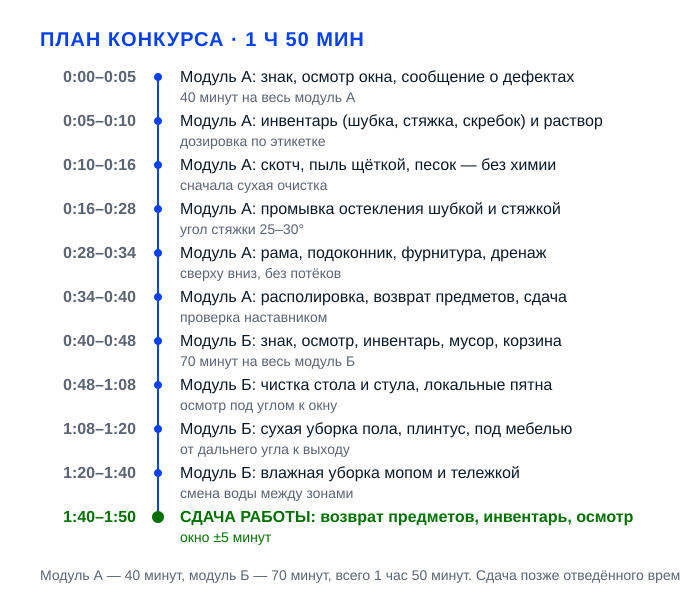
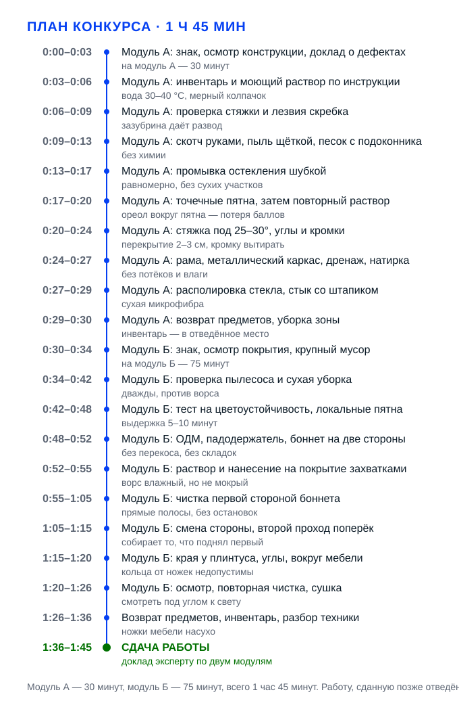
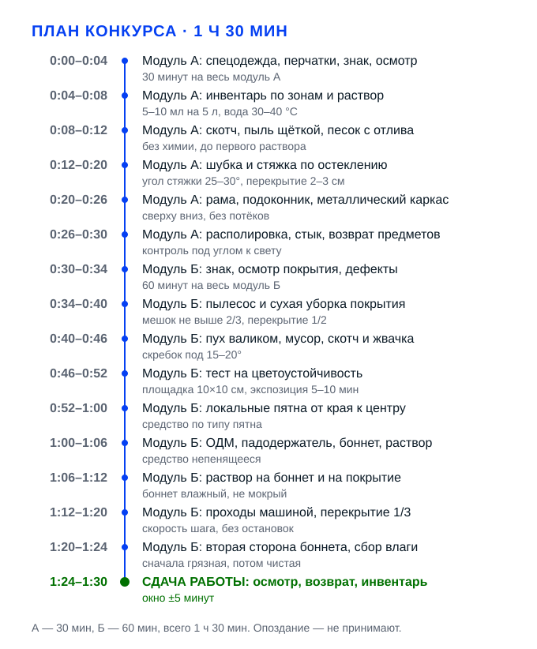

Клининг (Р,О)
Задания ниже — официальные файлы «Абилимпикс» (источник: abilympics-russia.ru), разложенные по категориям. Решения написаны по тексту задания, регламенту и критериям оценки; в них указано, что именно проверяет эксперт.
Школьник
14–16 лет, базовый уровень заданияВыдержка из официального конкурсного задания: страницы, относящиеся к категории «Школьник» (стр. 4–7 источника).
Пошаговое решение
Конкурсное задание категории «Школьники» состоит из двух модулей и длится 1 час 50 минут: 40 минут отведено на мытьё светопрозрачной конструкции вместе с рамой, 70 минут — на уборку школьного кабинета, где нужно вычистить стол и стул, собрать мусор и вымыть пол. Оценивают не скорость, а результат: на стекле не должно остаться разводов, ореолов, ворса и влаги, на раме — потёков, на мебели — пыли и липкости, а корзина должна быть пустой, с аккуратно заправленным пакетом. Ниже задание разложено на пять задач и 51 шагов в том порядке, в каком их удобно выполнять в реальном времени: от предупредительного знака и раствора до финального осмотра кабинета от двери.

Задача 1. Обозначить зону, собрать инвентарь и приготовить растворМодуль А · 40 минут
Модуль А длится 40 минут, и первые минуты в нём самые дорогие: от них зависит, будет ли у вас чистый инвентарь, правильно разведённый раствор и целое стекло. Задача этой части — выйти к окну с проверенным инструментом, обозначенной зоной и понятной картиной дефектов, о которых вы сообщили эксперту. Здесь же набирается заметная часть баллов за организацию рабочего места и безопасность, поэтому подготовка идёт первым пунктом, а не последним.
Действие 1.1. Обозначить зону работ и осмотреть конструкцию
Шаг 1.1.1
Первым делом выставляем предупредительный знак «Осторожно, мокрый пол»: ставим его на подходе к окну, примерно в метре от рабочей зоны, лицом к идущему человеку, а не к себе. Если знак закрывает стол, стул или подоконник с вещами, переставляем так, чтобы он читался от двери кабинета. Делаем это до того, как открыли первую канистру, потому что влага на полу появляется с первой смоченной шубки, а не в конце модуля.
Предупредительный знак — прямой пункт критерия безопасности, который проверяют в обоих модулях: эксперт смотрит, выставлено ли ограждение до начала работ. В кабинете одновременно работают другие участники и волонтёры, и мокрый линолеум под ногами — реальный риск падения, а не абстрактное требование инструкции. Кроме того, знак показывает, что вы начинаете с оценки опасностей, а не с инструмента, и это первое впечатление эксперт запоминает.
Знак стоит устойчиво, не качается, надпись читается с двух-трёх метров и не перевёрнута. Пройдите по траектории, которой пойдёт человек к окну: если он наступает на знак или обходит его вплотную к мокрому участку, переставьте. Убедитесь, что знак не мешает вам ставить табурет и брать инструмент.
Частая ошибка — поставить знак за спиной, у самого окна: идущий человек видит мокрый пол уже после того, как на него наступил. Вторая — выставить знак «потом, когда начну мыть» и забыть: к моменту, когда эксперт подойдёт с чек-листом, ограждения нет, и балл за безопасность уже снят.
Эксперт подходит к зоне в первые же минуты модуля и фиксирует наличие знака до начала работ. Отдельно отмечает, стоит ли знак на пути следования людей и не переставлен ли он «для вида» в угол.
Шаг 1.1.2
Стоя у окна, осматриваем конструкцию по порядку: сначала стёкла на просвет и под углом к свету, потом рамы, штапики, уплотнители, фурнитуру и подоконник. Ищем сколы, трещины, отслоение герметика, следы старой краски и клея, потёртости на уплотнителе, царапины, которые мытьём не убрать. Всё найденное проговариваем вслух любому из экспертов до начала мытья, коротко и по делу: где, что именно, на какой створке.
Задание прямо требует провести визуальный осмотр и сообщить о выявленных дефектах или об их отсутствии любому из экспертов — это отдельный шаг последовательности, за который начисляются баллы и который нельзя пройти молча. Смысл в том, что часть повреждений появилась до вас, и если о них не сказать заранее, их запишут в вашу работу: царапину от скребка, скол на штапике, оторванный уплотнитель.
Проверьте себя по трём точкам: назвали ли вы дефект словами, услышал ли вас эксперт (кивнул или записал), запомнили ли вы это к моменту сдачи. Если сомневаетесь, дефект это или загрязнение, покажите эксперту пальцем, не трогая поверхность руками.
Самая дорогая ошибка — увидеть царапину, решить «не моя, промолчу» и услышать её в перечне недостатков при оценке. Вторая — сообщить о дефекте после мытья: доказать, что он был раньше, уже невозможно, и балл за чистоту стекла падает вместе с доверием к остальным вашим словам.
Эксперт выслушивает сообщение и делает отметку в листе, поэтому важно, чтобы информация прозвучала до работ. Он же сверяет ваши слова с реальным состоянием окна: придуманные дефекты видны быстро.
Действие 1.2. Собрать инвентарь для мытья окон
Шаг 1.2.1
Собираем на тележку или в ведро весь набор под модуль А: шубку для нанесения раствора, стяжку с целой резиной, скребок для наклеек и присохших пятен, комплект салфеток из микрофибры, щётку для пыли в углублениях и перчатки. Стяжку проверяем сразу: проводим пальцем по кромке резины, она должна быть ровной, без зазубрин и засохших кусочков. Шубку берём такую, которая впитывает раствор, но не течёт по раме струёй.
Инвентарь подбирается по видам работ — это первый пункт задания по модулю А, и оценивается он не по количеству предметов на тележке, а по тому, есть ли под каждую операцию свой инструмент. Если вместо стяжки работать только салфеткой, стекло высохнет неравномерно и даст разводы; если снимать наклейку ногтем, останется клей и царапина. Правильный набор экономит время, а 40 минут на модуль — это немного.
На тележке лежат все шесть позиций, ничего не забыто в подсобке. Резина стяжки целая, ручка не шатается, шубка чистая и без запаха старого раствора. Салфетки сухие и сложены отдельно от мокрой шубки, чтобы не набрать влаги до начала работы.
Классика — взять стяжку с надорванной резиной: полосы на стекле появляются на каждом ходе, и время уходит на переделку. Вторая ошибка — принести один вид салфеток на всё: ими же вытирают подоконник и располировывают стекло, и жир с подоконника уходит на стекло, давая мутный след.
Эксперт смотрит на состав инвентаря в первые минуты и отмечает, соответствуют ли инструменты операциям. Отдельно фиксирует состояние стяжки и скребка: по ним видно, готовился участник или взял что дали.
Шаг 1.2.2
Разбираем салфетки по назначению и цвету: синие — для стекла и рам, жёлтые — для полировки стекла насухо, зелёные — для подоконника и мебели, красные остаются для зоны мусора. Каждую складываем вчетверо, чтобы было четыре рабочие плоскости, и меняем плоскость после каждой створки. Мокрую и сухую салфетки держим раздельно — в разных руках или в разных карманах фартука.
Цветовое кодирование — это способ не перенести грязь с рамы на стекло и с подоконника на столешницу; в критериях оценки прямо есть «отсутствие остатков ворса протирочного материала» и «отсутствие ореолов и разводов». Складывание вчетверо даёт четыре чистые плоскости вместо одной, и за 40 минут вы не бегаете за новой салфеткой каждые две минуты. Разделение мокрой и сухой работы — условие располировки без разводов.
На столе лежат три разных цвета, каждый со своей функцией, и вы называете её вслух. Салфетки чистые, без засохших кусков и запаха. Проверьте, что сухая полировочная не намокла от шубки: намокнув, она перестаёт полировать и начинает размазывать.
Одна салфетка на всё — самая частая причина мутных разводов: стекло протирается салфеткой, которой только что снимали грязь с подоконника. Вторая ошибка — держать мокрую салфетку в кармане вместе с сухой: к располировке сухая уже влажная, и стекло сохнет с ореолами.
Эксперт проверяет, разделены ли салфетки по зонам, и смотрит на руки участника в процессе: берёт ли он новую плоскость или возит одной и той же грязной тряпкой.
Шаг 1.2.3
Ведро или тележку ставим сбоку от окна, на сухом участке, так, чтобы до него не надо было тянуться через подоконник и чтобы он не перекрывал проход. Раствор наливаем не выше половины ведра: полное ведро расплёскивается при переноске, и вы получаете лужу до начала работы. Инвентарь раскладываем по порядку операций — сначала скребок и щётка, потом шубка, затем стяжка, в конце салфетки.
Порядок на рабочем месте экономит главный ресурс модуля — время: при 40 минутах каждая лишняя ходьба за инструментом стоит минуту. Ведро, поставленное на проходе, приводит к тому, что в раствор попадает грязь с обуви, а на полу остаются следы. Расположение по порядку операций — это и есть та подготовка рабочего места, которую задание требует отдельным пунктом.
До ведра вы дотягиваетесь, не сходя с места у окна. Вокруг ведра сухо, на полу под ним нет капель. Инструмент лежит так, что при повороте корпуса вы берёте его без поиска. Проход в кабинет свободен, знак виден.
Полное ведро, которое расплёскивается при первом шаге, — типичная ошибка: раствор уходит, пол мокрый, и время тратится на подтирание. Вторая — поставить ведро за спиной, между стульями: каждое движение к нему превращается в шаг с риском опрокинуть.
Эксперт оценивает организацию места: доступность инструмента, отсутствие луж и то, не мешает ли ваша зона остальным. Порядок на месте он считает частью критерия подготовки рабочего места.
Действие 1.3. Приготовить моющий раствор по инструкции
Шаг 1.3.1
Наливаем в ведро воду и добавляем средство строго по дозировке на этикетке — обычно это колпачок или мерная крышка на 5 литров, и брать «на глаз побольше» нельзя. Для стекла воду берём тёплую, около 30–40 °C: в горячей средство высыхает на стекле быстрее, чем вы дойдёте стяжкой, а в холодной хуже расходится. Размешиваем шубкой или рукой в перчатке до однородности, чтобы на дне не остался сгусток концентрата.
Приготовление раствора по инструкции — отдельный шаг задания и отдельный критерий: эксперт смотрит и на дозировку, и на то, читал ли участник этикетку. Переконцентрированный раствор оставляет на стекле липкую плёнку и разводы, которые потом приходится смывать повторно, а это уже потерянные минуты. Недоконцентрированный просто не работает, и вы трёте одно и то же место трижды.
Раствор однородный, без сгустков на дне и без обильной пены: пена говорит о переизбытке средства и потом даст разводы. Потрогайте воду рукой в перчатке — она тёплая, но не обжигает. Сверьтесь с этикеткой: вы добавили именно столько, сколько указано, и средство предназначено для стекла.
Ошибка «чем больше, тем чище» — самая частая: пена на стекле высыхает в белые следы, и стяжка их не снимает, приходится промывать заново. Вторая — развести средство в холодной воде и удивляться, что загрязнения не расходятся и шубка скользит по сухому.
Эксперт подходит в момент приготовления и смотрит на мерную посуду и этикетку: дозирует участник по инструкции или льёт на глаз. Отдельно отмечает, размешан ли раствор до однородности.
Шаг 1.3.2
Надеваем перчатки до того, как открыли канистру: даже мягкое средство для стёкол сушит кожу и вызывает раздражение при долгом контакте. Ведро с раствором подписываем или ставим на него бирку с названием средства — рядом стоят чужие ведра, и перепутать раствор для пола с раствором для стекла легко. Канистру закрываем сразу после отмеривания и убираем под тележку, а не оставляем на подоконнике.
Техника безопасности при работе с химическими средствами — сквозной критерий обоих модулей: за него снимают баллы, а при грубом нарушении могут остановить работу. Маркировка нужна не для красоты: раствор для пола с щёлочью на стекле даёт матовые пятна, которые не снимаются, и вы теряете и время, и балл за чистоту. Закрытая канистра — это ещё и отсутствие посторонних запахов в кабинете.
Перчатки на руках, целые, без порезов. На ведре есть понятная пометка, и вы можете сказать, что в нём. Канистра закрыта и стоит внизу, на виду, но не на рабочей поверхности. На руках и на полу нет капель концентрата.
Работать без перчаток «пять минут, ничего не будет» — типично и приводит к тому, что к концу модуля руки скользят и мокрые салфетки выпадают. Вторая ошибка — налить раствор для пола в ведро из-под стекла, не сполоснув: остатки щёлочи дают на стекле матовую пелену.
Эксперт фиксирует наличие перчаток и маркировки, смотрит, закрыта ли тара. Нарушение техники безопасности он отмечает сразу, не дожидаясь конца модуля.
Шаг 1.3.3
Перед нанесением раствора на всё стекло проверяем его на небольшом участке: смачиваем угол нижней створки, ждём около минуты и смотрим, не пошла ли реакция с тонировкой, плёнкой или уплотнителем. Заодно проверяем, как ведёт себя стяжка на этом участке — сходит ли раствор одним ходом. Если на стекле защитная плёнка или тонировка, работаем только чистой водой и минимальным количеством средства.
Проба на незаметном участке отличает аккуратную работу от рискованной: стекло с плёнкой или тонировкой от щелочного средства мутнеет, и восстановить его в рамках конкурса невозможно. Минута проверки страхует от потери всего модуля А, потому что мутное стекло уже не соответствует результату «отсутствие мутности». Заодно вы настраиваете руку под стяжку на маленькой площади.
На пробном участке стекло осталось прозрачным, цвет не изменился, уплотнитель не побелел. Стяжка сняла раствор одним движением, без полос по краям. Посмотрите на участок под углом к окну: радужные пятна означают, что средство слишком крепкое и его надо разбавить.
Пропустить пробу и нанести раствор сразу на всё остекление — ошибка, которая проявляется через десять минут: тонировка мутнеет, и отмыть её уже нельзя. Вторая — проверять раствор на верхней створке, куда потом трудно добраться для переделки.
Эксперт отмечает, делал ли участник пробу на малозаметном участке, особенно если на стекле есть плёнка. Это читается как понимание свойств материалов, а не как формальность.
Задача 2. Промыть светопрозрачную конструкцию вместе с рамойМодуль А · 40 минут
Это ядро модуля А: снять загрязнения без химии, промыть остекление раствором, стянуть его стяжкой и довести раму с фурнитурой. Результат описан в задании очень конкретно — ни грязи, ни пятен, ни отпечатков пальцев, ни высохших брызг, ни ореолов вокруг очищенных участков, ни мутности, ни ворса, и нигде не остаётся влаги. Такая формулировка означает, что оценивают не «помыл или нет», а каждую из этих семи вещей по отдельности, и порядок операций здесь важнее силы нажима.
Действие 2.1. Снять загрязнения без химических средств
Шаг 2.1.1
Снимаем с рамы и стекла всё, что держится механически: остатки скотча, наклейки, бумажные ярлыки. Скотч берём пальцами в перчатках и тянем медленно, под острым углом к поверхности, а не вверх: так он сходит полосой, а не рвётся на кусочки. Если край не поддевается, помогаем скребком, держа его под углом около 30 градусов и работая только по клеевому слою, не по стеклу. Крупные куски складываем в пакет, а не на подоконник.
Задание прямо предписывает удалять загрязнения без химических средств: скотч руками, пыль щёткой. Это логично: растворитель клея на раме может снять краску, а лезвие скребка, поставленное неправильно, оставляет царапину, которую эксперт увидит под углом к свету. Механическая очистка перед мытьём экономит и раствор: иначе плёнка клея размазывается шубкой по всему стеклу.
Проведите пальцем в перчатке по месту, где был скотч: поверхность должна быть гладкой, без липкого слоя и бугорков клея. Посмотрите на раму под углом: матовые следы от отрыва снимаются средством, но уже после основной промывки, а не сейчас.
Тянуть скотч вверх, от стекла, — он рвётся на мелкие куски, и на них уходит половина отведённого времени. Вторая ошибка — скребком по сухому стеклу с песком: абразивные частицы под лезвием оставляют сетку царапин, и балл за чистоту стекла уже не вернуть.
Эксперт смотрит на инструмент в руках и на следы после снятия скотча. Отдельно фиксирует, не пользуется ли участник растворителем там, где задание требует работать без химии.
Шаг 2.1.2
Проходим щёткой все углубления конструкции: паз между штапиком и стеклом, стык створки и рамы, верхнюю полку, внутренние углы и желобки фурнитуры. Ведём щёткой вдоль углубления короткими движениями, подставляя снизу сухую салфетку, чтобы пыль не летела на уже очищенное стекло. Отдельно проходим подоконник и место под ним, где пыль копится вместе с волосами и крошками.
Пыль в углублениях превращается в грязные потёки, как только вы нанесёте раствор: вода размывает её и несёт по раме вниз, оставляя серые дорожки, за которые снимут балл. Задание требует промести углубления по всей поверхности конструкции, и эксперт проверяет именно труднодоступные места, а не открытое стекло. Сухая очистка до влажной — базовое правило: сначала убирают то, что убирается без воды.
Проведите сухой белой салфеткой по дну паза — серого следа быть не должно. Посмотрите на углы сверху вниз: в них нет серых комков и паутины. После прохода щёткой на стекле нет пыльного налёта, который смахивался с рамы.
Начать мыть с раствора, не пройдя щёткой, — пыль из пазов стекает по стеклу серыми потёками, и проём приходится перемывать целиком. Вторая ошибка — тереть щёткой по стеклу: сухая пыль с песком работает как наждак.
Эксперт проверяет углубления пальцем в перчатке и смотрит, как участник держит щётку. Он видит и порядок работы: сначала сухая очистка, потом влажная.
Шаг 2.1.3
Перед смачиванием проводим ладонью в перчатке по нижней части стекла и по подоконнику: там остаются песок, крошки, мелкие камешки. Смахиваем их сухой щёткой в ладонь или на салфетку и выбрасываем в пакет. Заодно осматриваем нижнюю кромку стекла и углы на сколы: если скол уже есть, мыть это место надо особенно аккуратно, без нажима стяжкой. Проверку песка повторяем перед каждой створкой, а не один раз за модуль.
Песчинка под шубкой или под резиной стяжки — это царапина на стекле, и она останется на весь конкурс, потому что располировка её не уберёт. Именно поэтому профессиональные уборщики сначала снимают абразив и только потом подают воду. Скол на кромке — место, где стекло ломается от нажима: если не учесть его заранее, можно получить трещину и потерять весь модуль.
Проведите по стеклу у нижней кромки тыльной стороной ладони: поверхность гладкая, без крупинок. На салфетке, которой смахивали, видно, что песок снят. Новые сколы, если нашли, показаны эксперту до мытья.
Сразу подать раствор на запылённое стекло — песок размазывается шубкой и оставляет длинные тонкие царапины, особенно заметные на просвет. Вторая ошибка — давить стяжкой у скола: кромка откалывается, и вместо балла за чистоту начинается разговор о порче имущества.
Эксперт обращает внимание на подготовку нижней части остекления, потому что именно там чаще всего появляются царапины. Сколы, о которых вы сообщили заранее, он сверяет со своим листом.
Действие 2.2. Промыть остекление шубкой и снять раствор стяжкой
Шаг 2.2.1
Окунаем шубку в раствор и слегка отжимаем о край ведра: она должна быть мокрой, но не стекать струёй. Смачиваем стекло сверху вниз полосами шириной примерно 40–50 сантиметров, перекрывая соседнюю полосу на 5–10 сантиметров, чтобы между проходами не осталось сухих участков. Двигаемся сначала по периметру, обрабатывая края и углы, и только потом проходим середину: у краёв раствор высыхает быстрее.
Равномерно смочить всю поверхность — прямое требование задания, и от этого зависит, сойдёт ли раствор стяжкой одной полосой. Если смачивать кусками, граница между сухим и мокрым участком высохнет раньше, чем вы вернётесь, и останется видимой линией — тот самый развод вокруг очищенного участка, который есть в перечне недостатков. Отжим шубки важен не меньше: струящаяся вода заливает раму и подоконник.
Посмотрите на стекло под углом: вся поверхность влажная, без сухих пятен и без потёков на раме. Вода не капает с рамы на подоконник. Пройдите по периметру взглядом — углы смочены, а не оставлены сухими.
Наносить раствор не отжатой шубкой — вода льётся по раме и подоконнику, заливает уплотнитель и оставляет потёки, которые потом снимают баллы. Вторая ошибка — смочить половину створки и сразу взяться за стяжку: пока стягиваете, вторая половина уже подсохла.
Эксперт смотрит на технику нанесения: перекрываются ли полосы, отжата ли шубка, обработаны ли края. По этому видно, работал ли участник с окнами раньше.
Шаг 2.2.2
Проходим шубкой по влажному стеклу, как бы промывая его: короткими движениями сверху вниз и слева направо, с нажимом на загрязнённых местах. Внимательно смотрим на локальные пятна — следы от пальцев, брызги краски, серые разводы у ручки. Если загрязнение сцеплено с поверхностью и не сходит от раствора, не тянем его шубкой сильнее, а оставляем до этапа с химией.
Это основной этап мытья, и от него зависит результат «отсутствие грязи, пыли, пятен и отпечатков пальцев». Здесь вы либо снимаете загрязнение, либо развозите его по стеклу, и во втором случае стяжка снимет только воду, а грязь останется в виде ореола. Отдельный осмотр на локальные загрязнения задание требует прямо, и это не формальность: пятна у ручки и на уровне глаз видны сразу.
Посмотрите на стекло сбоку, на свет: должны быть видны только влажные полосы, без серых разводов и тёмных точек. Проведите пальцем в перчатке по подозрительному месту: если палец идёт с усилием или оставляет чистую дорожку, загрязнение осталось и требует отдельной обработки.
Тереть пятно шубкой с песком — вы размазываете грязь по площади и рискуете поцарапать стекло. Вторая ошибка — не смотреть на стекло сбоку, а только прямо: при прямом взгляде ореолы и тонкая плёнка не видны, и вы узнаёте о них на оценке.
Эксперт наблюдает за движением шубки и за тем, осматривает ли участник поверхность на локальные загрязнения. Сам он смотрит на стекло под углом, поэтому натирайте до состояния, которое видно сбоку.
Шаг 2.2.3
Берём стяжку так, чтобы ручка лежала в ладони свободно, а резина прилегала к стеклу всей кромкой. Ставим её в верхний угол, наклоняем полотно примерно на 25–30 градусов и ведём вниз одной непрерывной полосой, не отрывая от стекла. Каждый следующий проход начинаем так, чтобы перекрыть предыдущий на 2–3 сантиметра и не оставить полосу воды между ними. После каждого прохода вытираем резину сухой салфеткой.
Стяжка — главный инструмент модуля А: правильно снятый раствор даёт прозрачное стекло без разводов, неправильно — полосы и высохшие капли, которые придётся перемывать. Наклон в 25–30 градусов — рабочий угол, при котором резина работает как нож, а не как скребок; при большем наклоне вода уходит под резину и остаётся на стекле. Протирание резины после каждого хода — то, что отличает чистое стекло от стекла с серыми полосами.
После прохода на стекле не остаётся воды: полоса, по которой прошла стяжка, сухая и прозрачная. Посмотрите на резину — на ней нет песка и волосков. Проверьте стыки полос: тонкая линия воды между ними означает, что нужен повторный проход с перекрытием.
Вести стяжку вверх или боком — вода стекает по уже сухому стеклу и оставляет потёки. Вторая ошибка — не протирать резину: каждый следующий ход переносит грязную воду, и на стекле остаются серые полосы, особенно заметные на просвет.
Эксперт стоит рядом и смотрит на угол стяжки, на непрерывность прохода и на то, вытирается ли резина. Это самый наглядный критерий техники: его видно за один проход.
Шаг 2.2.4
После основных проходов проходим кромки: у рамы остаётся узкая полоса, которую полотно стяжки не захватывает. Её снимаем углом стяжки или сухой салфеткой, двигаясь вдоль рамы, а не поперёк. Внизу, у подоконника, собираем воду, которая стекла при работе: подставляем салфетку и ведём вдоль кромки, не давая воде уйти на подоконник и на пол. Углы створки промокаем сухой салфеткой.
Именно кромки и углы дают те самые высохшие брызги и ореолы вокруг очищенных участков, которые перечислены в результате модуля. Вода, стекшая к подоконнику, успевает высохнуть в известковый след, а это уже загрязнение рамы, хотя стекло вымыто чисто. Углы — то, что эксперт проверяет в первую очередь, потому что туда не доходит ни шубка, ни полотно стяжки.
Проведите сухой белой салфеткой по стыку стекла и рамы по всему периметру: на ней не должно быть ни грязи, ни влаги. Посмотрите на подоконник — под створкой сухо, дорожки от стёкшей воды нет. В углах нет тёмных скоплений.
Оставить воду у нижней кромки «она сама высохнет» — через десять минут там белый известковый след, и эксперт считает его загрязнением рамы. Вторая ошибка — вытирать угол салфеткой с раствором: средство размазывается, и после высыхания остаётся липкая плёнка с ворсом.
Эксперт прощупывает стык стекла и рамы салфеткой и смотрит на подоконник под створкой. Эти две точки он проверяет почти всегда, потому что они показывают, доведена ли работа до конца.
Действие 2.3. Снять сцепленные загрязнения химией и промыть участок заново
Шаг 2.3.1
Для сцепленных загрязнений выбираем средство по природе пятна: следы клея и наклеек снимаем средством для удаления наклеек или спиртовым составом, известковый налёт и потёки от воды — слабым кислотным средством, жирные следы — обезжиривателем. Наносим не на всё стекло, а на салфетку или губку, и сначала пробуем на маленьком участке у края. Хлорсодержащие составы на стекло, раму и уплотнитель не наносим.
Задание разрешает применять химию только там, где загрязнение сцеплено с поверхностью, — точечно, а не по всей площади. Правильный подбор средства — разница между «пятно ушло за десять секунд» и «пятно размазалось и стало серым». Агрессивные составы на алюминиевой раме и резиновом уплотнителе вызывают коррозию и побеление, а это уже повреждение конструкции и отдельный недостаток.
На пробном участке пятно снялось без помутнения стекла и без изменения цвета рамы. Проверьте уплотнитель: он не побелел и не стал липким. Если после средства остался ореол, загрязнение размазано, а не снято, и нужен другой состав.
Полить пятно средством прямо на стекло — оно стекает на раму и уплотнитель, и вы получаете белёсые дорожки, которые не снимаются водой. Вторая ошибка — взять хлорный состав «чтобы наверняка»: на алюминии остаются тёмные пятна, а запах в кабинете мешает работать до конца модуля.
Эксперт смотрит, точечно ли наносится средство и делает ли участник пробу. Он же проверяет, не повреждены ли рама и уплотнитель после химии: это входит в результат модуля.
Шаг 2.3.2
Наносим средство на салфетку или губку, прикладываем к пятну и держим столько, сколько указано на этикетке, — обычно от тридцати секунд до двух минут. Сразу не трём: средство должно размягчить загрязнение, а не размазаться по площади. Снимаем размягчённое пятно салфеткой движением от края пятна к центру, чтобы не увеличить площадь. После снятия сразу промываем участок чистой водой с шубкой.
Выдержка — то, что делает химию работой: без неё вы трёте пятно, тратите силы и время, а результат нулевой. Движение от края к центру не даёт загрязнению расползтись, иначе вместо точки получается пятно втрое больше, а это прямая потеря баллов за отсутствие пятен. Промывка водой обязательна: остатки средства высохнут в плёнку и дадут ореол.
Пятно снято полностью, при взгляде под углом на его месте нет контура и нет разницы в прозрачности. Салфетка, которой снимали, показывает на себе грязь. После промывки участок ничем не отличается от соседних.
Натереть средство и сразу стереть — загрязнение размягчилось только сверху и размазалось. Вторая ошибка — не промыть участок водой: остатки средства вступают в реакцию с моющим раствором и дают мутную плёнку, которую видно на просвет.
Эксперт засекает, держит ли участник выдержку и промывает ли место после химии. Непромытое место он находит по ореолу, даже если пятна уже нет. Отдельно он отмечает, чем именно снимали средство и промыли ли место после него.
Шаг 2.3.3
После химической обработки возвращаемся на этот участок и снова наносим моющий раствор шубкой — задание требует именно этого, а не просто протереть место салфеткой. Проходим шубкой всю площадь участка с перекрытием на соседние 10 сантиметров, затем стягиваем раствор стяжкой заново, как будто моем это место впервые. Небольшой участок стягиваем одним движением сверху вниз.
Повторное нанесение раствора снимает остатки химии и выравнивает поверхность, чтобы граница обработанного участка не читалась на стекле. Без этого шага остаётся развод вокруг очищенного участка — отдельный пункт в перечне недостатков. Кроме того, повторная промывка возвращает стеклу одинаковую прозрачность по всей площади, а это и есть отсутствие мутности.
Посмотрите на место, где было пятно, под углом к окну: границы участка не видно, прозрачность такая же, как рядом. Проведите сухой салфеткой — на ней нет ни следа средства, ни липкости. Стяжка прошла без полос.
Ограничиться протиранием химии салфеткой — остаётся тонкая граница участка, которая на просвет выглядит как светлое пятно. Вторая ошибка — нанести раствор только на точку пятна: граница всё равно видна, потому что соседние участки мылись в другой концентрации.
Эксперт проверяет, вернулся ли участник на обработанное место с раствором. Отсутствие границы вокруг бывшего пятна для него прямой признак правильно выполненной работы.
Действие 2.4. Промыть раму, подоконник и фурнитуру
Шаг 2.4.1
Промываем раму и створки салфеткой из микрофибры, смоченной в том же растворе: сначала верхнюю перекладину, потом боковые, потом нижнюю, двигаясь сверху вниз, чтобы грязная вода не текла по уже чистому. Отдельно проходим штапик — узкие полоски, прижимающие стекло: их удобно мыть сложенной салфеткой по всей длине. Углы и стыки профиля дополнительно проходим щёткой или ватной палочкой.
Результат модуля А включает требование «рамы очищены от загрязнений, нет потёков», и это отдельные баллы, которые часто теряют, увлёкшись стеклом. Грязь на белом профиле видна сразу и портит впечатление от всей работы, даже если остекление идеально. Движение сверху вниз — единственный способ не оставить потёков: вода с грязной верхней перекладины не должна попадать на чистую нижнюю.
Проведите белой салфеткой по раме в трёх местах — сверху, сбоку и внизу: следов грязи нет. Посмотрите на профиль под углом: потёков и разводов нет, цвет ровный. Углы и стыки чистые, без серых полос в глубине.
Мыть раму снизу вверх — грязная вода течёт по вымытой части и оставляет длинные серые полосы. Вторая ошибка — тереть профиль мокрой салфеткой без последующей протирки: на белом пластике остаются разводы от высохшей воды, которые видны сильнее, чем грязь.
Эксперт проводит пальцем по нижней перекладине и смотрит углы штапика. Раму он оценивает отдельно от стекла, поэтому чистое стекло при грязной раме не спасает.
Шаг 2.4.2
Проходим фурнитуру: ручку, петли, запорные механизмы — чистой салфеткой, без заливания раствором, чтобы средство не попало внутрь механизма. Уплотнитель промываем аккуратно, отжимая салфетку почти насухо: резина не любит обильной воды, после неё она сохнет и трескается. Дренажные отверстия в нижнем профиле прочищаем щёткой или зубочисткой, убирая пыль и мусор, через которые уходит конденсат.
Фурнитура и уплотнитель — часть конструкции, и их состояние входит в критерий «рама очищена от загрязнений, нет потёков». Забитые дренажные отверстия приводят к тому, что вода стоит в профиле и вытекает на подоконник уже после сдачи работы, а это замечают при финальном осмотре. Аккуратность с фурнитурой говорит о понимании, что окно — механизм, а не просто стекло в рамке.
Ручка и петли сухие, без капель и разводов. Проведите пальцем по уплотнителю: он чистый, эластичный, не липкий. Дренажные отверстия просматриваются насквозь, в них нет серой пробки из пыли. Проверьте также, что раствор не попал внутрь механизма петель и в паз под ручкой.
Залить фурнитуру раствором — средство вымывает смазку, механизм начинает скрипеть, а на металле появляются тёмные следы. Вторая ошибка — не заметить забитый дренаж: вода из профиля вытекает на подоконник через полчаса, и на сдаче вы получаете потёк, которого не было при мытье.
Эксперт проверяет ручку и дренажные отверстия: это показательные точки. Он отмечает, работал ли участник с уплотнителем бережно или тёр его мокрой тряпкой.
Действие 2.5. Располировать стекло и сдать модуль
Шаг 2.5.1
Располировываем стекло сухой салфеткой из микрофибры: складываем вчетверо и проходим круговыми движениями с лёгким нажимом, меняя плоскость по мере намокания. Двигаемся от верхнего угла к нижнему, потом проходим вторым кругом поперёк — это снимает ворс и остаточную влагу. Отдельно проходим место соприкосновения стекла и рамы, как требует задание: там всегда остаётся тонкая полоса влаги, которая сохнет в серую линию.
Располировка снимает мельчайшую влагу и ворс, которые не видно сразу после стяжки, но которые проявляются на сдаче мутным налётом. Задание отдельно называет отсутствие остатков ворса протирочного материала и остатков влаги по всем поверхностям, поэтому располировка закрывает сразу два критерия. Стык стекла и рамы — самая частая точка, где остаётся влага, потому что стяжка туда не достаёт.
Посмотрите на стекло под углом к свету с двух сторон: ни ворсинок, ни радужных пятен, ни тонких линий. Проведите сухой ладонью — она скользит ровно, без липкости. Стык с рамой проверьте белой салфеткой: следов влаги нет.
Полировать влажной салфеткой — она не снимает воду, а размазывает её тонким слоем, который сохнет в мутную пелену. Вторая ошибка — полировать в одном направлении и не менять плоскость салфетки: ворс собирается в валики и остаётся на стекле полосками.
Эксперт смотрит на стекло под углом и наклоняет голову, чтобы поймать блик: именно так видны ворс и разводы. Стык с рамой он проверяет салфеткой. Сухая салфетка в его руке всегда наготове, и он смотрит, как вы её складываете.
Шаг 2.5.2
Возвращаем на подоконник всё, что с него снимали: горшки, подставки, банки — в том же порядке и на те же места. Шубку, стяжку и скребок ополаскиваем и относим в специально отведённое место, а не оставляем на подоконнике или на полу. Салфетки складываем в отдельный пакет, раствор выливаем по указанию эксперта, ведро споласкиваем. Знак убираем только после того, как убедились, что пол сухой.
Задание прямо требует вернуть предметы, которые были до начала работ, отнести шубки и салфетки в специально отведённое место и убрать рабочее место — это финальный блок баллов модуля. Предметы, оставленные не на своих местах, эксперт замечает сразу, потому что сравнивает картину с исходной. Убранный инвентарь показывает, что участник мыслит циклом работы, а не отдельными операциями.
Пройдите взглядом по подоконнику и вокруг окна: всё стоит как до начала, лишнего нет. На полу нет капель и разводов, знак можно снимать. Инвентарь на месте хранения, чистый, ведро пустое. Проверьте также, что под каждым возвращённым предметом нет капель раствора.
Оставить ведро с раствором у окна «до конца модуля» — на сдаче его видно, и балл за организацию места снимается. Вторая ошибка — вернуть предметы, не протерев под ними подоконник: под горшком остаётся влажное кольцо, которое к оценке высыхает в серый след.
Эксперт сверяет расположение предметов с первоначальным и смотрит на место хранения инвентаря. Финальный осмотр зоны он делает перед тем, как объявить время сдачи модуля.
Задача 3. Подготовить кабинет: зона, инвентарь, мусор, растворМодуль Б · 70 минут
Модуль Б длится 70 минут — почти вдвое дольше модуля А, потому что здесь и мебель, и пол, и корзина. Задача этой части — подготовить кабинет так, чтобы уборка шла без остановок: обозначенная зона, инвентарь, разделённый по видам работ, пустая корзина с аккуратно заправленным пакетом и раствор нужной концентрации. Подготовка занимает примерно восемь минут и экономит не меньше двадцати.
Действие 3.1. Обозначить зону уборки и осмотреть кабинет
Шаг 3.1.1
Переходим к зоне кабинета и выставляем предупредительный знак у входа в ту часть, где будем работать: если кабинет большой, ставим его так, чтобы он читался от двери, а при необходимости — второй у дальнего прохода. Делаем это до того, как собрали первый мусор: подметание поднимает пыль, а влажная уборка сразу делает пол скользким. Знак с модуля А не переставляем, пока у окна не высохло.
Требование выставить знак повторяется в модуле Б отдельным пунктом, и это логично: кабинет — проходное место, где ходят другие участники. Эксперт оценивает безопасность в каждом модуле отдельно, поэтому знак, оставшийся у окна, не засчитывается как знак в зоне уборки кабинета. Правильно выставленный знак ещё и защищает работу: по свежевымытому полу никто не пройдёт.
Знак виден от входа в кабинет и не заслонён мебелью. Убедитесь, что он не мешает вам подметать: если приходится переступать через него, отодвиньте на полметра. Пол под знаком сухой, иначе он разъезжается.
Забыть про знак, потому что «он уже стоит у окна», — типичная ошибка при переходе между модулями: балл за безопасность в модуле Б снимается, даже если у окна всё было правильно. Вторая — поставить знак вплотную к стене, где его никто не видит.
Эксперт фиксирует знак в начале модуля Б отдельно от модуля А. Он смотрит, где именно стоит знак относительно зоны уборки, а не просто его наличие. Знак для него — точка отсчёта модуля, с неё начинается его лист оценки.
Шаг 3.1.2
Осматриваем кабинет по маршруту: стол и стул со всех сторон, корзина для бумаг, пол по периметру и в проходах, плинтусы, углы под мебелью. Отмечаем, что нужно убрать: крупный мусор, пятна на полу, следы на столешнице, а также повреждения — скол на столешнице, оторванный угол пластика, трещину в ножке стула. О найденном сообщаем любому из экспертов до начала уборки, коротко и по существу.
Последовательность модуля Б начинается с визуального осмотра и сообщения эксперту, и это отдельный пункт оценивания. Смысл тот же, что в модуле А: повреждение, о котором не сказали заранее, запишут в вашу работу. Кроме того, осмотр даёт план — вы заранее знаете, где лежит крупный мусор и где потребуется дополнительное средство, а значит, не ходите по кабинету в процессе.
Вы называете вслух три вещи: что убрать в первую очередь, где есть пятна под отдельное средство и какие повреждения обнаружены. Эксперт услышал и отметил. Маршрут пройден целиком, включая угол за дверью.
Начать с подметания, не осмотрев кабинет, — потом выясняется, что под столом разлито что-то липкое, и мусор прилипает к мопу. Вторая ошибка — увидеть царапину на столешнице и промолчать: при оценке её отнесут к вашей работе, и балл потеряется сразу по двум критериям.
Эксперт выслушивает сообщение и сверяет его с состоянием мебели. Отсутствие сообщения при явных повреждениях он считает отдельным нарушением последовательности.
Действие 3.2. Выбрать инвентарь и салфетки по видам работ
Шаг 3.2.1
Собираем инвентарь под три вида работ: для мебели — салфетки из микрофибры двух цветов, губка, средство для мебели; для пола — моп с одноведерной тележкой, ведро, щётка и совок для сухой уборки; для мусора — пакет и перчатки. Моп берём с чистым ворсом и проверяем крепление к держателю: если моп болтается, при отжиме он слетает. Тележку ставим в проходе, но не на пути к двери.
Задание требует выбрать инвентарь и салфетки в соответствии с видами работ — это отдельный критерий, и оценивается он по составу, а не по количеству. Салфетка, которой вытирали стол, не должна попасть на пол, а моп не должен касаться мебели: это правило эксперт проверяет в течение всего модуля. Исправный моп и устойчивая тележка экономят время на отжим, которого при 70 минутах предстоит много.
На тележке три группы инвентаря, и вы объясняете, что для чего. Моп держится на держателе, ворс чистый, без засохшей грязи. Тележка устойчива, колесо не заедает, ведро вставлено до упора. Проверьте, что запасная насадка на моп лежит рядом, а не в подсобке.
Взять один моп на всё и им же протирать стол — прямое нарушение санитарных правил, за которое снимают баллы. Вторая ошибка — принести моп с грязным ворсом: грязь развозится по всему полу, и влажная уборка не даёт результата, сколько бы вы ни меняли воду.
Эксперт смотрит на состав инвентаря и на то, разделены ли инструменты по зонам. Отдельно проверяет чистоту мопа до начала работы. После работы он смотрит, промыт ли ворс мопа и не осталось ли в нём волос и песка.
Шаг 3.2.2
Разводим салфетки по цветам и назначению: зелёные — для столешницы, синие — для каркаса стула и подоконника, красные — только для корзины и зоны мусора, жёлтые — для финишной протирки насухо. Каждую складываем вчетверо, чтобы было четыре рабочие плоскости, и меняем плоскость после каждого предмета мебели. Моп оставляем один, но следим, чтобы он не касался ни стола, ни стула.
Цветовое кодирование решает главную проблему уборки кабинета — перенос грязи с грязного на чистое. Корзина для бумаг грязнее столешницы в разы, и салфетка после неё, попав на стол, сводит на нет всю чистку. В критериях оценки это читается как отсутствие остатков волокон протирочного материала и отсутствие локальных загрязнений, то есть правильная организация салфеток напрямую приносит баллы.
Салфетки разложены по цветам, и вы называете назначение каждой. Ни одна не лежит «на всякий случай» без функции. Моп стоит отдельно и не соприкасается с мебелью. Убедитесь, что красная салфетка не лежит вплотную к зелёной: в спешке их легко перепутать.
Протирать стол той же салфеткой, которой вытерли корзину, — самый частый и самый незаметный перенос грязи: стол выглядит чистым, но на нём остаются частицы из-под мусора. Вторая ошибка — держать все салфетки одной кучей на тележке, где мокрая лежит на сухой.
Эксперт смотрит, меняются ли салфетки при переходе от корзины к столу. Это видно только в процессе, поэтому не пытайтесь ускорить работу за счёт порядка.
Шаг 3.2.3
Проверяем то, чем будем работать: держатель мопа затянут, ручка не шатается, отжим на тележке работает; ведро без трещин, иначе раствор уходит на пол; пакет для мусора целый, без проколов. Если тележка с отжимом-корзиной, проверяем, что корзина ходит свободно и не зажимает ворс. Найденное неисправное сразу меняем у эксперта, а не пытаемся работать «как-нибудь».
Неисправный инвентарь отнимает время, которого в модуле Б и так немного: слетевший моп заставляет возвращаться к тележке каждые две минуты, а дырявое ведро оставляет лужу, которую вы же и будете вытирать. Исправность инвентаря входит в критерий подготовки рабочего места. Спокойная проверка в начале — привычка, которая отличает профессиональную уборку от бытовой.
Моп нажат в отжим и вышел из него без рывка. Ведро налито и не течёт, при наклоне вода не идёт по стенке. Пакет вставлен в корзину и держится за борта, дно не прорвано. Проверьте колесо тележки: она должна катиться по прямой, без увода в сторону.
Начать уборку и обнаружить, что отжим заедает, уже с полным ведром — вы теряете пять-семь минут и льёте воду на пол. Вторая ошибка — взять пакет с прорехой: мусор сыплется на только что вымытый пол, и зону приходится проходить заново.
Эксперт отмечает, проверял ли участник инвентарь до работы. Неисправный инвентарь, взятый в работу, он считает недочётом организации, даже если участник потом справился.
Действие 3.3. Собрать крупный мусор и привести в порядок корзину
Шаг 3.3.1
Собираем крупный мусор руками в перчатках: бумагу, обёртки, ручки, крышки, всё, что лежит на полу и на столах. Складываем в пакет, а не сдвигаем в угол: сдвинутый мусор при подметании разъедется по всей площади. Смотрим под столом и под стулом — там обычно лежит то, что не видно от двери. Мелкий мусор пока не трогаем, его возьмёт щётка. Пакет держим открытым рядом с собой, чтобы не носить мусор через весь кабинет.
Сбор крупного мусора — первый пункт последовательности модуля Б, и он важен технологически: крупный мусор забивает моп и царапает пол при влажной уборке. Если сначала подметать, бумага будет скользить перед щёткой, и время уйдёт впустую. Порядок «крупный мусор, корзина, сухая уборка, влажная» придуман для экономии движений, а не для отчётности.
Пройдите взглядом по полу на уровне колен: крупного мусора не видно ни в проходе, ни под мебелью. Пакет с мусором не переполнен и стоит так, чтобы его не задевать при уборке. Под столом и стулом чисто.
Сгрести мусор в угол «потом соберу» — при подметании он разлетится обратно. Вторая ошибка — складывать крупный мусор на стол, который вы уже протёрли: стол приходится мыть заново, и время уходит дважды.
Эксперт смотрит, собирается ли крупный мусор до подметания. Он проверяет и труднодоступные места под мебелью, где чаще всего остаётся сдвинутый мусор.
Шаг 3.3.2
Подходим к корзине для бумаг, вынимаем пакет за края, не выворачивая его наизнанку, и выносим содержимое в общий мусорный пакет или в отведённое место. Если мусор спрессован, не трамбуем его рукой в перчатке, а аккуратно вытряхиваем. Саму корзину осматриваем изнутри: на дне и стенках остаются крошки, следы от липких обёрток, иногда влага. Протираем корзину снаружи и внутри салфеткой для зоны мусора.
Результат модуля Б прямо требует, чтобы корзина была опустошена от мусора, а пакет заменён и аккуратно заправлен, — это отдельный, легко проверяемый критерий. Внутренняя часть оценивается тоже: грязное дно видно, когда эксперт наклоняется. Протирание корзины салфеткой из мусорной группы не даёт перенести грязь на стол и пол.
Корзина пустая, дно сухое и чистое, стенки без липких следов. Снаружи нет потёков и пыли. Пакет, в который вытряхнули мусор, не порвался и не стоит открытым на проходе. Проверьте, что корзина стоит на своём месте, а не сдвинута в проход после того, как её вынимали.
Вытряхнуть корзину, не протерев дно, — эксперт заглядывает внутрь почти всегда, и крошки на дне читаются как незаконченная работа. Вторая ошибка — выносить мусор в пакете, который стоит на полу у стола: он мешает уборке и пачкает пол.
Эксперт проверяет корзину изнутри и снаружи. Обращает внимание и на то, куда участник дел содержимое: мусор в кабинете остаться не должен. Он же смотрит, не осталось ли мусора на полу вокруг корзины после вытряхивания.
Шаг 3.3.3
Вставляем новый пакет, расправляем его по стенкам и заправляем край за борта по всему периметру — ровно, без перекосов, чтобы снаружи не висели лоскуты. Пакет должен сидеть так, чтобы при попадании мусора он не проваливался внутрь. Лишний воздух выпускаем, прижимая пакет ладонью ко дну: так он лучше держит форму. Если у пакета есть завязки, прячем их внутрь, чтобы они не свисали снаружи и не цеплялись за мусор.
Требование «пакет заменён и аккуратно заправлен» — буквальная формулировка критерия, и слово «аккуратно» здесь ключевое: перекошенный пакет с висящими краями эксперт видит сразу. Правильно заправленный пакет не сползает при использовании, и корзина сохраняет вид до конца конкурса. Мелочь на первый взгляд, но она входит в баллы наравне с чистотой столешницы.
Край пакета равномерно лежит на бортах по всему периметру, нигде не свисает ниже середины корзины. Пакет не провисает внутрь: нажмите ладонью, дно пружинит. Снаружи корзины нет свисающих полос пакета.
Надеть пакет, не расправив, — он сползает в первую же минуту, и корзина снова выглядит неубранной. Вторая ошибка — оставить край свисать с одной стороны: на сдаче это самое заметное, потому что корзина стоит на виду.
Эксперт оценивает корзину целиком: пустоту, чистоту и заправку пакета. Перекошенный пакет он считает невыполненным пунктом, даже если мусора в корзине нет.
Действие 3.4. Освободить зону уборки и приготовить раствор для мебели
Шаг 3.4.1
Убираем с пола и со стола всё, что мешает уборке: стулья отставляем к стене или ставим на стол сиденьем вверх, рюкзаки и бумаги сдвигаем на подоконник или на уже вымытый край стола. Ничего не ставим на пол в проходе. Запоминаем исходное расположение — по нему будем возвращать предметы в конце, поэтому порядок лучше проговорить про себя, потому что через час он забудется.
Задание требует убрать предметы, мешающие уборке, и в конце вернуть их на место: без первого шага невозможно качественно вымыть пол под стулом и столом. Если оставить стулья на месте, вы будете обходить их мопом, и под ножками останется грязь — а это как раз то место, куда смотрит эксперт. Возврат предметов входит в баллы, поэтому порядок нужно помнить с самого начала.
Пол в зоне уборки свободен, до плинтуса и до ножек стола можно дотянуться мопом. Предметы сложены так, что не мешают двигаться и не падают. Вы можете перечислить, что откуда взяли. Проверьте, что стулья стоят устойчиво и не падают при касании тележкой.
Поставить стулья в проход — вы будете задевать их мопом, а при влажной уборке на ножках останутся следы. Вторая ошибка — не запомнить исходное расположение и вернуть стол не на место: это видит эксперт, и балл за возврат предметов теряется.
Эксперт сверяет зону уборки с исходной расстановкой в конце модуля. Убранные предметы он оценивает по тому, освободился ли доступ к полу и плинтусу. Он смотрит на освобождённые проходы и на то, не заставлена ли зона у двери.
Шаг 3.4.2
Готовим раствор для мебели: наливаем воду в ведро или бутылку с распылителем и добавляем средство для мебели строго по дозировке на этикетке. Универсальные щелочные средства для мытья пола на столешницу не наносим: они оставляют липкость, а критерий требует её отсутствия. Раствор перемешиваем и проверяем на маленьком участке под столешницей, чтобы убедиться, что покрытие не мутнеет.
Дозировка и правильный выбор средства — отдельный критерий модуля Б: эксперт смотрит и на этикетку, и на то, что налито в ведро. Слишком крепкий раствор оставляет на столе липкую плёнку, которая собирает пыль, и через полчаса стол снова выглядит грязным. Проверка на скрытом участке страхует от повреждения покрытия, которое на конкурсе уже не исправить.
Раствор однородный, без осадка, в мерной ёмкости видно, что дозировка соблюдена. На пробном участке под столешницей покрытие не изменило цвет. Рука в перчатке после растирания капли не липнет. Проверьте также, что на дне ведра нет осадка из неразмешанного средства.
Использовать раствор для пола на столешнице — быстрый путь к липкости и разводам, и эксперт определяет это на ощупь. Вторая ошибка — плеснуть средство «на глаз»: избыток даёт плёнку, которая после высыхания проступает белым налётом.
Эксперт подходит в момент приготовления и проверяет мерную посуду. Липкость стола он проверяет тыльной стороной ладони, поэтому иллюзия чистоты не работает.
Шаг 3.4.3
Надеваем перчатки, а при работе с концентратами добавляем защиту глаз, если она предусмотрена инструкцией. Открытую канистру держим на нижней полке тележки, а не на столе и не на подоконнике. Пролитое сразу затираем: щелочной раствор на полу делает его скользким, и это опасно прежде всего для вас. После работы с концентратом руки моем с мылом, перчатки снимаем, не касаясь внешней стороны.
Техника безопасности — сквозной критерий: нарушение фиксируется сразу, а не в конце, и может стоить больше, чем невымытый угол. Пролитый концентрат оставляет на полу липкий след, который собирает пыль, а вы тратите время на повторную влажную уборку. Аккуратное обращение с химией даёт ещё и отсутствие запаха в кабинете, а это влияет на общее впечатление от работы.
Перчатки целые, канистра закрыта после отмеривания. На полу и на тележке нет капель концентрата. Вы можете сказать, какое средство где применяется и в какой концентрации. Убедитесь, что рядом с тележкой нет открытых бутылок и что мерный колпачок лежит на своём месте.
Оставить открытую канистру на подоконнике — при первом же движении её опрокинут, и половина модуля уйдёт на ликвидацию лужи. Вторая ошибка — работать без перчаток со щелочным средством: к концу модуля кожа рук сохнет, а мокрый моп начинает выскальзывать.
Эксперт фиксирует средства защиты и порядок на тележке. Он же смотрит, убирается ли пролитое сразу, а не в конце модуля. Отдельно он отмечает, вымыты ли руки после работы с концентратом и как сняты перчатки.
Задача 4. Вычистить стол и стулМодуль Б · 70 минут
Стол и стул — самая заметная часть кабинета: эксперт подходит к ним вплотную и смотрит на столешницу под углом к окну. Здесь важны не размашистые движения, а порядок: обеспылить, вымыть, снять средство, вытереть насухо. Отдельные баллы даёт отсутствие отпечатков пальцев, а появляются они именно в конце, когда работу хочется проверить рукой. Задание называет чистку стола и стула вместе с деревянными деталями и каркасом, поэтому ниже отдельно разобраны столешница, кромка, ножки и сварные швы.
Действие 4.1. Вымыть столешницу и её кромку
Шаг 4.1.1
Начинаем с обеспыливания: сухой или чуть влажной салфеткой проходим столешницу от дальнего края к себе, сметая пыль и крошки в ладонь или в пакет, а не на пол. Потом смоченной в растворе салфеткой промываем поверхность полосами с перекрытием в 5–10 сантиметров, двигаясь от дальнего края к ближнему, чтобы не опираться на уже вымытую часть. Салфетку складываем вчетверо и меняем плоскость, как только она начала оставлять серый след.
Отсутствие пыли и локальных загрязнений на мебели — прямое требование к результату модуля Б, и столешница проверяется в первую очередь. Мыть сразу влажной салфеткой, не обеспылив, значит развезти пыль по мокрому и получить серые разводы, которые видны на светлом покрытии. Движение от дальнего края к ближнему не даёт прислониться к чистому и оставить на нём отпечаток.
Посмотрите на столешницу под углом к окну: поверхность ровная по блеску, без полос и серых участков. Проведите белой сухой салфеткой — следов нет. Крошки не сыплются на пол при касании. Проверьте, что салфетка после прохода осталась светлой, а не собрала серый слой пыли.
Смахнуть крошки рукой на пол — вы создаёте себе работу на этапе уборки пола. Вторая ошибка — тереть мокрой салфеткой, не отжав её: вода затекает в стык столешницы и в кромку, а на покрытии остаются разводы.
Эксперт смотрит на столешницу под углом и проводит по ней салфеткой. Он же замечает, остались ли крошки на полу под столом после работы. Отдельно он отмечает, сметена ли пыль, а не развезена по мокрой поверхности.
Шаг 4.1.2
Проходим кромку столешницы по всему периметру: там скапливается липкий слой от рук, и именно за неё берутся, чтобы проверить чистоту. Затем переходим на нижнюю сторону столешницы, протираем её салфеткой, смоченной в растворе, и сразу вытираем насухо. Ножки и каркас промываем сверху вниз, отдельно проходя места сварки и соединений, где грязь держится крепче всего.
Кромка и нижняя сторона — те места, которые забывают, а эксперт проверяет их именно потому, что за кромку берутся рукой. Липкость на кромке прямо противоречит критерию отсутствия липкости и заметна на ощупь. Ножки и соединения — точки, где грязь копится годами, и после влажной уборки пола именно они дают серые потёки, если их не промыть.
Проведите пальцем в перчатке по кромке по всему периметру: палец идёт гладко, без липкого сопротивления. На нижней стороне нет влаги и пыли. Ножки чистые до самого пола, в соединениях нет серых полос.
Вымыть только верх столешницы — самая частая ошибка: эксперт берётся за кромку, чувствует липкость и снижает балл за чистоту мебели. Вторая ошибка — оставить нижние части ножек немытыми: при влажной уборке пола грязь с них стекает на вымытый пол.
Эксперт проверяет кромку рукой и осматривает ножки у пола. Эти точки он выбирает осознанно, потому что они показывают полноту работы. Кромку он проверяет на ощупь, а не взглядом: липкость глазами не определить.
Шаг 4.1.3
После промывки обязательно снимаем остатки средства: проходим поверхность чистой влажной салфеткой, смоченной в простой воде, а затем сразу вытираем насухо сухой микрофиброй. Двигаемся теми же полосами, что и при мытье, чтобы не пропустить участок. Насухо вытираем не только верх, но и кромку с ножками: влага в соединениях остаётся дольше всего. Салфетку для снятия средства держим отдельно от полировочной и не путаем их в руках.
Остатки моющего средства — причина липкости, а липкость прямо названа в недостатках модуля Б наравне с пылью. Средство, высохшее на поверхности, даёт матовые разводы, которые выглядят хуже исходной пыли. Протирка насухо закрывает требование об отсутствии остатков влаги по всем поверхностям — оно относится и к мебели, а не только к стеклу.
Проведите сухой ладонью по столешнице: она скользит, не липнет, влажного следа нет. Посмотрите под углом — разводов и пятен нет. Кромка и ножки сухие на ощупь. Проверьте также стык столешницы с каркасом: в нём не должно оставаться ни влаги, ни разводов от средства.
Промыть и не снять средство — через пять минут стол начнёт липнуть, и вы вернётесь к нему в самый неудобный момент, когда уже начали пол. Вторая ошибка — вытирать насухо влажной салфеткой: вода размазывается тонким слоем и сохнет в разводы.
Эксперт проверяет стол на ощупь и под углом. Остатки средства он определяет по липкости и по белесому налёту после высыхания. Он проводит тыльной стороной ладони по кромке, потому что липкость чувствуется только так.
Действие 4.2. Вычистить стул: сиденье, спинку и каркас
Шаг 4.2.1
Начинаем со стула сверху: протираем спинку с обеих сторон, затем сиденье — от дальнего края к ближнему, полосами с перекрытием. Деревянные детали промываем хорошо отжатой салфеткой: дерево не любит обильной воды, от неё поднимается ворс и появляются тёмные пятна. Если на сиденье есть обивка, проходим её мягкой щёткой или салфеткой без сильного нажима, чтобы не оставить заломов.
Задание прямо называет чистку стула, включая деревянные детали и каркас, — это отдельная часть модуля Б и отдельные баллы. Дерево портится от воды быстрее пластика, и это тот случай, когда избыточное усердие вредит: разбухший ворс и тёмные пятна уже не исправить. Спинку протирают с двух сторон, потому что её проверяют с обратной стороны, которую сидящий не видит.
Проведите салфеткой по сиденью и по спинке с обеих сторон: следов пыли нет. Деревянные части сухие на ощупь, без тёмных влажных участков. На обивке нет заломов ворса и ворсинок от салфетки. Проверьте и внутренние углы сиденья, где скапливается пыль от одежды.
Мыть дерево мокрой салфеткой «чтобы наверняка» — вода впитывается, ворс поднимается, и поверхность становится шершавой, а это уже повреждение. Вторая ошибка — протереть только лицевую сторону спинки: с обратной остаётся пыль, и эксперт это отмечает.
Эксперт осматривает стул со всех сторон, включая обратную сторону спинки и низ сиденья. Состояние дерева он оценивает и на ощупь. Он смотрит и на нижнюю сторону сиденья: там чаще всего остаётся пыль.
Шаг 4.2.2
Переходим к каркасу: промываем ножки сверху вниз, затем перекладины и поперечные связи, отдельно проходя места соединений и сварные швы. На ножки обращаем особое внимание в нижней части: там самые стойкие потёртости и следы от обуви. Труднодоступные стыки проходим сложенной салфеткой или мягкой щёткой, после чего вытираем насухо. Щётку держим под небольшим углом, чтобы не поцарапать краску на металле.
Каркас — то, о чём задание говорит отдельно, и место, где грязь копится годами. Сварные швы и соединения имеют шероховатость, на которой оседает пыль, и мокрой салфеткой её не снять: нужна щётка. Нижняя часть ножек контактирует с полом и водой при каждой уборке, поэтому там образуется тёмный налёт, хорошо заметный на светлом металле.
Проведите пальцем по сварному шву и по соединению: палец не собирает серую грязь. Ножки чистые по всей длине, включая нижние 10 сантиметров. Металл сухой, без разводов и следов средства. Проверьте также нижние торцы ножек: на них не должно остаться тёмного налёта.
Протереть ножки только посередине, оставив низ, — эксперт наклоняется и проверяет именно нижнюю часть, потому что там грязь виднее всего. Вторая ошибка — лить раствор на соединения: в щелях остаётся влага, которая потом даёт ржавые подтёки на светлом металле.
Эксперт осматривает каркас снизу и трогает соединения. Он проверяет и то, не осталось ли влаги в швах: по ней видно качество протирки. Он наклоняется и смотрит на ножки снизу, где грязь видна лучше всего.
Действие 4.3. Снять локальные загрязнения и промыть место заново
Шаг 4.3.1
Находим локальные загрязнения и работаем с ними точечно: следы шариковой ручки снимаем мягким средством или ластиком для мебели, следы клея и скотча — средством для удаления наклеек, следы фломастера — спиртовым составом на салфетке. Наносим на салфетку, а не на поверхность, и сначала пробуем на незаметном участке: снизу столешницы или на внутренней стороне ножки. Если поверхность темнеет или мутнеет, средство не подходит.
Задание разрешает применять дополнительные средства только для локальных загрязнений, и это правильная тактика: точечная обработка не оставляет границ и не требует перемывать всю поверхность. Ошибка со средством на мебели стоит дороже, чем на стекле: лак и пластик мутнеют от растворителя необратимо. Проба на незаметном участке занимает полминуты и снимает этот риск.
Пятно снято полностью, на его месте нет контура и изменения цвета поверхности. Салфетка, которой снимали, показывает грязь. Соседние участки не пострадали: при взгляде под углом разницы в блеске нет. Проверьте также соседние участки на матовость после средства.
Полить пятно растворителем прямо на столешницу — вокруг пятна остаётся матовое кольцо, которое невозможно убрать. Вторая ошибка — тереть ручку с сильным нажимом: вместе с чернилами уходит верхний слой лака, и поверхность становится шершавой.
Эксперт оценивает состояние покрытия после снятия пятен: отсутствие матовых участков и разницы в блеске. Он же смотрит, точечно ли применялось средство.
Шаг 4.3.2
После точечной обработки возвращаемся на этот участок и промываем его раствором для мебели заново, а затем снимаем средство влажной, а потом сухой салфеткой. Проходим с перекрытием на соседние 10 сантиметров, чтобы граница участка не читалась. Если пятно было на вертикальной детали, промываем сверху вниз, чтобы остатки не текли по уже чистому. Салфетку при этом меняем на чистую плоскость, а не тянем ту же.
Повторная промывка убирает остатки специального средства, которые иначе вступят в реакцию с основным раствором и дадут мутный след. На этом же шаге исчезает граница обработанного участка, а отсутствие локальных загрязнений подразумевает однородную поверхность, а не пятно без пятна. Сушка обязательна: влага на мебели — отдельный недостаток в перечне.
Место, где было пятно, не отличается от соседних по цвету и блеску. Поверхность сухая, без влажных участков, особенно в углах и на кромке. Проведите белой салфеткой: следа нет. Проверьте также, что на месте пятна не осталось липкости от специального средства.
Оставить обработанное место непромытым — через десять минут на нём проявится светлый контур, который заметен сильнее исходного пятна. Вторая ошибка — не вытереть насухо вертикальную деталь: остатки средства стекут вниз и оставят дорожку.
Эксперт сравнивает обработанное место с остальной поверхностью. Контур или разница в блеске для него признак незавершённой работы. Он проводит по обработанному месту пальцем, чтобы поймать остаточную липкость.
Действие 4.4. Проверить мебель так, как её будет смотреть эксперт
Шаг 4.4.1
Осматриваем стол и стул так, как их будет смотреть эксперт: отходим на шаг и смотрим под углом к свету из окна, а не сверху вниз. Проверяем столешницу на просвет блеска, кромку на липкость, ножки на потёки. Отдельно смотрим на пол под столом: не насыпалось ли крошек и не накапало ли воды во время чистки. Если что-то нашлось, исправляем сразу: на этом этапе ещё есть время перемыть участок и вытереть его насухо.
Правильный угол зрения — половина успеха на оценке: сверху поверхность выглядит чистой, а под углом видны разводы, ворс и полосы от салфетки. Задание перечисляет именно те недостатки, которые видны под косым светом: ореолы, разводы, остатки ворса. Осмотр под углом даёт возможность исправить их до того, как их увидит эксперт.
Со стороны окна поверхность выглядит ровной и одинаково блестящей, без полос. Пол под столом чистый, крошек нет. Кромка не липнет, ножки без потёков. Вы можете назвать три точки, которые проверили. Проверьте также спинку стула с обратной стороны, отойдя на шаг.
Осматривать работу сверху и решать, что всё чисто, — самая обидная ошибка: недостатки есть, но вы их не видите. Вторая — не посмотреть под стол: крошки и капли, появившиеся во время чистки, остаются на уже вымытом полу и сводят на нет этап уборки пола.
Эксперт осматривает мебель под углом к окну — ровно так, как вы только что проверяли. Если вы смотрели сверху, разница в оценке будет заметной. Он делает это молча и быстро, без предупреждения, поэтому работайте в том же порядке.
Шаг 4.4.2
После осмотра не трогаем поверхность руками: берём стол за ножку или за край, стул — за каркас, а не за сиденье. Если отпечаток всё же остался, снимаем его сухой салфеткой и располировываем место. В конце ещё раз проходим кромку столешницы сухой микрофиброй: именно за неё чаще всего берутся, чтобы проверить чистоту. Если поверхность пришлось поправить, ещё раз пройдите её сухой микрофиброй и только потом отходите.
Отсутствие отпечатков пальцев на столешнице названо в результате модуля Б отдельно — это критерий, который теряют в последнюю минуту. Пальцы оставляют жирный след, и на светлом покрытии он виден как матовое пятно; появляется он чаще всего при финальной проверке собственной работы. Привычка брать предметы за каркас сохраняет результат до сдачи.
Посмотрите на столешницу под углом: матовых пятен от пальцев нет. Кромка прошла сухой салфеткой, следов на ней нет. Стул стоит так, что его не нужно переставлять руками за сиденье. Проверьте также, что на спинке и сиденье стула нет свежих следов от рук.
Проверить чистоту ладонью и оставить отпечаток — самая частая потеря баллов на финише. Вторая ошибка — переставлять стул за сиденье после протирки: на нём остаётся след, а вы его уже не видите, потому что смотрите с другой стороны.
Эксперт смотрит на столешницу перед сдачей и специально ищет следы от пальцев. Наличие отпечатков он отмечает как отдельный недостаток, не смешивая с общим качеством уборки.
Задача 5. Вымыть пол и сдать рабочее местоМодуль Б · 70 минут
Пол — самая большая площадь кабинета и самый очевидный результат: его видно от двери, и на нём проявляется любая ошибка, от пропущенного угла до избытка раствора. Здесь же заканчивается модуль: возврат предметов, чистота инвентаря и сдача в срок. На сухую и влажную уборку вместе с финалом в 70-минутном модуле уходит около тридцати минут, и этот запас нельзя тратить на переделки мебели.
Действие 5.1. Провести сухую уборку пола
Шаг 5.1.1
Подметаем от дальнего угла к выходу, чтобы не ходить по уже собранному мусору: сначала по периметру вдоль плинтуса, потом полосами через середину с перекрытием. Мусор собираем щёткой на совок и сразу в пакет, а не в кучу в углу. Плинтус проходим щёткой вдоль, сметая пыль с верхней кромки: она первая поднимается в воздух при влажной уборке. Совок держим низко к полу, чтобы пыль не поднималась в воздух и не оседала обратно.
Сухая уборка пола — отдельный пункт последовательности модуля Б, и её результат прямо назван в критериях: на полу не должно быть мусора и пыли. Подметание к выходу экономит движения: иначе вы возвращаетесь по собственному мусору и разносите его обратно. Пыль с плинтуса при первом контакте с мокрым мопом превращается в серые полосы по краю пола, а они видны от двери.
Пройдите по кабинету и посмотрите на пол под углом к свету: нет комков, крошек и волос. Вдоль плинтуса полоса чистая, без серого налёта. Совок пуст, мусор в пакете. Проверьте также углы у плинтуса: там остаётся тонкая полоса пыли, которую щётка берёт только при движении вдоль стены.
Подметать от выхода в глубину — вы ходите по мусору и разносите его по чистым участкам. Вторая ошибка — не трогать плинтус: при влажной уборке пыль с него стекает на пол и даёт тёмную полосу по всему периметру.
Эксперт оценивает пол до влажной уборки и после, поэтому важно, чтобы сухая часть была выполнена по-настоящему. Отдельно он смотрит на линию плинтуса.
Шаг 5.1.2
Проходим под столом, стулом и в углах, куда не достаёт моп: там работаем щёткой с короткой ручкой или веником, а в узких щелях — щёткой для пыли. Мусор выметаем на открытый участок и собираем совком, а не оставляем под мебелью «чтобы не нагибаться». Если под мебелью есть прилипшие загрязнения, отмечаем их для влажной уборки и точечной обработки. Щётку очищаем от волос после каждого участка, иначе они разлетаются по чистому полу.
Пространство под мебелью — место, где уборка чаще всего заканчивается формально, и эксперт проверяет его целенаправленно: это самый простой способ отличить полную уборку от поверхностной. Пыль под столом при влажной уборке смачивается и превращается в грязные разводы, которые выступают за границы мебели. Кроме того, под мебелью обычно лежит то, что мешало уборке, и это надо было убрать заранее.
Присядьте и посмотрите под стол: пол под ним чистый, без комков и волос. В углах нет серых скоплений. Прилипшие пятна отмечены и видны вам, чтобы не забыть обработать их при влажной уборке. Проверьте также пространство за ножками стола и под перекладинами стула.
Обойти под мебелью «там не видно» — эксперт наклоняется, и это первое, что он проверяет. Вторая ошибка — выметать мусор под мебель из середины комнаты: вы просто перекладываете грязь в место, которое потом не проверите.
Эксперт осматривает пол под мебелью и в углах. Он проверяет и то, отмечены ли участки для точечной обработки: по этому видно, планировал участник работу или шёл наугад.
Шаг 5.1.3
Собранный мусор ссыпаем в пакет, пакет завязываем и убираем в отведённое место или к тележке, но не оставляем в зоне уборки. Совок и щётку очищаем от волос и пыли и ставим на тележку. Если мусора много, не трамбуем его в маленький пакет, а берём новый: прорванный пакет на вымытом полу означает повторную уборку. Завязанный пакет ставим так, чтобы он не стоял на проходе и не мешал вести моп вдоль плинтуса.
Мусор, оставленный в зоне уборки, — прямой недостаток: он попадает в финальный осмотр и мешает влажной уборке. Завязанный и убранный пакет показывает, что работа идёт циклом: собрал, вынес, продолжил. Это входит в критерий организации рабочего места, который оценивается на протяжении всего модуля.
В зоне уборки нет пакетов и совков с мусором. Пакет завязан и стоит у тележки или в отведённом месте. Щётка и совок чистые, без налипших волос. Проверьте также, что совок не оставлен на полу: после влажной уборки под ним остаётся влажное пятно, которое к сдаче высыхает в серый круг.
Оставить пакет открытым на полу — при влажной уборке в него попадает вода, и содержимое растекается. Вторая ошибка — трамбовать мусор в маленький пакет: он рвётся, и вы собираете то же самое второй раз, уже с мокрым полом.
Эксперт смотрит, где находится мусор во время влажной уборки. Открытый пакет в рабочей зоне он отмечает как нарушение порядка. Он смотрит и на то, не стоит ли пакет с мусором на пути к двери.
Действие 5.2. Провести влажную уборку пола мопом и тележкой
Шаг 5.2.1
Готовим раствор для пола в ведре тележки: наливаем воду и добавляем средство по дозировке на этикетке — обычно колпачок на 5–10 литров, в зависимости от площади. Размешиваем до однородности и проверяем, что средство предназначено именно для линолеума или плитки, которыми покрыт кабинет. Концентрат не льём прямо на пол: пятно концентрата обесцвечивает покрытие.
Приготовление раствора с соблюдением дозировки — отдельный пункт модуля Б и отдельный критерий: эксперт смотрит на этикетку и мерную посуду. Переконцентрация даёт на полу липкую плёнку, которая собирает пыль, и к сдаче пол выглядит грязнее, чем до уборки. Правильный выбор средства важен и для покрытия: щелочной концентрат на некоторых видах линолеума оставляет матовые пятна.
Раствор однородный, без осадка на дне. В мерной ёмкости видно, что дозировка соблюдена. На этикетке указано, что средство подходит для напольного покрытия в кабинете. На полу под ведром сухо. Проверьте также, что ведро стоит в тележке устойчиво и не наклоняется при движении.
Налить средство «на глаз, побольше» — пол становится липким, и к подошвам начинает липнуть, оставляя следы. Вторая ошибка — взять средство для сантехники: оно даёт на покрытии матовые разводы, которые видны от двери.
Эксперт проверяет дозировку и назначение средства. Липкость пола он проверяет после высыхания, а не сразу, поэтому избыток средства проявится к сдаче.
Шаг 5.2.2
Моем мопом с одноведерной тележкой: смачиваем моп, отжимаем на тележке до состояния «влажно, но не течёт» и ведём полосами по 1,5–2 метра с перекрытием в 10 сантиметров. Двигаемся от дальнего угла к выходу, чтобы не проходить по вымытому. Каждые 20–30 квадратных метров или при явном загрязнении меняем воду, а не просто доливаем: грязная вода развозит грязь обратно.
Влажная уборка мопом и одноведерной тележкой предписана заданием буквально, и техника здесь важнее усилия: правильно отжатый моп оставляет тонкий слой раствора, который успевает снять грязь и быстро сохнет. Перекрытие полос не даёт оставить между ними серую линию, которая на линолеуме видна особенно хорошо. Смена воды — условие чистого результата: в грязной воде моп только размазывает.
После прохода мопа пол влажный, но с него не течёт, следы от подошвы не остаются. Между полосами нет границы. Пройдите взглядом от двери: пол одинаковый по всей площади, без светлых и тёмных участков.
Мыть не отжатым мопом — вода стоит лужами, сохнет долго, и к сдаче вы получаете остатки влаги на полу, что прямо противоречит критериям. Вторая ошибка — не менять воду: к середине кабинета моп возит серую взвесь, и пол становится мутным.
Эксперт смотрит на отжим и на перекрытие полос. Он обращает внимание и на цвет воды в ведре: по нему видно, менялась ли она. Отдельно он отмечает, ровно ли ложится полоса и не остаётся ли у стены светлая невымытая полоска.
Шаг 5.2.3
Делим кабинет на зоны и проходим их по очереди, начиная с самой дальней от двери и заканчивая у выхода: так вы не возвращаетесь по вымытому. Воду меняем при переходе между большими зонами и обязательно после участка с сильным загрязнением. Если есть участок, где что-то разлито, обрабатываем его отдельно, а потом проходим зону заново чистым мопом. Моп отжимаем перед каждой новой зоной, а не только когда он явно загрязнится.
Порядок зон — не формальность, а способ не испортить сделанное: шаг по влажному полу оставляет след, который высыхает и остаётся до сдачи. Смена воды при переходе между зонами не даёт перенести грязь из прохода в чистую часть кабинета. Отдельная обработка загрязнённого участка нужна потому, что грязный моп размазывает липкое пятно по всей площади.
Пройдите по маршруту от двери: пол чистый на всём протяжении, следов обуви нет. Вода в ведре после последней зоны светлая, без серой взвеси. Участок, где было разлито, не отличается от остального пола.
Мыть от двери в глубину — вы сами проходите по вымытому и оставляете следы, которые нечем исправить, потому что вода уже грязная. Вторая ошибка — обрабатывать липкое пятно тем же мопом, что и весь пол: пятно растягивается на несколько метров.
Эксперт смотрит на маршрут и на воду в ведре. Наличие следов обуви на вымытом полу он относит к технике работы, а не к случайности. Он проходит по кабинету от двери и смотрит на пол в проходе, а не только у стен.
Действие 5.3. Вернуть предметы, проверить влагу и сдать работу
Шаг 5.3.1
Возвращаем всё, что убрали перед уборкой: стулья ставим на место, рюкзаки и бумаги — туда, где они были, корзину — на её точку. Ставим аккуратно, не волоча по свежевымытому полу: тяжёлый предмет поднимаем, а не двигаем. Проверяем, что под возвращёнными предметами пол сухой, иначе под ножками останутся влажные кольца. Если предмет тяжёлый, поднимаем его вдвоём с помощником, а не тащим по полу, чтобы не оставить полос.
Возврат предметов — последний пункт последовательности модуля Б и прямой критерий: всё должно стоять так, как было до начала задания. Эксперт сравнивает расстановку с исходной, и сдвинутый на полметра стул он замечает. Волочение по мокрому полу оставляет полосы, которые смазывают результат всей влажной уборки.
Пройдите по кабинету и сравните с тем, что запомнили в начале: стол, стул, корзина и вещи на своих точках. Под каждым предметом пол сухой. Вы можете назвать, что именно переставляли. Проверьте также, что под стулом и столом пол сухой и без полос от ножек.
Поставить стулья «примерно туда» — расстановка не совпадает, и балл за возврат предметов снимается. Вторая ошибка — двигать стол волоком: на свежем полу остаются царапины и полосы, а это уже повреждение.
Эксперт сверяет расстановку с исходной по своему листу или по памяти. Он смотрит и на пол под предметами: влажные кольца считает следствием неаккуратного возврата.
Шаг 5.3.2
Проходим кабинет и проверяем пол на остатки влаги: смотрим на просвет у окна, где блеск виден лучше всего. Если где-то стоят лужицы, собираем их хорошо отжатым мопом и даём просохнуть. Салфетки складываем в отдельный пакет, моп промываем и относим в специально отведённое место, воду выливаем по указанию эксперта, тележку протираем и ставим на место.
Требование об отсутствии остатков влаги относится и к полу, и к мебели, и проверяется на сдаче. Инвентарь, отнесённый в специально отведённое место, — отдельный пункт задания: моп, оставленный в кабинете, считается нарушением. Чистый инвентарь нужен и следующему участнику, но балл за него получаете вы.
На полу нет луж и блестящих влажных участков. Моп чистый, вода из ведра вылита, тележка стоит на месте хранения. Салфетки в пакете, а не на подоконнике или на столе. Проверьте также, что в зоне не осталось ни одной салфетки и что ведро стоит пустым у тележки.
Оставить моп в кабинете «до объявления сдачи» — это видит эксперт, и пункт об отнесении инвентаря в отведённое место не засчитывается. Вторая ошибка — не проверить пол у окна: именно там блеск влаги заметен, и её замечают при осмотре.
Эксперт проверяет пол на влагу и наличие инвентаря в зоне. Отдельно он смотрит, вымыт ли инвентарь: грязный моп, сданный на место, он тоже отмечает. Он же проверяет чистоту ведра и то, вылита ли из него вода.
Шаг 5.3.3
Финальный проход: убираем знак, только если пол полностью сухой, складываем ветошь, проверяем, не осталось ли капель на подоконнике и вокруг стола. Затем останавливаемся, отходим к двери и смотрим на кабинет целиком, как смотрит входящий человек. Сдаём работу в отведённое время, не пытаясь доделать мелочь в последние секунды. Если время осталось, тратим его на осмотр, а не на новые операции.
Модуль Б рассчитан на 70 минут, вся работа целиком — 1 час 50 минут; сдача позже отведённого времени означает, что работу могут не принять, а спешка в последнюю минуту чаще портит, чем улучшает. Взгляд от двери — способ увидеть то, что не видно вблизи: общий тон пола, ровность расстановки, забытый инвентарь. Спокойная сдача без суеты производит на эксперта то же впечатление, что и чистота.
От двери видно: пол ровный по тону, мебель на местах, инвентаря в кабинете нет, знак убран. Вы называете время, когда закончили, и оно внутри отведённых 70 минут. Все пять объектов работы — стекло, рама, стол, стул, пол — проверены лично.
Начать доделывать за минуту до сдачи — обычно это заканчивается мокрым пятном или сдвинутым стулом. Вторая ошибка — убрать знак, пока пол не высох: кто-то проходит по влажному, и на сдаче вы получаете следы.
Эксперт оценивает кабинет от двери, поэтому общий вид важнее последней мелочи. Он фиксирует время сдачи и состояние рабочего места. Он сравнивает кабинет с тем, что видел в начале модуля, и отмечает расхождения.
Студент
учащиеся колледжей и техникумовВыдержка из официального конкурсного задания: страницы, относящиеся к категории «Студент» (стр. 4–7 источника).
Пошаговое решение
Конкурсное задание категории «Студенты» состоит из двух модулей и укладывается в 1 час 45 минут: 30 минут на мытьё светопрозрачной конструкции вместе с рамой и металлическим каркасом и 75 минут на боннетную чистку текстильного покрытия с предварительным удалением загрязнений. Модули проверяют разные навыки, но строятся по одной логике: сначала безопасность и осмотр с докладом эксперту, потом сухая очистка без химии, затем влажная работа с раствором, приготовленным по инструкции, и в конце контроль результата и уборка зоны. Требования к результату записаны буквально: на стекле не должно остаться ни грязи, ни разводов, ни ореолов, ни ворса, рама и металл — без потёков и натёрты, на покрытии — ни пятен, ни залома ворса, ни сырости на подложке, а цвет должен сохраниться. Ниже задание разложено на пять задач и сорок четыре шага.

Задача 1. Организовать рабочее место под модуль АМодуль А · 30 минут на мытьё конструкции
На мытьё светопрозрачной конструкции категории «Студенты» отведено 30 минут, и первые три-четыре из них уходят не на стекло, а на организацию: предупредительный знак, осмотр конструкции с докладом эксперту, разложенный инвентарь и раствор, приготовленный по инструкции. Это не формальность — именно здесь собирается половина критериев модуля, потому что грязь, пятна и разводы потом невозможно объяснить нехваткой времени. Порядок работы простой: сначала безопасность и осмотр, потом инвентарь и химия, и только затем мокрая работа. Если перескочить через подготовку, экономия выйдет в две-три минуты, а потеряете вы на переделке всего остекления.
Действие 1.1. Обозначить работу и осмотреть конструкцию
Шаг 1.1.1
Надеваем форму до того, как возьмём в руки инвентарь: халат или футболку с рукавом, волосы убираем под косынку, обувь — закрытую, на нескользящей подошве, пол вокруг будет мокрым. Рукава подворачиваем до локтя, чтобы они не макались в ведро и не цеплялись за кромку рамы. Часы, кольца и браслеты снимаем сразу: под ними остаётся влага, а после прикосновения к вымытому стеклу появляется след, который придётся снова располировывать. Перчатки берём нитриловые по руке — латекс от частого контакта с раствором разбухает и рвётся, а свободная перчатка цепляется за металлический каркас.
Химия в этом модуле используется дважды: в моющем растворе и точечно, на сцепленных загрязнениях, поэтому защита рук — вопрос не формальный. Нитрил держит щелочные и спиртовые составы, не пропускает влагу и не оставляет ворса, а руки в перчатках работают быстрее, потому что не приходится отдёргивать их от холодной воды. Аккуратная форма и убранные волосы читаются экспертом как готовность к работе, и этот пункт он фиксирует до старта.
Проверьте себя в отражении стекла или попросите волонтёра посмотреть со спины: волос не видно ни спереди, ни на затылке, рукава подвёрнуты, перчатки сидят плотно и не болтаются на пальцах. Кольцо и часы, снятые в последний момент, оставляют на коже светлую полосу, и руки после них надо протереть насухо, иначе на раме останутся мокрые отпечатки.
Самая частая ошибка — надеть перчатки только перед нанесением раствора, а всю сухую очистку делать голыми руками: к моменту работы с химией ладони мокрые, перчатка не садится и рвётся. Вторая ошибка — оставить кольцо, потому что оно «не мешает»: на стекле остаётся характерный след, а на алюминиевом каркасе — царапина от камня.
Эксперт смотрит на участника в первые секунды модуля, до того как тот возьмёт инвентарь: форма, обувь, перчатки, убранные волосы. Отдельно он отмечает, надеваются ли перчатки заново после работы с грязной водой и снимаются ли они, когда предметы возвращают на подоконник.
Шаг 1.1.2
Первым делом выставляем предупредительный знак — жёлтую стойку или конус с надписью о мокром поле — со стороны подхода к рабочей зоне, а не за спиной: знак должен быть виден тому, кто идёт к конструкции. Ведро и тележку ставим так, чтобы до них не приходилось тянуться через стекло, а шланг пылесоса и кабель ОДМ в модуле Б не пересекали проход. Инвентарь раскладываем по порядку работы слева направо: сначала щётка и скребок для сухой очистки, затем шубка, потом стяжка и салфетки. Всё, что лежит на полу, должно быть за пределами зоны, куда стекает вода.
Знак — это требование охраны труда и одновременно часть оценки организации рабочего места: падение на мокром полу заканчивает выступление, а не снижает балл. Порядок инвентаря экономит секунды, которых в 30-минутном модуле немного: если стяжка лежит за ведром, вы каждый раз делаете лишний шаг. Разложенный по этапам инвентарь ещё и не даёт перепутать салфетки для стекла и для рамы — а такая путаница оставляет разводы.
Знак стоит на подходе и не завален ведром, проход свободен, инвентарь лежит в той последовательности, в которой вы будете работать, кабель и шланг не лежат поперёк. Пройдите взглядом маршрут от знака до окна: на этом пути не должно быть ничего, обо что можно споткнуться с полным ведром в руке.
Типичная ошибка — поставить знак вплотную к стеклу, у самой стены: его видит только тот, кто уже подошёл к мокрому полу. Вторая — сложить весь инвентарь в кучу у ведра: в мокрой работе приходится перебирать её одной рукой, вторая занята шубкой, и стяжка падает на пол лезвием вниз. Третья — оставить кабель от техники поперёк прохода.
Эксперт обходит зону в начале модуля и фиксирует наличие знака, свободный подход и то, насколько осмысленно разложен инвентарь. Позже он смотрит, не сдвинулся ли знак и не остался ли он стоять после того, как работа закончена.
Шаг 1.1.3
Проводим визуальный осмотр конструкции: обходим её с двух сторон, смотрим на стекло под углом к свету, проверяем раму, штапики, металлический каркас, подоконник и фурнитуру. Отмечаем всё, что не является грязью: сколы, трещины, глубокие царапины, следы засохшей краски, отсутствие штапика, погнутый угол, неработающий замок. Пятна отдельно классифицируем — жирные, клеевые от скотча, известковый налёт от воды, следы стройматериалов. Результат осмотра сразу же озвучиваем любому эксперту: что нашли, где именно и в каком состоянии.
Осмотр нужен по двум причинам. Первая — практическая: вы заранее знаете, где понадобится скребок, а где обычного раствора мало, и в 30 минут не тратите время на поиски пятен уже после мытья. Вторая — процедурная: повреждения, о которых не сообщили до начала работы, по умолчанию записывают в ваши ошибки,. Сообщённый дефект, наоборот, из оценки исключается — это правило действует на всех компетенциях чемпионата.
Вы можете назвать вслух не меньше трёх наблюдений с адресом: например, скол на нижнем штапике левой створки, известковый налёт по нижней кромке стекла, след скотча на металле над рамой. Если конструкция в порядке, так и говорите: «дефектов не выявлено, поверхность готова к работе» — это тоже полноценный доклад.
Ошибка новичка — молча начать мытьё и уже в процессе обнаружить, что нижняя треть стекла покрыта известковым налётом, который не берётся раствором. Время уходит, а балл за отсутствие пятен всё равно снимается. Обратная ошибка — объявить дефектом обычную пыль и потратить две минуты на объяснения вместо работы.
Эксперт подходит к участнику после знака и слушает доклад: названы ли конкретные места, различает ли участник загрязнение и повреждение. Хороший доклад занимает не больше двадцати секунд и заканчивается словами о готовности к работе.
Действие 1.2. Собрать инвентарь и приготовить раствор
Шаг 1.2.1
Собираем набор для мытья стекла: шубку, стяжку шириной 25–35 сантиметров, скребок со сменным лезвием, две-три микрофибровые салфетки разного цвета, щётку с мягким ворсом для углублений рамы, губку и распылитель. Салфетки сортируем по назначению: одна для стекла, вторая для рамы и металла, третья для финишной располировки — если всё делать одной, грязь с рамы переедет на стекло. Ведро берём с отжимом или двухсекционное, чтобы чистая и грязная вода не смешивались. Для высоких участков сразу достаём телескопическую штангу, а не встаём на подоконник.
Набор определяет качество результата больше, чем старание: шубка наносит раствор ровным слоем, стяжка снимает его одной полосой без потёков, а микрофибра убирает остаточную влагу без ворса — а остатки ворса и разводы прямо названы в критериях модуля. Разделение салфеток по зонам — профессиональная привычка, которая экономит целый проход: грязная салфетка не размазывает раствор по чистому стеклу, а выносит грязь с него.
На столе лежит полный набор, каждая салфетка сложена и понятна по цвету, ведро пустое и чистое, штанга выдвинута на нужную длину и зафиксирована. Проверьте рукой ворс шубки: он должен быть сухим и не липким от прошлого раствора, иначе первый проход даст пену вместо чистого стекла.
Ошибка — взять один вид салфеток «на всё» и стирать ими и подоконник, и стекло: на стекле остаётся жировая плёнка и ворс. Вторая — работать без отжима, перенося из ведра полную шубку: раствор течёт по раме, затекает под штапик и оставляет потёки, которые потом приходится смывать повторно.
Эксперт оценивает набор на столе в первые минуты: есть ли стяжка нужной ширины, отдельные салфетки, скребок с целым лезвием, щётка для углублений. Отсутствие любого из этих предметов он трактует как неготовность к работе, даже если стекло в итоге вымыто.
Шаг 1.2.2
Готовим моющий раствор строго по инструкции на канистре: отмеряем средство мерным колпачком или шприцем, а не «на глаз», и льём его в воду, а не воду в концентрат — так состав разводится равномерно и не пенится комками. Воду берём тёплую, 30–40 градусов: в горячей растворитель испаряется быстрее, чем вы дойдёте до стекла, а на холодной средство работает вяло и оставляет плёнку. Ведро подписываем или помечаем цветом, чтобы не перепутать раствор для стекла с раствором для пола во второй части конкурса.
Дозировка — это не про экономию химии, а про результат: переконцентрированный раствор сохнет быстрее и даёт те самые ореолы и мутность, которые перечислены в критериях модуля. Тёплая вода держит средство в рабочем состоянии всё время, пока вы проходите одну створку. Маркировка ведра нужна потому, что в модуле Б вы будете готовить другой раствор, и путаница между ними стоит целого этапа работы.
Проверьте раствор на маленьком участке у края: если после прохода стяжкой стекло мутнеет или остается плёнка, средство слишком концентрированное — долейте воды. Пена должна быть умеренной: обильная пена означает передозировку и лишние разводы после высыхания.
Типичная ошибка — налить концентрат прямо в шубку и тереть: на стекле остаются жирные полосы, которые не снимаются стяжкой, а времени на повторный проход уже нет. Вторая — приготовить раствор в горячей воде из-под крана: он сохнет за полминуты и оставляет белёсые следы у кромок.
Эксперт подходит в момент приготовления и смотрит на мерную посуду и на этикетку: соответствует ли дозировка инструкции, размешано ли средство, промаркировано ли ведро. Работа «на глаз» фиксируется как нарушение технологии.
Шаг 1.2.3
Проверяем рабочие кромки инструмента: у стяжки — резиновый профиль, он должен быть ровным, без зазубрин и затвердевших кусочков резины, плотно сидеть в держателе; у скребка — лезвие без ржавчины и заусенцев, затянутое в зажим ровно, без перекоса, с закрытой обратной стороной. Шубку проверяем на сухой ворс и прошивку, щётку — на жёсткость ворса: слишком жёсткая щетина царапает анодированный алюминий. Если стяжка оставляет полосу, её меняем сразу, а не пытаемся «дожать» до конца модуля.
Зазубрина на резине стяжки оставляет на стекле тонкую полосу воды, которую видно на просвет и которая после высыхания превращается в развод — прямой удар по критерию чистоты. Тупее или ржавое лезвие скребка не срезает загрязнение, а скоблит стекло и оставляет матовые царапины, которые уже не исправить ничем: это повреждение поверхности, за него снимают баллы отдельно от чистоты. Проверка занимает полминуты и защищает весь модуль.
Проведите стяжкой по мокрому участку у края и посмотрите на полосу: она должна быть сплошной, с ровным краем и без разрывов. У скребка проверьте пальцем в стороне от рабочей кромки — заусенец чувствуется как зацеп. Лезвие выступает из зажима на пару миллиметров, не больше.
Часто берут первый попавшийся скребок и работают лезвием с засохшей краской на кромке: краска сдирает пыль вместе с верхним слоем, и на стекле остаётся сетка царапин. Вторая ошибка — работать стяжкой с надорванной резиной и потом вытирать полосы салфеткой, размазывая воду по всей поверхности.
Эксперт проверяет инструмент вместе с участником в начале модуля и возвращается к этому вопросу, если видит полосы на стекле: тогда он смотрит кромку стяжки и лезвие скребка. Своевременная замена инструмента считается грамотным решением, а не потерей времени.
Задача 2. Промыть светопрозрачную конструкцию с рамой и металлическим каркасомМодуль А · 30 минут
Модуль А — это 30 минут на всю конструкцию: остекление, раму со штапиками, металлический каркас и подоконник, если он есть. Результат, который проверяют, описан в задании буквально: ни грязи, ни пыли, ни пятен, ни отпечатков пальцев, ни высохших брызг, ни ореолов и разводов вокруг очищенных участков, ни мутности, ни остатков ворса, а по всем поверхностям — ни капли влаги. Металлические части должны быть очищены, без потёков и натёрты. Порядок один и тот же: сначала сухая очистка без химии, затем мокрая промывка остекления, затем рама и металл, и только в конце располировка и возврат предметов.
Действие 2.1. Убрать загрязнения без химии
Шаг 2.1.1
Снимаем скотч, наклейки и куски малярной ленты руками: поддеваем край ногтем или пластиковым скребком, оттягиваем полосу под острым углом к поверхности, а не вверх, и ведём медленно, придерживая второй рукой стекло. Если лента сидит плотно, прогреваем её ладонью или салфеткой, смоченной тёплой водой, тридцать-сорок секунд и тянем снова. Остатки клея снимаем тем же скребком по мокрому, без растворителя на сухую поверхность.
Задание прямо требует удалить загрязнения на остеклении, раме и металлическом каркасе без химических средств, и это логично: скотч на химии размягчается и размазывается тонкой липкой плёнкой, которую потом приходится снимать заново. Растягивание под острым углом оставляет клей на ленте, а не на стекле, поэтому после него остаётся маленький участок, а не половина створки. Прогрев нужен потому, что клей на холоде теряет текучесть и рвётся кусками.
На стекле не осталось полос и липких участков, проверяйте тыльной стороной пальца в перчатке: липкость чувствуется сразу. Клей, оставшийся на раме, виден как тёмная полоса, на которую налипает ворс. Если после снятия осталось мутное пятно, его дочищают скребком по мокрому, а не сухой салфеткой.
Грубая ошибка — сдирать скотч движением от стекла, рывком: вместе с лентой уходит кусок штапика или остаётся царапина от ногтя. Вторая — тереть клей сухой тряпкой: он размазывается по площади в ладонь, и снять его потом можно только скребком, теряя пять-семь минут.
Эксперт подходит к моменту, когда снимается скотч, и смотрит именно на способ: руками, без химии, без металлического инструмента по стеклу. Следы клея он проверяет на просвет при финальном осмотре модуля.
Шаг 2.1.2
Проходим щёткой с мягким ворсом все углубления конструкции: фальцы рамы, стык штапика и стекла, дренажные отверстия, петли, профиль металлического каркаса, верхнюю полку и подоконник. Движения — вдоль углубления, короткими ходами, с выносом пыли наружу, а не внутрь рамы. Щётку ведём под небольшим наклоном, чтобы ворс доставал до дна канала, и через каждые два-три прохода стряхиваем её над ведром или пылесосим. Металлический каркас обметаем сверху вниз, чтобы пыль не падала на уже очищенное.
Пыль в углублениях — главный источник потёков: при первом же контакте с раствором она превращается в грязную воду, которая стекает по раме и сохнет серыми полосами. Критерий «рамы очищены, нет потёков» проверяется именно по этим местам, и снять потёк после высыхания сложнее, чем не допустить его. Дренажные отверстия при этом нужно освободить обязательно: если они забиты, вода стоит в профиле и выходит на стекло ржавыми разводами уже после сдачи.
Проведите пальцем в перчатке по дну фальца и по верхней полке каркаса: на перчатке не должно остаться серого следа. Посмотрите на дренажные отверстия против света — они должны быть сквозными. Углы рамы проверяются щёткой ещё раз, потому что именно там пыль спрессовывается в тёмный комок.
Самая частая ошибка — обметать только видимую часть рамы и не трогать фальцы: снаружи конструкция выглядит чистой, а при промывке из-под штапика течёт грязная вода. Вторая — сметать пыль на подоконник и оставить её там: к финалу она разносится по всей поверхности.
Эксперт смотрит на углубления после сухой очистки, до мокрой работы: чистый фальц — признак, что участник понимает последовательность. На финальном осмотре он проверяет нижнюю кромку рамы на потёки.
Шаг 2.1.3
Сметаем с подоконника и нижнего профиля песок, крошку и мелкие твёрдые частицы: сначала мягкой щёткой, потом влажной салфеткой, и только после этого наносим раствор. Пятна засохшей штукатурки, краски или цемента снимаем пластиковым скребком, размягчив их тёплой водой в течение двух-трёх минут; металлический скребок по стеклу в этих местах не применяем, а по раме работаем лезвием строго параллельно поверхности. Песок, попавший под шубку, смываем сразу, а шубку выполаскиваем.
Твёрдая частица под шубкой или стяжкой работает как абразив: один проход — и на стекле остаётся дуга царапин, которую невозможно убрать. Это повреждение поверхности, а не загрязнение, и по критериям модуля оно не исправляется ничем. Отдельный риск — строительная пыль на подоконнике: при первом же мокром проходе она даёт мутный потёк на раме, и его приходится смывать повторно, теряя время.
Проведите по подоконнику влажной салфеткой: на ней не должно быть крупинок. Посмотрите на стекло у нижней кромки под углом к свету — там, где остался песок, видны мелкие блестящие точки. После снятия штукатурки поверхность должна быть ровной на ощупь, без бугорков.
Классика — начать мытьё, не сметя подоконник: песок с него попадает на шубку и разносится по стеклу. Вторая ошибка — ковырять засохшую краску ножом или металлической щёткой: остаются борозды на алюминии и сколы на штапике. Третья — тереть пятно на сухую, разогревая его до состояния, когда оно въедается в поры профиля.
Эксперт проверяет низ конструкции и подоконник перед мокрой работой и после неё: отсутствие крупинок и равномерная поверхность читаются сразу. За царапины на стекле он снижает оценку по целостности поверхности.
Действие 2.2. Промыть остекление и снять раствор стяжкой
Шаг 2.2.1
Смачиваем шубку в ведре, отжимаем до состояния «мокрая, но не течёт», и наносим раствор на стекло полосами сверху вниз, с перекрытием в ладонь, не пропуская ни одного участка. Ведём шубку по всей площади створки, включая углы и кромку у штапика, слегка прижимая ворс к стеклу. Работаем не на ярком солнце и не на сквозняке: если конструкция стоит под прямым светом, раствор сохнет на глазах, и стяжка идёт уже по подсушенной поверхности. На одну створку уходит полторы-две минуты, и это нормальный темп.
Равномерное смачивание — условие того, что стяжка снимет раствор одним движением: по сухому участку резина скрипит и оставляет полосу, а по переувлажнённому — тянет воду за собой. Критерий «отсутствие высохших брызг и ореолов вокруг очищенных участков» и появляется там, где раствор нанесли на часть стекла, а часть оставили сухой: граница между ними после высыхания видна как кольцо. Полное смачивание убирает саму причину таких ореолов.
Проверьте на просвет, что вся створка влажная и блестит одинаково, без сухих матовых пятен. По кромке у штапика раствор должен доходить до самого края: там чаще всего остаётся сухая полоска в сантиметр, которая потом видна как мутная линия. Если шубка начинает оставлять пену, отожмите её сильнее.
Ошибка — наносить раствор «пятнами» и растягивать его на всю створку: к моменту стяжки часть стекла уже подсохла, и вместо чистого стекла получается карта разводов. Вторая — слишком мокрая шубка: раствор течёт по раме, затекает за штапик и даёт потёки по нижнему профилю.
Эксперт наблюдает за нанесением: смотрит на равномерность, на отжим шубки и на то, не течёт ли раствор по раме. Отдельно фиксирует, смачивается ли створка целиком до начала работы стяжкой.
Шаг 2.2.2
Сцепленные загрязнения — жир над плитой, известковый налёт от полива, следы насекомых, остатки клея — обрабатываем точечно: наносим специализированное средство на салфетку или губку, прикладываем к пятну на три-пять минут и снимаем без нажима, а затем обязательно наносим моющий раствор на этот участок заново и проходим шубкой. Средство подбираем по типу загрязнения: известковый налёт снимается кислотным составом, жир — щелочным, клей — спиртовым. На алюминиевый каркас кислоту не наносим.
Логика простая: раствор для стекла не рассчитан на химически связанные загрязнения, он снимает только рыхлую грязь. Но и оставлять на стекле след от спецсредства нельзя — после высыхания он превращается в тот самый ореол, который указан в критериях. Поэтому схема всегда двойная: точечная химия, затем повторное нанесение моющего раствора, который убирает и остатки средства, и размягчённую грязь.
Проверяйте результат на просвет и под углом: после повторного прохода шубкой на месте пятна не должно оставаться ни контура, ни разницы в блеске. Если налёт не снялся с первого раза, процедуру повторяют, а не трут сильнее: нажим размазывает грязь по площади.
Типичная ошибка — лить спецсредство прямо на стекло: оно стекает на раму, сушит резиновые уплотнители и оставляет потёки на металле. Вторая — сняв пятно, сразу переходить к стяжке, минуя повторное нанесение раствора: вокруг очищенного участка остаётся кольцо. Третья — применять абразивный порошок, который оставляет матовое пятно навсегда.
Эксперт осматривает участки, где были пятна, на финальном проходе и под углом к свету: именно там видны ореолы вокруг очищенных мест. Он также смотрит, не осталось ли на раме капель спецсредства.
Шаг 2.2.3
Стягиваем раствор стяжкой: держим её под углом 25–30 градусов к стеклу, прижимаем резиновый профиль ровно по всей длине и ведём сверху вниз одной полосой, не отрывая от поверхности до самого низа. Каждый следующий проход делаем с перекрытием два-три сантиметра и после каждого прохода вытираем кромку резины сухой салфеткой, иначе на стекле остаётся водяная дорожка. Работаем в одном направлении, а не «крест-накрест»: перекрёстные проходы оставляют стыки, которые видны на просвет.
Угол и перекрытие — не формальность, а физика: при слишком остром угле резина подворачивается и пропускает воду, при слишком прямом — прыгает и оставляет полосы. Перекрытие в два-три сантиметра гарантирует, что на стыке двух проходов не останется тонкой линии воды, которая после высыхания превращается в развод. Вытирание кромки решает ту же задачу с другой стороны: чистая резина снимает воду, грязная — развозит её.
После прохода стекло должно быть прозрачным и почти сухим, без полос и капель по краям. Посмотрите на створку под углом к окну, а не прямо: полосы воды видны именно под углом. Проверьте нижнюю кромку — там не должно собираться озерцо, если оно есть, значит последний проход не довели до конца.
Самая частая ошибка — стягивать «змейкой», останавливаясь и меняя направление: на каждом повороте остаётся капля и потёк. Вторая — не вытирать резину: через три прохода она собирает грязь и начинает оставлять серые полосы. Третья — работать по подсохшему стеклу, когда резина скрипит и дёргается, оставляя прерывистую линию.
Эксперт смотрит на сам приём: угол стяжки, непрерывность прохода, чистоту резины. Именно на этом этапе видно, владеет ли участник инструментом, и ошибки здесь он отмечает сразу, а не только по конечному результату.
Шаг 2.2.4
Доводим то, что не снимается стяжкой: углы, кромку у штапика, узкие полоски между створками и место у ручки. Здесь работаем сложенной вчетверо микрофибровой салфеткой по мокрому стеклу, а воду из угла вытягиваем углом салфетки, не размазывая. Если у кромки осталась вода, снимаем её коротким движением стяжки вдоль рамы, а не поперёк. Затем сразу проходим сухой салфеткой по стыку стекла и рамы, пока вода не затекла под штапик.
Стяжка физически не может убрать воду из угла: резина прямоугольная, а угол — девяносто градусов, и в нём всегда остаётся капля. Эта капля стекает по раме и оставляет потёк, а в углу высыхает в мутное пятно — два отдельных критерия модуля сразу. Протирание стыка насухо в этот момент решает обе задачи, пока вода ещё на поверхности и не ушла в профиль.
Углы и кромки должны быть сухими и прозрачными, без белых следов высохшей воды. Проведите пальцем в перчатке по стыку стекла и рамы: палец остаётся сухим. Посмотрите на угол сверху вниз — там не должно быть мутного треугольника.
Ошибка — оставить углы «на потом» и вернуться к ним через десять минут: вода уже затекла под штапик, и вытереть её оттуда салфеткой невозможно. Вторая — тереть угол сухой салфеткой по пыли, оставшейся от рамы: получается серый мазок. Третья — снимать воду с кромки поперёк, загоняя её под резиновый уплотнитель.
Эксперт проверяет углы и стык со штапиком отдельно от основной площади, часто именно там ищет потёки. Аккуратно пройденные кромки он отмечает как владение технологией.
Действие 2.3. Промыть раму, металлический каркас и подоконник
Шаг 2.3.1
Промываем раму и подоконник, начиная с верхней перекладины и двигаясь вниз: смачиваем салфетку в растворе, отжимаем и проходим профиль по всей длине, включая торцы, откосы и внутреннюю полку. Отдельно проходим штапик вдоль стекла — узкой стороной салфетки, чтобы не задеть вымытое остекление. Дренажные отверстия прочищаем щёткой и ватной палочкой, затем промокаем воду салфеткой. Подоконник моем в последнюю очередь, двигаясь от дальнего края к себе, чтобы не переносить грязь на чистую часть.
Движение сверху вниз — единственный способ не оставить потёков: вода с верхней перекладины всегда стекает по нижним элементам, и если начать снизу, вы будете мыть одно и то же дважды. Критерий модуля требует, чтобы рамы были очищены от загрязнений и не имели потёков, . Чистые дренажные отверстия — гарантия, что вода не пойдёт внутрь профиля и не выйдет на стекло ржавыми следами уже после сдачи.
Проведите сухой салфеткой по нижнему профилю: она остаётся чистой, без серого налёта. Посмотрите на раму под углом к свету — не должно быть ни капель, ни дорожек. Вода в дренажных отверстиях не стоит: если она там есть, промокните её скрученной салфеткой и проверьте ещё раз.
Ошибка — мыть раму круговыми движениями и оставлять разводы по всему профилю, которые потом видны как белёсые дуги. Вторая — залить дренаж раствором и не убрать воду: через десять минут под окном появляется лужа, а на профиле — потёк. Третья — мыть подоконник первым и потом ставить на него мокрый инвентарь.
Эксперт проверяет раму после остекления: смотрит на нижний профиль, торцы и дренаж. Засохший потёк на раме он считает отдельной ошибкой, а не следствием мытья стекла.
Шаг 2.3.2
Промываем металлический каркас — стойки, перемычки, кронштейны, нижнюю обвязку. Работаем салфеткой, смоченной в растворе, строго вдоль профиля, чтобы не развозить грязь поперёк шлифовки. Пятна на металле снимаем специализированным средством для металла: наносим на салфетку, прикладываем на две-три минуты, снимаем без нажима и сразу промываем чистой влажной салфеткой. Кислотные составы и хлорсодержащие средства на алюминий и на окрашенный металл не применяем, абразивные губки не используем.
Металл в конкурсном задании выделен отдельно: он должен быть очищен от загрязнений, без потёков и натёрт. Кислота и хлор вступают в реакцию с покрытием, оставляя тёмные точки и радужные разводы, которые не полируются: вместо чистого металла получается испорченная поверхность, и баллы снимаются дважды — за чистоту и за сохранность.
Проведите по каркасу белой салфеткой: след должен быть чистым, без серого или чёрного налёта. На просвет вдоль профиля не должно быть пятен другого оттенка. Если после средства остался радужный отблеск, участок промывают ещё раз чистой водой и высушивают.
Классическая ошибка — тереть металл той же салфеткой, которой мыли подоконник: на профиле остаются тёмные мазки. Вторая — нанести кислотное средство от налёта на алюминий: через минуту появляются тёмные пятна, и восстановить поверхность уже нельзя. Третья — снимать пятно абразивной губкой, оставляя сетку царапин.
Эксперт осматривает каркас под углом к свету и трогает пальцем в перчатке: важны и чистота, и отсутствие липкости от средства. За повреждение покрытия снижают оценку по сохранности конструкции.
Шаг 2.3.3
Натираем металлические поверхности и раму до сухого блеска: берём сухую микрофибру, складываем вчетверо и проходим профиль вдоль, с лёгким нажимом, меняя сторону салфетки по мере намокания. Полируем в два прохода: первый снимает остатки влаги, второй доводит поверхность до блеска без разводов. Раму натираем по направлению профиля, а не поперёк, и обязательно проходим торцы и углы, где вода задерживается дольше всего.
Натёртая поверхность — это не косметика: именно по ней видно, осталась ли на металле влага. Задание требует, чтобы по всем поверхностям отсутствовали остатки влаги, и металл сохнет медленнее стекла, потому что отдаёт воду из микропор и стыков. Два прохода нужны потому, что первый только собирает воду, а второй уже полирует; если сделать один, на профиле остаются матовые полосы, которые эксперт читает как потёки.
Посмотрите на профиль вдоль поверхности, приложив глаз почти к самому металлу: не должно быть ни капель, ни тёмных дорожек, ни ворсинок. Проведите тыльной стороной ладони в перчатке — поверхность должна быть сухой и прохладной, без липкости. Сухая салфетка после прохода остаётся чистой.
Ошибка — натирать мокрой или влажной салфеткой: вода размазывается тонким слоем и сохнет в виде мутных полос. Вторая — полировать поперёк шлифовки, оставляя заметные светлые штрихи. Третья — пропустить торцы и углы, где влага остаётся дольше всего и выдаёт себя потёком уже при сдаче модуля.
Эксперт смотрит на металл в финале модуля, часто с фонариком или под углом к окну: намокший профиль блестит иначе. Натёртая поверхность считается отдельным критерием, и её видно без прибора.
Шаг 2.3.4
Проходим фурнитуру и примыкания: ручку, петли, запорные элементы, резиновый уплотнитель по периметру створки. Ручку и металлические детали протираем влажной салфеткой и сразу насухо, уплотнитель — влажной салфеткой без средства, промокая воду в складках. Раствор в петли и замок не льём: смазка вымывается, и створка начинает скрипеть. После протирания один раз открываем и закрываем створку, проверяя, что замок работает и уплотнитель не подвёрнут.
Фурнитура — часть конструкции, которую осматривают вместе с рамой, а вода в петлях и в замке — типичная причина замечаний: она вытекает ржавыми каплями уже после того, как участник отошёл. Салфетка без средства нужна потому, что щелочь и спирт сушат резину, и уплотнитель начинает трескаться — а это уже повреждение, а не загрязнение. Проверка открывания занимает пять секунд и показывает, не подвёрнут ли уплотнитель после мокрой уборки.
Ручка сухая и чистая, без разводов и липкости, петли не блестят от воды, уплотнитель ровный по всему периметру, без заломов. Створка закрывается плотно, без скрипа и без усилия. На резине после промокания не остаётся тёмных дорожек.
Ошибка — тереть уплотнитель той же салфеткой, что и подоконник: в складках остаётся грязь, которая потом выдавливается на стекло. Вторая — лить раствор в петли «чтобы вымыть грязь»: смазка уходит, и через полчаса створка скрипит на весь кабинет. Третья — не проверить, как закрывается створка, и оставить подвёрнутый уплотнитель.
Эксперт проверяет ручку и уплотнитель на финальном осмотре, иногда просит открыть и закрыть створку. Скрип или подвёрнутая резина фиксируются как повреждение конструкции.
Действие 2.4. Располировать и сдать модуль А
Шаг 2.4.1
Располировываем стекло сухой микрофиброй: складываем салфетку вчетверо, проходим всю площадь створки круговыми движениями с лёгким нажимом, а кромки — прямолинейно вдоль штапика. Салфетку меняем на чистую, как только она стала влажной или собрала ворс. Работаем в перчатке, не касаясь стекла пальцами, и после располировки не поправляем на стекле ничего руками. Финиш делаем при рассеянном свете, чтобы видеть остаточные разводы, а не блеск от лампы.
Располировка убирает тончайшую плёнку влаги и остатки растворённого средства, которые после высыхания дают мутность и ореолы — оба признака прямо названы в критериях модуля. Круговое движение поднимает ворс и собирает пыль, а прямолинейное по кромке снимает воду из-под штапика. Смена салфетки принципиальна: влажная микрофибра не полирует, а развозит воду, и вместо блеска получается сетка полос.
Стекло должно быть прозрачным и одинаково блестящим по всей площади, без радужных пятен и ворсинок. Посмотрите на створку с двух сторон: с улицы и изнутри — разводы видны на просвет с противоположной стороны лучше, чем с рабочей. Проведите по стеклу лучом фонарика под углом — так видны самые тонкие следы.
Ошибка — полировать влажным стеклом: вода размазывается и сохнет мутными полосами. Вторая — использовать бумажное полотенце, которое оставляет ворс, отдельно указанный в критериях. Третья — трогать вымытое стекло руками, поправляя створку: отпечатки пальцев на стекле — самостоятельный критерий, и они видны даже после располировки.
Эксперт осматривает стекло под углом к свету, обходя конструкцию с двух сторон, и специально ищет ворс и ореолы. Располировка — последняя операция, после которой поверхность уже не поправить без повторного мытья.
Шаг 2.4.2
Проходим сухой салфеткой места соприкосновения стекла и рамы по всему периметру: углом салфетки вгоняем её в стык и ведём вдоль штапика, меняя участок ткани. Отдельно промокаем углы створки и нижнюю кромку, где вода собирается в озерцо. Затем осматриваем всю конструкцию целиком — сверху вниз, по часовой стрелке — и проверяем, что нигде не осталось влаги и разводов. Это финальный проход, после него к стеклу не прикасаемся.
Именно в стыке стекла и рамы остаётся вода, которая при сдаче выглядит как капля, а через минуту — как потёк на раме. Задание требует отсутствия остатков влаги по всем поверхностям, и проверяют это в первую очередь по стыкам, потому что на ровном стекле вода видна сразу, а в щели — нет. Круговой осмотр по периметру нужен, чтобы не пропустить участок, который вы уже считали сделанным: глаз привыкает и перестаёт замечать разницу в блеске.
Салфетка после прохода по стыку остаётся сухой. На раме под штапиком нет тёмной полосы, в углах нет мутных треугольников, стекло не «плачет» у нижней кромки. Пальцем в перчатке по стыку — сухо. Если нашли влагу, промокните и пройдите участок ещё раз.
Ошибка — протереть стык один раз и не проверить его через минуту: вода выступает из щели повторно. Вторая — вытирать стык влажной салфеткой, которая размазывает раствор в тонкую плёнку и оставляет белый след после высыхания. Третья — начать возвращать предметы, не закончив осмотр, и задеть чистую раму.
Эксперт обходит конструкцию по периметру и проверяет стык и углы, часто проводя пальцем в перчатке. Мокрый стык он фиксирует как остатки влаги — отдельный критерий модуля.
Шаг 2.4.3
Возвращаем на место всё, что снимали с подоконника: цветочные горшки, подставки, жалюзи, предметы интерьера. Ставим их ровно, как они стояли до начала работы, протирая дно и бока влажной, а потом сухой салфеткой — иначе на вымытом подоконнике останутся следы. Шубку, стяжку и салфетки относим в специально отведённое место, ведро с раствором выливаем, инвентарь просушиваем. Знак убираем только после того, как пол вокруг конструкции высохнет, и коротко докладываем эксперту о готовности модуля.
Возврат предметов — часть задания, и она проверяется наравне с чистотой: конструкция должна выглядеть так, как будто уборка не нарушила порядок. Мокрое дно горшка оставляет кольцо на вымытом подоконнике, и это кольцо видно сразу. Инвентарь, оставленный в зоне, читается как незавершённая работа, а знак, снятый на мокрый пол, открывает зону для падения.
Все предметы на месте, их расположение совпадает с исходным, под каждым сухо. Инвентарь в отведённом месте и просушен, ведро пустое, знак снят, пол сухой. Обойдите зону вокруг конструкции: не должно остаться ни капель, ни разводов, ни забытой салфетки.
Ошибка — поставить предметы обратно, не протерев: под горшком остаётся мокрое кольцо и грязь с пола. Вторая — оставить ведро с раствором у стены: в модуле Б его придётся искать и мыть. Третья — снять знак, пока пол мокрый, и тем самым открыть зону, по которой идут другие участники.
Эксперт оценивает модуль А целиком после доклада: обходит конструкцию, смотрит на предметы, инвентарь и пол. Порядок в зоне он воспринимает как часть работы, а не как уборку после неё.
Задача 3. Подготовить текстильное покрытие к боннетной чисткеМодуль Б · 75 минут на чистку покрытия
На модуль Б отведено 75 минут, и примерно четверть из них уходит на подготовку: осмотр покрытия, сбор мусора, сухую уборку пылесосом, тест на цветоустойчивость и сборку однодисковой машины. Пропустить эту часть нельзя, потому что боннетная чистка работает только по чистому ворсу: пыль под вращающимся диском превращается в грязевую пасту, которую вбивает в основание ковра. Кроме того, тест на цветоустойчивость — единственная защита от обесцвечивания, а сохранность цвета прямо названа в критериях модуля наряду с отсутствием пятен, ореолов, мокрого ворса и залома.
Действие 3.1. Осмотреть покрытие и убрать сухую грязь
Шаг 3.1.1
Выставляем предупредительный знак со стороны входа в зону и осматриваем покрытие: определяем тип ворса — петлевой, ворсовый или разрезной, — смотрим на направление ворса, швы, стыки с плинтусом, состояние кромки у стен. Отмечаем крупные дефекты: заломы, вытертые участки, расхождения швов, следы от мебели, застарелые пятна. Обо всём, что не является грязью, сразу сообщаем любому эксперту, называя место и характер дефекта.
Тип ворса определяет всю дальнейшую работу: по петлевому ковру нельзя работать жёстким боннетом, иначе петли вытягиваются и покрытие «лохматится», а по длинному ворсу нельзя переувлажнять основание. Дефекты, о которых не сообщили заранее, попадают в протокол как ваши ошибки — по критерию сохранности покрытия это прямая потеря баллов. Осмотр занимает минуту и защищает весь модуль, включая финальную оценку цвета и ворса.
Вы можете назвать тип покрытия и направление ворса, показать швы и дефекты. Если покрытие в порядке, доклад звучит как «дефектов не выявлено, ворс петлевой, направление ворса от окна». Проверьте кромку у плинтуса рукой в перчатке: там часто отходят нити, которые потом наматываются на диск.
Ошибка — начать чистку, не определив направление ворса: полосы от диска лягут поперёк, и покрытие будет выглядеть полосатым даже после качественной чистки. Вторая — промолчать о заломе или вытертом участке, а потом получить замечание за то, что «испортили» покрытие.
Эксперт подходит к участнику в начале модуля Б и слушает доклад: важен и факт осмотра, и точность описания. На финальном осмотре он сверяет состояние покрытия с тем, что было заявлено до работы.
Шаг 3.1.2
Собираем крупный мусор руками в перчатках или совком: бумажки, скрепки, крошки, нитки, шерсть, скотч, канцелярские кнопки. Налипшие загрязнения — жвачку, скотч, следы клея, засохшую краску — снимаем без химии: жвачку размягчаем прикладыванием пакета со льдом на минуту и снимаем тупой стороной скребка, скотч поддеваем и тянем под острым углом, клей аккуратно соскабливаем скребком по ворсу. Всё собранное складываем в пакет, а не на подоконник.
Крупный мусор и твёрдые частицы — главный источник царапин и заломов: камешек под вращающимся диском продавливает ворс и рвёт петли, а скрепка оставляет тёмную вмятину в основании. Задание прямо говорит, что налипшие загрязнения удаляются без химии или скребком — химия на этом этапе только размазывает вещество по ворсу и увеличивает площадь пятна. Снятие мусора до пылесоса ещё и защищает сам пылесос от засора.
На полу не осталось ни твёрдых частиц, ни липких участков: проверьте ладонью в перчатке, проводя по ворсу против направления. Под скотчем и жвачкой не должно остаться тёмного контура. Пакет с мусором закрыт и вынесен из рабочей зоны, а не стоит рядом с покрытием.
Частая ошибка — снимать жвачку ножом, срезая вместе с ней пучок ворса: остаётся плешина, которую невозможно восстановить. Вторая — тереть клей растворителем на этом этапе: вещество уходит в основание, и пятно возвращается после чистки уже с ореолом. Третья — оставить мусор у плинтуса, где его не видно, но где он попадёт под диск.
Эксперт смотрит на сбор мусора в первые минуты: важно, что участник начинает с сухой грязи, а не с машины. Отдельно он проверяет, не осталось ли на покрытии липких следов, которые втянут ворс в грязь.
Шаг 3.1.3
Проверяем пылесос до включения: мешок или контейнер не заполнен больше чем на две трети, фильтр чистый и стоит на месте, шланг и насадка без трещин, кабель без повреждений, вилка целая. Пылесосим покрытие широкой насадкой с перекрытием в треть ширины, в одном направлении — против ворса, — проходя каждый участок дважды: первый проход снимает основную пыль, второй добирает песок из глубины. Углы и полосу у плинтуса проходим щелевой насадкой, под мебелью — с наклонной трубой, не отрывая насадку от пола.
Мощность пылесоса падает ровно настолько, насколько заполнен мешок: с полным мешком вы не вытягиваете песок, а только поднимаете пыль в воздух, и она снова оседает в ворсе. Двойной проход нужен потому, что первая попытка снимает поверхностную пыль, а вторая вытягивает то, что лежит между волокнами, — иначе при боннетной чистке эта пыль превращается в грязевую пасту. Перекрытие в треть ширины гарантирует, что не останется необработанных полос.
После прохода по покрытию не остаётся видимой пыли, пуха и мелкого сора, а на поверхности не выступают дорожки от насадки. Проведите белой салфеткой против ворса: след должен быть чистым. Мешок заполнен не больше чем на две трети, фильтр на месте, шланг не пропускает воздух на стыках.
Ошибка — пылесосить один раз и быстро, «чтобы успеть»: песок остаётся в основании и под диском работает как наждак. Вторая — работать с полным мешком, теряя и мощность, и время. Третья — пропустить полосу у плинтуса и под мебелью: именно там собирается основная грязь, и на фоне чистого поля она видна как тёмная кайма.
Эксперт наблюдает за сухой уборкой и проверяет насадку и мешок: если он видит работу с переполненным мешком, это фиксируется как нарушение технологии. Чистота ворса до влажной чистки — отдельный пункт его наблюдений.
Действие 3.2. Проверить цветоустойчивость и снять локальные пятна
Шаг 3.2.1
Выбираем для теста незаметный участок — под мебелью, в углу у плинтуса, за дверью — и наносим на него рабочий раствор так же, как будем наносить на всё покрытие: слегка смачиваем ворс, прижимаем белой салфеткой и выдерживаем пять-десять минут. Затем смотрим на салфетку: если на ней остался след цвета, раствор для этого покрытия не подходит и его нужно заменить или развести сильнее. Одновременно проверяем реакцию ворса: не полез ли пух, не изменилась ли структура.
Тест на цветоустойчивость — это ваша страховка от самого неприятного критерия модуля: сохранности целостного цвета, отсутствия обесцвечивания и потускнения. Синтетический ворс с нестойким красителем реагирует на щелочь и на некоторые растворители буквально за минуты, и вернуть цвет потом невозможно — покрытие испорчено на площади, которую вы уже прошли. Тест занимает десять минут из 75 и стоит дешевле, чем переделка всего поля.
Салфетка после выдержки осталась белой или слегка серой от грязи, но без цветного оттенка. Ворс в месте теста не изменил блеск и не распушился. Если появился малейший цветной след, раствор меняют на нейтральный и проводят тест снова, на другом участке.
Ошибка — пропустить тест, потому что «средство универсальное»: надпись на канистре не гарантирует стойкость конкретного красителя. Вторая — делать тест на видном месте и оставлять там светлое пятно. Третья — проверять только цвет и не смотреть на ворс: некоторые составы не меняют цвет, но склеивают волокна, и покрытие становится жёстким.
Эксперт обязательно спрашивает, проводился ли тест, и смотрит на его результат. Отсутствие теста он считает грубым нарушением технологии, даже если цвет не пострадал.
Шаг 3.2.2
Удаляем локальные пятна до машинной чистки, подбирая средство по типу загрязнения: жир и масло снимаем щелочным составом, следы кофе, чая и сока — слабокислотным, кровь и молоко — холодной водой с нейтральным средством, чернила и краску — спиртовым составом. Наносим средство на салфетку или губку, прикладываем к пятну и промокаем от края к центру, чтобы не расширить площадь. Выдерживаем три-пять минут и промокаем насухо, а не трём.
Порядок и способ важнее силы: если тереть пятно, раствор уходит в основание вместе с грязью, и после боннетной чистки оно проявляется снова, но уже с ореолом вокруг. Движение от края к центру не даёт грязи расползаться по чистому ворсу. Разные загрязнения требуют разной химии, и универсальное средство работает только на свежих пятнах, а застарелые без правильного состава остаются навсегда — а критерий требует отсутствия видимых пятен.
На месте пятна не осталось контура, разницы в оттенке и жёсткой корки. Проверяйте при боковом свете: под углом видно даже то, что не видно сверху. Салфетка после промокания не даёт цветного следа, а ворс остаётся мягким и не склеенным.
Ошибка — лить средство прямо на покрытие: оно уходит в подложку, и пятно возвращается через час. Вторая — тереть пятно круговыми движениями, поднимая ворс и создавая ворсовый «ёжик» на месте загрязнения. Третья — применять хлорсодержащее средство на цветном ворсе и получить светлое пятно вместо грязного.
Эксперт осматривает места, где были пятна, до и после машинной чистки: если контур остался, это фиксируется как видимое пятно. Способ нанесения — на салфетку или на ворс — он тоже отмечает.
Шаг 3.2.3
Оцениваем результат точечной обработки: обходим покрытие и смотрим на места пятен под углом к свету, сравнивая оттенок с соседними участками. Если пятно побледнело, но не ушло, повторяем обработку, а не усиливаем нажим. Промокаем обработанные места сухой салфеткой и даём им подсохнуть две-три минуты, чтобы увидеть, не появился ли ореол. Участки, где остался контур, помечаем для себя — их добьём после машинной чистки.
Ореол вокруг пятна появляется именно на этом этапе и почти всегда из-за избытка раствора: вода разносит растворённую грязь по периметру и там высыхает. Критерий модуля отдельно требует отсутствия ореолов, и снять их после высыхания труднее, чем не допустить. Пауза на подсушивание нужна, потому что мокрый ворс выглядит темнее и скрывает границу пятна.
Пятен и ореолов не видно ни сверху, ни под углом, оттенок ровный. Промокните место белой салфеткой: она остаётся чистой. Ворс в месте обработки не слипшийся и не жёсткий на ощупь. Ореол виден только при боковом свете, поэтому смотреть надо, отойдя на два шага и присев.
Ошибка — считать, что «машина всё уберёт»: боннет снимает растворённую грязь с поверхности, но не вытягивает её из основания, и застарелое пятно остаётся. Вторая — залить пятно средством и уйти: к возвращению там уже ореол. Третья — начать машинную чистку, не дав обработанным местам подсохнуть, и разнести грязь диском по всему полю.
Эксперт проверяет пятна короткими подходами по ходу работы, а окончательно — перед сдачей. Наличие ореола вокруг очищенного участка он отмечает как самостоятельную ошибку.
Действие 3.3. Собрать однодисковую машину и приготовить раствор
Шаг 3.3.1
Проверяем однодисковую машину до подключения: корпус без трещин, кожух диска на месте, кабель по всей длине без порезов и перегибов, вилка целая, рукоятки затянуты, рычаг включения возвращается сам. Смотрим на диск: он ровный, без сколов и налипшей грязи, прижимная гайка на месте. Ставим машину на покрытие только после проверки: на твёрдом полу резиновая юбка мнётся, а диск собирает песок и царапает ворс.
Задание прямо требует проверить техническое состояние машины на отсутствие внешних повреждений корпуса и кабеля, и это не формальность: повреждённый кабель на мокром покрытии — это удар током, а не замечание в протоколе. Забитый диск с песком работает как крупный абразив и оставляет на покрытии заломы и потёртости, которые невозможно убрать. Проверка занимает минуту и определяет, будет ли чистка ровной.
Машина запускается без постороннего стука и вибрации, диск вращается ровно, без биения, кабель не нагревается на входе. Кожух не задевает диск, рычаг включается и выключается одним движением. Если есть сомнения — замените диск или обратитесь к эксперту, а не запускайте машину «на пробу».
Ошибка — включить машину, не проверив кабель, и обнаружить порез, когда он попал в воду. Вторая — работать с диском, на который налип песок: первый же проход оставляет матовые круги. Третья — поставить машину на пол и включить её до установки падодержателя: голая платформа царапает ворс.
Эксперт осматривает машину вместе с участником до старта влажной чистки: обращает внимание на кабель, кожух и диск. Готовность оборудования он фиксирует как часть организации работы.
Шаг 3.3.2
Ставим машину на попадание: наклоняем на задние колёса, приподнимаем кожух, ставим падодержатель по центру вала и затягиваем гайку до упора, проверяя, что он сидит ровно, без перекоса. На падодержатель натягиваем боннет — ворсом наружу, — и расправляем его так, чтобы он закрывал борта равномерно, без складок и свисающих краёв. Боннет должен иметь две рабочие стороны: одну оставляем чистой, вторую готовим к работе, помазав её раствором. Закрепляем боннет по инструкции — резинкой или зажимом, не узлом.
Перекос падодержателя даёт биение: машина начинает «убегать» в сторону, и на покрытии остаются дуги разной глубины, а перегруженный край вала греется. Складка на боннете работает как клин — в этом месте ворс приминается и остаётся залом, отдельно указанный в критериях. Две рабочие стороны нужны потому, что задание требует чистки обеими частями: первая собирает основную грязь, вторая доводит поверхность, и путать их нельзя.
Боннет сидит по центру, без перекоса, края распределены равномерно, при прокрутке рукой ничего не задевает. Гайка затянута, падодержатель не люфтит. Обе стороны боннета чистые и сухие, до начала работы ни одна из них не касалась пола.
Ошибка — натянуть боннет одной стороной на две позиции и работать только ею: вторая половина остаётся грязной, и повторный проход развозит грязь. Вторая — оставить свисающий край, который наматывается на вал и останавливает машину. Третья — закрепить боннет узлом: узел развязывается в середине прохода, и приходится всё пересобирать.
Эксперт проверяет сборку до включения машины: центровку, натяжение боннета, наличие двух чистых сторон. Неправильная сборка для него — признак того, что участник не работал с оборудованием.
Шаг 3.3.3
Готовим раствор для текстиля по инструкции: наливаем в ведро воду температурой 30–40 градусов, добавляем средство мерным колпачком, размешиваем до однородности и проверяем пенность — для боннетной чистки нужен низкопенный состав, иначе пена не даст ворсу контакта с раствором. Наносим раствор на рабочую сторону боннета равномерно, из распылителя или погружением, отжимая излишки: боннет должен быть влажным, но не стекать. Отдельно наполняем распылитель тем же раствором для нанесения на покрытие.
Боннетная чистка работает не заливкой, а влажным контактом: переувлажнённый боннет отдаёт воду в основание, и появляется ровно тот признак, который проверяет эксперт, — мокрый ворс и чрезмерная сырость на подложке. Переконцентрированный или высокопенный раствор оставляет липкость и плёнку, а липкость в критериях названа отдельно. Тёплая вода нужна для растворения средства, но не горячая, иначе краситель теряет стойкость.
Раствор однородный, без комков и осадка, пена умеренная и быстро оседает. Боннет влажный по всей площади, но с него не капает: при наклоне над ведром капли не срываются. Распылитель заправлен тем же составом, факел ровный, без крупных капель.
Ошибка — налить концентрат на боннет и начать чистку: на покрытии остаются липкие полосы, а ворс склеивается. Вторая — намочить боннет «насквозь», чтобы лучше чистило: вода уходит в подложку, и покрытие сохнет часами. Третья — смешать средство с горячей водой и получить ускоренную потерю цвета на нестойком красителе.
Эксперт подходит в момент приготовления раствора: смотрит на мерную посуду, на этикетку и на степень отжима боннета. Работа «на глаз» и переувлажнённый боннет фиксируются сразу.
Задача 4. Провести боннетную чистку текстильного покрытияМодуль Б · 75 минут, основная часть
Основная часть модуля Б — сама боннетная чистка: раствор наносится на покрытие и на боннет, машина проходит поле сначала одной стороной боннета, потом второй, и всё это в 75 минут вместе с подготовкой и уборкой. Здесь решается почти вся оценка модуля: отсутствие пыли, пуха, грязи, видимых пятен и ореолов, сохранность цвета, отсутствие мокрого ворса, сырости на подложке, липкости и залома ворса. Техника простая, но требует ровного темпа: стоять на месте нельзя, лить раствор «чтобы лучше» нельзя, и оставлять боннет без смены стороны тоже нельзя.
Действие 4.1. Нанести раствор и разметить захватки
Шаг 4.1.1
Наносим раствор на покрытие распылителем, держа форсунку в 20–30 сантиметрах от пола и ведя её ровными полосами с перекрытием в треть ширины факела. Дозируем так, чтобы ворс стал равномерно влажным, но вода не выступала на поверхности: на квадратный метр уходит примерно 30–50 миллилитров, и этого достаточно, чтобы средство дошло до основания волокон. Швы, стыки и кромку у плинтуса смачиваем меньше, потому что там раствор уходит вниз, в подложку. Работаем от дальнего угла к выходу, чтобы не ходить по мокрому.
Норма расхода — главный регулятор качества: при недостатке раствора машина работает почти на сухую, ворс подгорает и заламывается, при избытке вода проходит в подложку и даёт ровно те признаки, которые проверяют, — мокрый ворс и чрезмерная сырость на подложке. Равномерность факела нужна, чтобы не осталось сухих полос: на них чистка не произойдёт, и после высыхания поле будет полосатым.
Ворс влажный по всей площади, без сухих пятен и без лужиц. Проведите ладонью в перчатке: чувствуется влага, но вода не выступает между пальцами. У швов и плинтуса ворс влажный, но не тёмный от избытка влаги.
Ошибка — лить раствор ведром или из шланга: покрытие переувлажняется, и чистка превращается в заливку, после которой сушка занимает часы. Вторая — наносить «по площади» без перекрытия полос, оставляя сухие клинья. Третья — начинать с ближнего угла и ходить по мокрому полю, развозя грязь обувью.
Эксперт смотрит на способ нанесения и на равномерность увлажнения: сухие полосы и лужицы он замечает сразу. Слишком щедрая заливка фиксируется как нарушение технологии.
Шаг 4.1.2
Даём раствору отработать три-пять минут: за это время поверхностно-активные вещества размягчают грязь, и она легче переходит в боннет. В это время готовим машину к пуску — проверяем, что боннет влажный, а не мокрый, и что кабель лежит за спиной, а не под ногами. Не начинаем чистку раньше, потому что неразмягчённая грязь только размажется. Если покрытие большое, раствор наносим захватками, а не на всё поле сразу, иначе к моменту старта дальний край уже подсохнет.
Время выдержки — это разница между «протёрли» и «вычистили»: средство должно размягчить загрязнение, а не смыть его с поверхности. При работе захватками раствор не успевает высохнуть, и не приходится наносить его повторно, тратя дефицитные минуты. Высохший раствор, наоборот, кристаллизуется в ворсе и даёт белесый налёт, который видно как развод.
Через три-пять минут ворс мягкий, грязь на вид «поплыла», поверхность не подсохла и не побелела. Проверьте дальний от вас край: если он уже матовый и сухой, раствор наносите захватками заново. Машина стоит собранной, кабель убран за спину, боннет влажный.
Ошибка — начать чистку сразу после нанесения: грязь не размягчилась, и диск развозит её по чистым участкам. Вторая — нанести раствор на всё помещение и потом искать, с чего начать: дальний край высох, и его нужно проходить заново. Третья — выдержать двадцать минут «для верности»: раствор высыхает, и чистка идёт по сухому.
Эксперт отмечает паузу между нанесением и пуском машины, а также то, работает ли участник захватками. Высохшие участки он видит по белесому налёту в ворсе.
Шаг 4.1.3
Разбиваем поле на захватки примерно два на два метра и намечаем маршрут так, чтобы каждая следующая захватка была ближе к выходу, а машина шла по прямой длинной стороной помещения. Проходы планируем вдоль направления ворса и вдоль стен, а не по диагонали: диагональ оставляет заметные полосы и требует больше времени. Для каждой захватки заранее решаем, где будет проход второй стороной боннета — поперёк первого направления. Маршрут держим в голове или намечаем мебельными колёсиками, но не мелом по ворсу.
Захватки и маршрут — это про время и про ровность: без плана участник мечется по полю, возвращается на уже пройденные участки и оставляет пропуски, которые видны как более тёмные пятна. Прямолинейные проходы вдоль ворса дают ровную текстуру, а диагональные создают «сетку», которую эксперт читает как залом. Заранее продуманное направление второго прохода гарантирует, что вся площадь будет обработана дважды, как требует задание.
Вы можете показать границы захваток и назвать порядок проходов. На выходе из каждой захватки не остаётся необработанных полос, а граница между захватками не видна на глаз. Машина движется по прямой, без «петель» и возвратов.
Ошибка — начать с середины поля и работать «веером»: к концу остаются пропущенные участки и разное время выдержки раствора. Вторая — ходить по диагонали, оставляя полосатую текстуру. Третья — намечать маршрут на глаз и сбиваться, наступая на уже вычищенный участок.
Эксперт наблюдает, как участник держит направление и есть ли у него план: последовательные прямые проходы он отличает от хаотичного движения сразу. Пропуски на стыках захваток он проверяет при финальном осмотре.
Действие 4.2. Пройти покрытие машиной обеими сторонами боннета
Шаг 4.2.1
Включаем машину, берём рукоятки двумя руками и ведём диск по захватке прямыми полосами с перекрытием в треть ширины диска, со скоростью примерно метр в две-три секунды. Диск должен вращаться свободно, без нажима: машину ведём, а не давим на неё. В конце полосы не останавливаемся на месте — проходим дальше и только потом поднимаем диск, иначе на этом месте остаётся круглый залом. Каждую полосу проходим два-три раза, пока ворс не перестанет отдавать грязь в боннет.
Нажим и остановки — две главные причины залома ворса и потёртостей: вращающийся диск на одном месте вытягивает волокна и приминает их в одном направлении, а это отдельный критерий модуля. Перекрытие в треть ширины нужно, чтобы между полосами не осталось необработанных дорожек. Скорость в метр за две-три секунды — рабочий темп для боннетной чистки: быстрее раствор не успевает перейти в боннет.
Полосы ложатся ровно, без круговых следов и тёмных дорожек. Боннет равномерно темнеет от грязи — это признак, что он работает. Ворс под машиной остаётся влажным, но вода не выступает. Проверьте кромку первой полосы: она должна совпадать со следующей без видимой границы.
Ошибка — давить на машину, чтобы «лучше вычистило»: диск останавливается, ворс приминается, а на покрытии остаётся круг. Вторая — останавливаться в конце полосы с работающим диском: характерный залом в этом месте останется навсегда. Третья — идти слишком быстро, оставляя грязные дорожки между проходами.
Эксперт смотрит на технику ведения машины: две руки на рукоятках, прямые полосы, отсутствие остановок. За заломы и круговые следы он снижает оценку по сохранности ворса.
Шаг 4.2.2
Меняем сторону боннета: поднимаем машину на попадание, снимаем боннет, выворачиваем его чистой стороной наружу и снова натягиваем ровно, без складок, предварительно смочив чистую сторону раствором. Второй проход делаем поперёк первого — по тем же захваткам, но в перпендикулярном направлении, с тем же перекрытием в треть ширины. Именно на этом проходе собирается то, что первый проход поднял из глубины ворса, поэтому чистая сторона обязательна: грязный боннет вернёт грязь обратно.
Задание прямо требует провести чистку обеими частями боннета, и смысл здесь технологический: первый проход вымывает основную грязь, второй собирает остатки и выравнивает ворс. Перпендикулярное направление позволяет пройти участки, которые первый проход пропустил между волокнами, и убирает полосатость. Если второй проход делать тем же грязным боннетом, получится обратный эффект: размазанная грязь и ореолы по всей площади.
После второго прохода ворс лежит ровно, без полос и кругов, грязи на боннете почти нет — он остаётся светлым. Покрытие выглядит однородным по всей захватке, граница между захватками не читается. Проверьте белой салфеткой: след чистый или почти чистый.
Ошибка — пройти второй раз той же стороной боннета: грязь возвращается в ворс, и поле выглядит хуже, чем после первого прохода. Вторая — сделать второй проход в том же направлении: полосатость остаётся, а пропуски между волокнами не выбираются. Третья — натянуть боннет со складкой, которая оставляет прямую линию залома через всё поле.
Эксперт проверяет, меняется ли сторона боннета, и смотрит на результат второго прохода: однородность текстуры и отсутствие полос. Чистый боннет после второго прохода он считает признаком правильно выполненной работы.
Шаг 4.2.3
Проходим края и труднодоступные места: полосу у плинтуса, углы, участки под мебелью и вокруг ножек. У плинтуса работаем краем диска, не задевая сам плинтус и не поднимая юбку машины на стену; в углах, куда диск не достаёт, проходим вручную — щёткой или салфеткой с раствором, промокая, а не растирая. Вокруг ножек мебели чистку делаем до установки мебели на место, а не после, иначе останутся тёмные кольца. После краёв ещё раз проходим основной диск по периметру, чтобы выровнять текстуру с полем.
Края — то, что эксперт проверяет первым, потому что их видно без прибора: полоса пыли у плинтуса сразу читается как недоделанная работа, а тёмные кольца вокруг ножек выдают, что мебель не отодвигали. Работа краем диска требует аккуратности: при наезде на плинтус машина получает удар, а на стене остаётся полоса раствора. Ручная обработка углов нужна потому, что диск физически не достаёт до прямого угла, и пропуск там виден как тёмный треугольник.
Полоса у плинтуса чистая на всю ширину, без тёмной каймы, углы обработаны и не темнее поля. Вокруг ножек мебели нет колец и пятен. Плинтус не забрызган раствором, на стене нет влажных следов. Текстура ворса у края совпадает с направлением основного поля.
Ошибка — доводить край наспех и оставлять тёмную полосу в пять сантиметров у плинтуса: это самая заметная ошибка модуля. Вторая — заезжать диском на плинтус, оставляя на нём полосу раствора и сбивая настройку машины. Третья — ставить мебель на место до чистки краёв и потом обнаруживать кольца, которые уже не убрать без повторного прохода.
Эксперт обходит периметр и проверяет полосу у плинтуса и углы, иногда приседая и смотря вдоль стены. Кольца от мебели он ищет целенаправленно, потому что это типичная потеря баллов.
Действие 4.3. Проконтролировать чистоту и организовать сушку
Шаг 4.3.1
Осматриваем покрытие после чистки: обходим поле, смотрим на ворс под углом к свету, сравниваем оттенок соседних участков, ищем полосы, круги, ореолы и оставшиеся пятна. Особое внимание — местам, которые были обработаны точечно до машинной чистки: там граница видна лучше всего. Найденные загрязнения проходим повторно: локально боннетом с раствором или вручную салфеткой, с последующей промоканием насухо.
Финальный осмотр — это последняя возможность исправить работу в рамках отведённых 75 минут: после сдачи модуля переделка невозможна. Критерий требует отсутствия видимых пятен и ореолов, и именно ореолы появляются не от грязи, а от неравномерной чистки — их видно только под углом и только когда ворс подсох. Повторная обработка участка занимает полминуты, а замечание эксперта стоит части оценки модуля.
Поле однородное по цвету и текстуре, без полос, кругов и контуров от прежних пятен. Под углом к свету нет мутных разводов. Салфетка, проведённая по ворсу, остаётся чистой, а ворс не липнет к пальцам. Проверьте кромку у плинтуса: там чаще всего остаётся тёмная кайма.
Ошибка — считать работу законченной сразу после машины, не пройдя по полю: полосы и ореолы видны только после подсыхания, и вы их пропускаете. Вторая — тереть найденное пятно сухой щёткой, поднимая ворс и создавая «ёжик». Третья — залить участок раствором повторно и уйти, оставив мокрое пятно на общем фоне.
Эксперт делает обход поля после чистки, часто вместе с участником: он показывает найденные полосы и ореолы. Умение самому найти недостатки и исправить их он оценивает положительно.
Шаг 4.3.2
Организуем сушку: убираем из зоны сквозняки, которые «тянут» влагу неравномерно, и не ставим мебель на влажный ворс. Для ускорения проветриваем помещение и, если разрешено оборудование, включаем принудительный обдув — напольный вентилятор на низких оборотах, направленный вдоль ворса. Не сушим горячим воздухом вплотную к покрытию: от направленного тепла ворс склеивается и теряет цвет. По влажному покрытию не ходим, а если нужно — стелим одноразовые салфетки и идём по ним.
Критерий модуля требует отсутствия мокрого ворса и чрезмерной сырости на подложке — то есть проверяют не «влажно или сухо», а именно готовность покрытия к эксплуатации. Равномерная сушка нужна, чтобы не осталось участков с разным оттенком: мокрый ворс темнее. Направленный горячий воздух опасен тем, что подсушивает верхний слой, оставляя сырое основание, — и через час на этом месте появляется залом.
Ворс на ощупь сухой или слегка прохладный, но не мокрый; при нажатии ладонью на покрытии не остаётся тёмного следа. Подложка проверяется у шва или у плинтуса — там видно, ушла ли влага вниз. Покрытие равномерное по цвету, без тёмных и светлых участков.
Ошибка — сдать покрытие мокрым, потому что «высохнет само»: эксперт проверяет влажность на ощупь, и мокрый ворс фиксируется как нарушение. Вторая — сушить феном вплотную, получая жёсткие склеенные участки. Третья — поставить мебель на влажное покрытие и оставить на ножках тёмные кольца, которые уже не убрать без новой чистки.
Эксперт проверяет влажность ворса и подложки в момент сдачи, проводя ладонью или прикладывая салфетку. Сырость на подложке он считает грубым нарушением технологии боннетной чистки.
Шаг 4.3.3
Проверяем сохранность цвета и структуры ворса: сравниваем оттенок обработанного поля с участком под мебелью или у стены, который не чистили машинной, и смотрим на просвет. Оцениваем, нет ли обесцвеченных участков, потускнения, склеенных волокон и залома ворса в местах остановки диска. Проверяем липкость: ладонь в перчатке, проведённая против ворса, не должна прилипать. Всё найденное фиксируем словами для доклада эксперту.
Сохранность целостного цвета — отдельный критерий модуля, и он проверяется сравнением, а не «на глаз вообще»: участок под мебелью служит эталоном исходного оттенка. Залом ворса и липкость появляются от переувлажнения и остаточного раствора, а не от грязи, и убираются только повторным проходом чистой стороной боннета с малым количеством раствора. Своевременная проверка позволяет исправить это в рамках модуля, а не услышать на сдаче.
Оттенок поля совпадает с эталонным участком, нет светлых и тёмных пятен. Ворс мягкий, лежит в одном направлении, при проведении рукой возвращается в исходное положение. Ладонь не прилипает, на салфетке после проверки нет цветного следа.
Ошибка — не сделать сравнение и не заметить потускнение: без эталона оно не видно, а эксперт сравнивает именно с необработанным участком. Вторая — оставить залом ворса, считая его временным: он распрямляется не всегда и оценивается сразу. Третья — не проверить липкость и сдать покрытие с плёнкой от раствора.
Эксперт сравнивает оттенок поля с необработанным участком и проводит рукой по ворсу, проверяя направление и жёсткость. Потёртости и заломы он отмечает как потерю качества работы.
Задача 5. Убрать инвентарь, вернуть предметы и сдать работуМодули А и Б · финальная сдача, 1 час 45 минут всего
Финальная часть конкурса занимает последние десять-пятнадцать минут и стоит дороже, чем кажется: именно здесь снимают баллы за инвентарь, оставленный в зоне, за мокрый пол, за предметы не на своих местах и за работу, сданную позже отведённого времени. Сдать нужно обе части — вымытую конструкцию с рамой и металлическим каркасом и почищенное текстильное покрытие, — и сдать так, чтобы эксперт увидел готовый результат без ваших объяснений. Порядок такой: сначала инвентарь и химия, затем возврат предметов, затем финальный осмотр по критериям и короткий доклад.
Действие 5.1. Убрать инвентарь, химию и вернуть предметы
Шаг 5.1.1
Сливаем растворы в специально отведённое место, а не в раковину и не в унитаз: в конкурсной зоне для этого стоит отдельная ёмкость или указано место слива. Вёдра ополаскиваем и просушиваем, боннеты, шубки и салфетки промываем в тёплой воде без средства, отжимаем и относим в специально отведённое место для стирки и сушки. Салфетки сортируем по цветам, чтобы в следующий раз их снова можно было использовать по зонам. Распылители промываем водой, иначе форсунка забивается кристаллами средства.
Задание прямо говорит: шубки и салфетки отнести в специально отведённое место, а рабочее место убрать. Это проверяемый пункт, а не вежливость: грязный инвентарь, оставленный в зоне, читается как незавершённая работа, а раствор, вылитый в раковину, нарушает правила обращения с химией.
Вёдра пустые и сухие, распылители промыты, боннеты и салфетки в отведённом месте и разложены для сушки, а не свалены в кучу. В зоне не осталось ни одной бутылки с химией. Слив выполнен туда, куда указано, а пол вокруг места слива не залит.
Ошибка — вылить раствор в раковину «он же жидкий»: это нарушение правил обращения с химией, и его фиксируют. Вторая — сложить мокрые салфетки в пакет и убрать в шкаф: к утру они пахнут, а боннет теряет ворс. Третья — оставить на подоконнике бутылку со средством, которое потом ищут при сдаче.
Эксперт проверяет зону после сдачи: смотрит на вёдра, на место для инвентаря и на отсутствие химии на поверхностях. Чистый, просушенный инвентарь он отмечает как признак профессиональной работы.
Шаг 5.1.2
Разбираем однодисковую машину: снимаем боннет, откручиваем падодержатель, протираем кожух и платформу влажной, а потом сухой салфеткой, сматываем кабель восьмёркой без перегибов и закрепляем его на рукоятке. Пылесос освобождаем от мешка или контейнера, промываем фильтр, просушиваем, сматываем шланг и кабель. Машину и пылесос ставим на место, указанное в инфраструктурном листе, а не оставляем в рабочей зоне. Стяжку, скребок и щётки промываем и просушиваем перед укладкой.
Кабель, смотанный с перегибом, ломается внутри изоляции — это та самая неисправность, которую ищут перед следующим модулем. Мокрый кожух и платформа собирают пыль, которая при следующем пуске летит на чистое покрытие. Мешок, оставленный в пылесосе, к следующему использованию даёт запах и теряет мощность. Всё это вместе — критерий организации рабочего места и техники, и он проверяется визуально за полминуты.
Машина разобрана и стоит на месте, падодержатель и боннет отдельно, кожух сухой и чистый, кабель смотан без заломов и закреплён. Пылесос пустой, фильтр сухой, шланг смотан. В рабочей зоне не осталось ни техники, ни кабеля под ногами.
Ошибка — оставить машину с намотанным на вал боннетом: ворс преет, а вал обрастает грязью. Вторая — смотать кабель вокруг корпуса с натягом: изоляция трескается у вилки. Третья — бросить шланг пылесоса на мокрый пол и оставить его там до следующего модуля.
Эксперт осматривает оборудование после сдачи: состояние кабеля, чистоту кожуха, наличие всех частей. Неисправность, найденная после вас, записывается в протокол.
Шаг 5.1.3
Возвращаем на место всё, что отодвигали и снимали: стулья, стеллажи, корзины, подставки, предметы с подоконника. Ножки мебели протираем насухо, прежде чем ставить на вычищенное покрытие, и ставим предметы точно на прежние места — по следам на ковре, по отметинам у плинтуса, по памяти. Корзину для бумаг возвращаем с новым пакетом, аккуратно заправленным по краю. Пол вокруг поставленной мебели проверяем ещё раз, потому что при переноске на ворс попадает пыль с ножек.
Возвращённые предметы — часть результата: конструкция и помещение должны выглядеть так, как до начала работы, только чистыми. Следы на ковре от ножек мебели, поставленной не на своё место, эксперт видит сразу, а тёмные кольца от мокрых ножек невозможно убрать без новой чистки. Заправленный пакет в корзине — отдельное требование задания для модуля уборки помещения, и его проверяют у школьников и студентов одинаково.
Вся мебель на своих местах, следы от ножек совпадают с ворсом, ножки сухие. Корзина с чистым пакетом, пакет заправлен по борту и не свисает. Подоконник с предметами выглядит как до работы, под каждым предметом сухо. На покрытии вокруг мебели нет пыли и тёмных пятен.
Ошибка — поставить мебель на полминуты раньше, чем покрытие высохло: под ножками остаются тёмные кольца, а ворс приминается навсегда. Вторая — вернуть предметы «примерно туда»: смещение видно по следам на ковре. Третья — поставить корзину со старым пакетом или с пакетом, свисающим на пол.
Эксперт обходит помещение и проверяет расстановку: совпадение со следами на покрытии, состояние корзины, сухость ножек. Порядок в помещении он оценивает вместе с чистотой покрытия.
Действие 5.2. Проверить результат и сдать работу
Шаг 5.2.1
Делаем финальный обход по критериям обоих модулей. По конструкции: стекло прозрачное, без разводов, ореолов, отпечатков и ворса, рама и металлический каркас чистые и натёртые, потёков нет, влаги нет нигде, включая стыки и дренаж. По покрытию: нет пыли, пуха, грязи, видимых пятен и ореолов, цвет ровный, ворс сухой, не примят и не липнет, подложка не сырая. Идём по зоне в одном направлении и отмечаем всё, что не совпадает с этим перечнем.
Финальный обход — это последняя проверка перед тем, как эксперт начнёт ставить оценки, и он ловит именно те дефекты, которые не видны в процессе: высохшие брызги на раме, ореол вокруг очищенного участка, тёмную кайму у плинтуса, кольцо от ножки. Каждый из них — отдельный критерий, и каждый убирается за минуту, если его заметить. После сдачи исправить уже ничего нельзя: работа считается выполненной в том виде, в котором её приняли.
По каждому пункту перечня у вас есть ответ «да» или «нет»: разводов нет, ореолов нет, отпечатков нет, влаги нет, пятен нет, ворс сухой, цвет ровный, предметы на местах, инвентарь убран. Всё, где ответ «нет», исправляется до доклада, а не после. Проверяйте под углом к свету, а не прямо: половина дефектов видна только так.
Ошибка — сделать обход «по памяти», не глядя: глаз привыкает к своей работе и не замечает потёк, который видит любой другой. Вторая — проверять только то, что делали последним, и забывать про первую часть. Третья — найти недостаток и не исправить его, рассчитывая, что эксперт не заметит: он обходит зону отдельно и целенаправленно.
Эксперт проводит свой обход после доклада и сверяет результат с критериями модулей. Он проверяет и то, насколько точно участник сам оценивает свою работу: способность увидеть дефект входит в оценку.
Шаг 5.2.2
Сдаём работу в срок: общее время по заданию — 1 час 45 минут на оба модуля, и доклад должен прозвучать до его окончания, а не после. Подходим к эксперту, называем, что сделано по каждому модулю, и коротко перечисляем особенности: какие загрязнения были сняты точечно, какие дефекты конструкции были до работы, проводился ли тест на цветоустойчивость. Говорим спокойно и по делу, без пересказа всего процесса, и остаёмся рядом для вопросов.
Время — жёсткий параметр: работу, сданную позже отведённого, не принимают, и всё, что сделано за лишние минуты, уже не оценивается. Доклад нужен не для красоты: эксперты фиксируют в протоколе состояние поверхностей до работы, и ваши слова о дефектах, которые были изначально, снимают с вас чужую ответственность. Упоминание теста на цветоустойчивость показывает, что технология соблюдена полностью.
Доклад прозвучал до истечения 1 часа 45 минут, вы назвали оба модуля, перечислили точечные обработки и зафиксированные дефекты. Эксперт понял, что именно вы сделали, и у него не осталось вопросов по состоянию поверхностей до работы.
Ошибка — тянуть до последней минуты, доделывая мелочи: сдача сдвигается, и работу могут не принять. Вторая — молча кивнуть и отойти: дефекты, о которых не сказали, записывают в ваши ошибки. Третья — начать объяснять весь ход работы: это занимает минуты, которых в конце модуля нет.
Эксперт слушает доклад и задаёт один-два вопроса по существу: чем снимали пятно, был ли тест, что было повреждено до работы. Чёткий ответ без суеты он оценивает как владение материалом.
Шаг 5.2.3
Если после осмотра эксперт указывает на недостаток, не спорим и не оправдываемся: уточняем, что именно не соответствует, и исправляем сразу, если работа ещё не принята и время осталось. Развод на раме протираем сухой микрофиброй, пятно на покрытии проходим локально чистой стороной боннета с минимальным раствором, ореол — повторным проходом насухо. Если время вышло, спокойно принимаем замечание и запоминаем его для следующего выступления, а не начинаем переделку, которая сорвёт сдачу.
Поведение при замечаниях входит в оценку коммуникации и организации: эксперт смотрит, умеет ли участник слушать и работать с обратной связью. Быстрое исправление в рамках времени — самый выгодный ход, потому что устраняет сам критерий, по которому снимают балл. Спор и оправдания, наоборот, занимают время и ничего не меняют в оценке: критерии не обсуждаются, они проверяются.
Замечание понято и либо исправлено, либо принято с пониманием причины. Исправление не ухудшило соседние участки: после протирания рамы стекло осталось без разводов, после локальной чистки покрытие не намокло. Работа сдана в срок, зона осталась в том же порядке, в котором вы её сдали.
Ошибка — начать объяснять, что «так было до меня»: если дефект не был зафиксирован в докладе, объяснение не работает. Вторая — в панике перемывать всю конструкцию за две минуты и разводить воду по раме. Третья — исправлять пятно на покрытии, заливая его раствором: вместо пятна получается ореол и мокрый ворс.
Эксперт оценивает реакцию на замечание и качество исправления: аккуратная правка без ущерба для соседних участков считается профессиональной. Спокойное принятие обоснованного замечания он тоже отмечает.
Специалист
работающие профессионалыВыдержка из официального конкурсного задания: страницы, относящиеся к категории «Специалист» (стр. 4–10 источника).
Пошаговое решение
Компетенция «Клининг (Р,О)» в категории «Специалисты» — это два модуля за один час тридцать минут: тридцать минут на мытьё светопрозрачной конструкции вместе с рамой и металлическим каркасом и шестьдесят минут на боннетную чистку текстильного покрытия с предварительным удалением загрязнений. Модуль А стоит 40 баллов из 100, модуль Б — 60, и в каждом повторяется один и тот же стартовый блок из пяти критериев: внешний вид, средства индивидуальной защиты, санитарные нормы и техника безопасности, организация рабочего места и выставленный предупредительный знак. Дальше оценка идёт по технологии: сначала сухая очистка без химии, потом моющий раствор, потом механическое снятие раствора, потом контроль поверхности под углом к свету. Задание построено так, что выигрывает не самый быстрый, а тот, кто ни разу не нарушил последовательность и не оставил за собой ни капли влаги, ни ворса, ни ореола.

Задача 1. Организовать рабочее место и снять рискиМодули А и Б · 22 балла
Стартовый блок одинаков в обоих модулях, поэтому организация идёт первым пунктом: за внешний вид дают 2 балла, за средства индивидуальной защиты 3, за санитарные нормы и технику безопасности 3, за организацию рабочего места 2 и за предупредительный знак 1 — и всё это умножается на два модуля. Одиннадцать баллов в модуле А и одиннадцать в модуле Б набираются в первые пять минут работы и снимаются одним небрежным движением: перчатка в кармане, знак за спиной, сумка в проходе. Здесь же решается, будет ли у вас чистый инвентарь под рукой или придётся искать его в середине модуля.
Действие 1.1. Надеть спецодежду и средства защиты
Шаг 1.1.1
Надеваем полукомбинезон, закрытую обувь с фиксированной пяткой и резиновые хозяйственные перчатки: по конкурсному заданию участник привозит с собой две пары, вторая лежит в кармане как замена на случай прокола. Комбинезон застёгиваем полностью и оставляем длинные рукава, потому что брызги моющего раствора летят не только вниз, а капля щелочного средства на ткани оставляет развод и въедается в волокно. Обувь берём с нескользящей подошвой: пол в зоне мытья окна становится влажным уже через минуту после первого нанесения раствора.
Соблюдение требований к внешнему виду — 2 балла, использование средств индивидуальной защиты — 3 балла, и эти строки есть в оценочном листе обоих модулей, то есть в сумме пять баллов только за то, как вы одеты на старте. Логика простая: универсальное моющее средство обезжиривает кожу, а мокрая плитка под ногами при работе с тележкой — реальный риск падения, поэтому спецодежда здесь не формальность, а условие допуска к работе.
Проверьте себя по трём признакам: комбинезон застёгнут и не топорщится, обувь закрытая и сухая, перчатки сидят по руке и не сползают с пальцев. Волонтёр или наставник со стороны видит то, что вы сами в зеркало не увидите — попросите оценить силуэт целиком.
Самая частая ошибка — прийти в удобных открытых кроссовках, рассчитывая надеть спецобувь «потом»: время уходит из модуля, а пять баллов уже потеряны. Вторая — надеть перчатки только перед химией, а всю сухую уборку делать голыми руками: эксперт фиксирует это как нарушение средств защиты.
Эксперт оценивает внешний вид и наличие перчаток в момент входа в зону, до старта по времени, и повторно смотрит на руки в середине работы. Отметки идут в два разных раздела оценочного листа, и оба заполняются в каждом модуле отдельно.
Шаг 1.1.2
Волосы убираем под резинку или заколку так, чтобы они не выбивались ни спереди, ни на затылке, часы, кольца и браслеты снимаем, ногти коротко подстрижены и без покрытия. Если носите длинные серьги, их тоже снимаем: при работе со стяжкой и скребком близко к лицу они мешают смотреть на стекло под углом, а контроль бликов — половина качества мытья. Комбинезон при этом остаётся застёгнутым до самого конца модуля.
Аккуратность участника — часть критерия «Соблюдение требований к внешнему виду» на 2 балла в каждом модуле, и проверяется она без приборов, визуально. Кроме того, украшения и часы оставляют царапины на полированном металле каркаса и на пластике рамы, а это уже прямой минус за качество работы, которое стоит 3 балла.
Посмотрите на руки: украшений нет, ногти короткие, кожа не повреждена. Волосы проверьте ладонью — проведите по затылку и убедитесь, что под ладонь ничего не попадает. Кольцо, которое снимается тяжело, снимайте дома, а не в зоне за минуту до старта.
Оставить обручальное кольцо «оно же не мешает» — типичный промах: на полированной нержавейке остаётся тонкая дуга царапины, эксперт видит её под углом к свету и снимает баллы за удаление загрязнений с металла. Вторая ошибка — убрать волосы «примерно», оставив прядь у виска.
Эксперт смотрит на руки и причёску при первом подходе к рабочей зоне, а затем в тот момент, когда участник поправляет волосы или снимает перчатку. На категории «Специалисты» к этому относятся строже: участник заявлен как готовый работник.
Шаг 1.1.3
Перчатки надеваем до того, как возьмём в руки флакон с концентратом, и проверяем целостность: надуть ладонь, сжать кулак, посмотреть на просвет между пальцами и на манжете. Манжету заправляем под рукав комбинезона или отворачиваем вверх на два сантиметра, чтобы раствор не стекал по руке внутрь. Снимаем перчатки за край, не касаясь наружной поверхности, и меняем сразу, как только почувствовали влагу внутри.
Средства индивидуальной защиты — 3 балла в каждом модуле, и это самая дорогая строка стартового блока. Порванная перчатка означает контакт щелочного или кислотного средства с кожей: в лучшем случае жжение и потеря темпа, в худшем — обращение к медику и остановка работы, а остановка в модуле на тридцать минут равносильна потере модуля.
Проверяйте перчатку каждый раз перед нанесением химии: она сухая снаружи, без проколов, манжета не завёрнута внутрь. Есть простой признак — если после снятия руки сухие и без запаха средства, значит защита работала.
Работать в одной паре весь модуль, пока перчатка не протрётся у указательного пальца: раствор попадает на кожу, и участник начинает торопиться, чтобы поскорее закончить. Вторая ошибка — снимать перчатки, чтобы «аккуратно» протереть стекло, и возвращаться к химии без них.
Эксперт проверяет наличие перчаток на старте и следит, меняются ли они после работы с пятновыводными средствами в модуле Б. В модуле Б следят, меняются ли перчатки после работы с пятновыводными средствами.
Действие 1.2. Выставить знак и осмотреть конструкцию
Шаг 1.2.1
Берём складной знак «Осторожно, мокрый пол» и ставим его на пути подхода к зоне, а не за спиной у стены: знак должен быть виден человеку, который идёт к окну, за метр-полтора до границы мокрой поверхности. Ножки раскрываем до упора, чтобы знак стоял устойчиво и не падал от движения тележки, и следим, чтобы он не перекрывал проход шириной полтора метра, предусмотренный застройкой площадки.
Выставление предупредительного знака — отдельный измеримый критерий на 1 балл в каждом модуле, итого 2 балла за оба. Требование техники безопасности здесь прямое: работа с водой и раствором в проходе создаёт риск падения для экспертов, волонтёров и других участников, а знак — единственное, что об этом риске сообщает.
Знак стоит до начала работ, лицом к идущему, на расстоянии около метра от границы мокрой зоны, не качается при касании. Проверьте взглядом со стороны входа: если табличку видно только в упор, переставьте её.
Поставить знак вплотную к окну, «чтобы не мешал» — тогда идущий человек наступает на мокрое раньше, чем увидит предупреждение. Вторая ошибка — выставить знак в конце модуля, перед сдачей: критерий фиксируется по моменту начала работ.
Эксперт отмечает наличие знака при первом обходе зоны, обычно в первые три-четыре минуты модуля, и смотрит, не убран ли он раньше времени. Если знак сдвинула тележка, это фиксируют как нарушение порядка.
Шаг 1.2.2
Проводим визуальный осмотр конструкции по порядку: сначала стекло на предмет трещин, сколов и отслоившейся плёнки, потом раму — уплотнители, углы, дренажные отверстия в нижнем профиле, затем металлический каркас на коррозию, вмятины и следы старой полировки. Смотрим на стекло под углом к источнику света, а не прямо: разводы, ореолы и высохшие брызги видны только в косом луче.
Выявление дефектов поверхностей — 2 балла в модуле А и 3 балла в модуле Б, причём это оценочный критерий: эксперт смотрит не на список, а на то, заметил ли участник реальные повреждения. Задание прямо требует сообщить о выявленных дефектах или об их отсутствии, поэтому осмотр — не формальность, а обязательный этап технологии.
Назовите про себя не меньше трёх проверенных зон: остекление, рама с уплотнителем, металлический каркас. Если ни одного дефекта не нашли, это тоже результат, и его нужно озвучить словами «повреждений не обнаружено».
Начать сразу с раствора, пропустив осмотр: трещина в стекле под стяжкой превращается в скол, а мыть разбитое стекло запрещено правилами охраны труда. Вторая ошибка — увидеть скол и промолчать, а потом получить замечание за повреждение, которого не было.
Эксперт стоит рядом в момент осмотра и слушает формулировку: важно, назван ли дефект, его локализация и характер. Он же сверяет ваши слова с собственным осмотром: расхождение трактуется не в пользу участника.
Шаг 1.2.3
Сообщаем о результате осмотра любому из экспертов, коротко и предметно: «на стекле в правом нижнем углу скол два миллиметра, на нижнем профиле рамы отслоение герметика, каркас без повреждений». Если дефект опасный — трещина, разбитое стекло, оголённый провод у оборудования, — работу в этой зоне не начинаем и ждём решения эксперта, а не решаем сами.
Задание требует именно сообщения эксперту, и это единственный способ защитить себя: зафиксированный до начала работ дефект не спишут на участника. Одновременно работает оценочный критерий выявления дефектов, а спокойная и точная формулировка читается как профессиональная речь, что влияет и на оценку артистизма в работе.
Факт обращения зафиксирован, и вы получили ответ: разрешение продолжать, указание обойти участок или замену зоны. Дальше работаем только по этому решению. Если эксперт кивнул и назвал участок, вопрос закрыт — начинайте работу и не возвращайтесь к нему.
Молча начать мытьё, а потом предъявить найденный скол: доказать, что он был до вас, уже невозможно, и разбирательство идёт не в вашу пользу. Вторая ошибка — громкое «тут всё сломано» без конкретики, после которого эксперт всё равно не понимает, где и что.
Эксперт ждёт обращения в первые минуты модуля и отдельно отмечает тех, кто назвал дефект точно, с указанием места и размера. Обращение к любому эксперту площадки считается корректным, ждать главного не нужно.
Действие 1.3. Разложить инвентарь и приготовить раствор
Шаг 1.3.1
Готовим инвентарь под рукой, в порядке применения: шубка шириной 25–35 сантиметров, стяжка того же размера, стеклоскреб со сменным лезвием, щётка с мягкой щетиной для фальцев, набор салфеток из микрофибры разных цветов и ведро или тележка с раствором. Салфетки раскладываем по цветам сразу: жёлтая для рамы и подоконника, синяя для стекла, красная для мест локального загрязнения — так потом не придётся вспоминать, чем вытирали.
Соответствие выбранного инвентаря — 1 балл, правильность применения инвентаря — 2 балла, соблюдение правил работы с салфетками — 1 балл, правильность применения салфеток — 2 балла. Шесть баллов из сорока в модуле А зависят от того, что лежит у вас на тележке, причём инвентарь выдаётся на площадке в полном объёме, то есть выбор полностью на участнике.
На тележке или столе должны быть все пять позиций, и ни одна не должна валяться на полу. Проверьте ширину лезвия скребка: оно должно быть не шире стекла, иначе на углах останутся полосы от резины и металла.
Взять для рамы ту же салфетку, что и для стекла, — грязь с профиля переносится на остекление, и разводы появляются там, где их только что не было. Вторая ошибка — работать стяжкой с зазубренным лезвием: на стекле остаются тонкие царапины, которые видны на просвет.
Эксперт подходит к тележке в начале модуля и смотрит состав набора: наличие скребка, щётки, разноцветных салфеток и чистого лезвия. Пустая тележка или отсутствие скребка в наборе — самый быстрый способ потерять эти баллы.
Шаг 1.3.2
Приготавливаем моющий раствор строго по этикетке: на пять литров воды 5–10 миллилитров концентрата для стекол, вода тёплая, 30–40 градусов. Наливаем воду в ведро, потом добавляем средство и перемешиваем, а не наоборот, иначе концентрат вспенивается и плохо расходится. Наливаем столько, чтобы шубка погружалась полностью, но при переносе ведра раствор не выплёскивался на пол.
Подготовка моющего раствора согласно инструкции — 2 балла, соответствие выбора химических средств — ещё 2 балла, и обе строки проверяются по факту: эксперт смотрит на флакон и на то, сколько средства вы отмерили. Передозировка оставляет на стекле липкую плёнку и разводы, недостаток не снимает жировой налёт от отпечатков пальцев, который в модуле А указан прямо в перечне недопустимых загрязнений.
Раствор в ведре прозрачный, без обильной пены и хлопьев, на ощупь скользкий, но не мыльный на руке. Флакон стоит закрытым рядом, и по нему видно, что дозировка отмерена, а не налита на глаз. Обильная пена в ведре — признак передозировки, её быть не должно.
Сыпать концентрат «на глаз, чтобы лучше отмывалось»: пена не даёт стяжке прилегать к стеклу, и после высыхания остаётся радужный ореол. Вторая ошибка — разводить средство в холодной воде из-под крана зимой: оно расходится не полностью и работает вдвое слабее.
Эксперт смотрит на приготовление раствора в реальном времени, обычно от трёх до шести минут модуля, и отдельно проверяет, читал ли участник этикетку. Дозировку он сверяет с этикеткой на флаконе.
Шаг 1.3.3
Организуем зоны: тележка с раствором стоит справа от рабочей руки и не перекрывает проход, грязная вода и отработанные салфетки складываются в отдельный мешок, чистые салфетки лежат сверху на тележке, а не в ведре. Предметы, которые стояли на подоконнике, аккуратно снимаем и ставим на заранее отведённое место, запоминая их расположение до сантиметра.
Организация рабочего места — 2 балла в каждом модуле, соблюдение порядка на рабочем месте — ещё по 3 балла, то есть пять баллов в модуле А и пять в модуле Б. Порядок оценивается не в конце, а по ходу: эксперт видит, приходится ли участнику искать салфетку или он берёт её не глядя, и насколько свободен проход рядом с зоной.
Проверьте проход: полтора метра по застройке площадки должны оставаться свободными. Мокрых пятен вокруг ведра нет, салфетки не лежат на полу, предметы с подоконника стоят компактно и не мешают вам двигаться.
Поставить ведро в проходе «чтобы не наклоняться»: это и нарушение техники безопасности, и потеря баллов за организацию. Вторая ошибка — свалить снятые с подоконника предметы в кучу на полу, а потом вернуть их не на свои места.
Эксперт оценивает организацию в начале и в середине работы, а порядок — ещё и в конце, при сдаче зоны. Свободный проход и отсутствие вещей на полу он проверяет ещё раз, когда идёт к следующей зоне.
Задача 2. Промыть светопрозрачную конструкциюМодуль А · 21 балл
Модуль А длится тридцать минут и оценивается по двадцати критериям на 40 баллов; после стартового блока остаётся 29 баллов, из которых 21 приходится на саму технологию мытья, а остальные восемь — на время, порядок, артистизм и качество. Результат модуля описан в задании буквально: на стекле не должно быть грязи, пыли, пятен, отпечатков пальцев, разводов, высохших брызг, ореолов, мутности и остатков ворса, рама и металлические части очищены, без потёков и натёрты, а по всем поверхностям не осталось влаги. Порядок один и тот же для любой конструкции: сухая очистка без химии, раствор, снятие раствора стяжкой, локальные загрязнения скребком, рама и металл, располировка.
Действие 2.1. Удалить загрязнения без химии
Шаг 2.1.1
Снимаем всё, что наклеено и налипло на стекло и раму, без химии: остатки скотча поддеваем ногтем у края и тянем медленно, почти параллельно стеклу, а не от себя. Крупные куски клейкой ленты снимаем руками, мелкие остатки клея размягчаем тёплой водой на салфетке и снимаем пластиковым скребком под углом 30–45 градусов. Металлическое лезвие к сухому стеклу не прикладываем вообще.
Правильность удаления загрязнений со стекла — 2 балла, с рамы — 2 балла, с металла — 2 балла, и задание отдельно требует сначала убрать загрязнения без химических средств. Смысл в том, что химия на крупной наклейке только размазывает клей по площади, и потом его приходится снимать растворителем, рискуя повредить уплотнитель.
Проведите по стеклу тыльной стороной ладони: поверхность должна быть гладкой, без бугорков клея. Смотрите на стекло под углом к окну — остаток скотча виден как тёмная полоса. Клеевая дорожка на просвет читается как радужная полоса, а не как тень.
Сдирать скотч рывком перпендикулярно стеклу: вместе с лентой отходит плёнка или остаётся клеевая дорожка шириной в сантиметр. Вторая ошибка — тереть клей сухой салфеткой: он размазывается, и площадь загрязнения растёт.
Эксперт проходит вдоль стекла в середине модуля и смотрит углы и края — там чаще всего остаются следы клея. Именно по углам он понимает, снимали ленту аккуратно или сдирали рывком.
Шаг 2.1.2
Проходим щёткой с мягкой щетиной все углубления конструкции: фальцы рамы, стык створки и профиля, нижний и верхний пазы, дренажные отверстия, полку под уплотнителем. Двигаем щётку вдоль паза короткими движениями и выметаем пыль на подставленную салфетку, а не вниз на пол. Уплотнитель протираем отдельной салфеткой, не смачивая его обильно. Полку под уплотнителем проходим дважды — там скапливается больше всего пыли.
Правильность удаления загрязнений с рамы — 2 балла, и задание прямо говорит о том, что пыль прометается щёткой по всей поверхности конструкции. Пыль в пазах при первом же нанесении раствора превращается в грязные потёки на стекле и на подоконнике, а потёки — это отдельный пункт перечня недопустимых дефектов.
Проведите пальцем в белой перчатке или светлой салфеткой по нижнему пазу: на ткани не должно остаться серой полосы. Дренажные отверстия должны быть свободны — через них уходит вода из профиля. Серая линия вдоль профиля означает, что паз не прометён.
Промести только видимые глазу полки и забыть нижний паз, куда пыль ссыпается сама: через минуту после нанесения раствора грязь потечёт по раме тёмными струйками. Вторая ошибка — смачивать уплотнитель так, что вода остаётся в стыке и потом выступает при высыхании.
Эксперт заглядывает в нижний паз и проверяет стык створки — это два места, где видно, прометали ли конструкцию целиком. Чистый паз для него признак того, что осматривали всю конструкцию, а не только стекло.
Шаг 2.1.3
Смахиваем с подоконника и с нижнего профиля песок и абразивную крошку, прежде чем брать в руки стяжку: крупинка песка под резиной оставляет на стекле дугу царапины, которую уже не убрать. Сначала сухой салфеткой или щёткой сгоняем песок на совок, потом проверяем ладонью, что поверхность гладкая, и только после этого начинаем мочить. Совок держим у самой кромки, чтобы песок не просыпался на пол.
Технологический процесс — 3 балла, и это самый весомый измеримый критерий модуля А. Порядок «сухое — потом мокрое» заложен и в задании, и в профессиональном стандарте: абразив, смоченный водой, работает как наждак, а стекло и полированный металл восстановлению не подлежат.
Проведите сухой салфеткой по подоконнику: на ней не должно быть крупинок. Если крупинка осталась, её снимают салфеткой, а не смывают вниз на раму. Крупинка под ладонью чувствуется сразу, поэтому на глаз проверять бесполезно.
Начать мытьё, не убрав песок с подоконника: вода смывает его на стекло, и первый же проход стяжкой оставляет царапины. Вторая ошибка — сметать песок на пол, где по нему ходят. Третья по частоте ошибка — сметать песок на пол, где по нему тут же ходят.
Эксперт смотрит на последовательность этапов: сухая очистка должна быть закончена до первого нанесения раствора. Нарушение порядка «сухое, потом мокрое» он отмечает сразу, не дожидаясь финала.
Действие 2.2. Промыть остекление шубкой и стяжкой
Шаг 2.2.1
Погружаем шубку в раствор, даём стечь лишнему и ведём по стеклу сверху вниз полосами, перекрывая предыдущую на 10–15 сантиметров. Двигаем не только вниз, но и поперёк: два прохода — вертикальный и горизонтальный — гарантируют, что раствор попал в каждую точку. Работаем без нажима, шубка должна скользить, а не тереть, и следим, чтобы раствор не затекал за раму.
Правильность удаления загрязнений со стекла — 2 балла, подготовка раствора — 2 балла, технологический процесс — 3 балла. Равномерное смачивание нужно для того, чтобы стяжка шла по мокрому стеклу: по сухому месту резина подпрыгивает и оставляет полосу, а пятно от пальцев без раствора не снимается вовсе.
Вся поверхность должна быть влажной и слегка мыльной на ощупь, без сухих островков и без потоков, стекающих на раму. Посмотрите на стекло под углом: сухое место сразу светится иначе. Сухие островки остаются матовыми, а смоченные блестят.
Макать шубку и вести только вертикально, не перекрывая полосы: между проходами остаются сухие полосы шириной в палец, и стяжка по ним идёт с рывками. Вторая ошибка — наносить раствор так обильно, что он течёт на подоконник и на пол.
Эксперт наблюдает за нанесением раствора и отмечает, работает ли участник всей плоскостью шубки и не льёт ли воду на раму. Отдельно фиксируется, не затекло ли средство на подоконник и на пол.
Шаг 2.2.2
Стягиваем раствор стяжкой: ставим резину на стекло под углом 25–30 градусов к поверхности, прижимаем ровно и ведём сверху вниз одной непрерывной полосой. Каждую следующую полосу ведём с перекрытием 2–3 сантиметра, а в конце движения поворачиваем стяжку на 180 градусов и снимаем собранную воду вбок, к краю, где стоит салфетка. Резину вытираем сухой салфеткой после каждой полосы — иначе на следующем проходе она оставит мокрый след.
Правильность удаления загрязнений со стекла — 2 балла, технологический процесс — 3 балла, качество выполненной работы — 3 балла. Угол и перекрытие — это не тонкости: при большем угле резина «клюёт» и оставляет полосы, при меньшем вода проскакивает под лезвием, и на стекле остаются потёки, которые в перечне дефектов стоят первыми.
Стекло после прохода стяжки должно быть прозрачным, без полос и капель, а на резине не должно оставаться воды. Посмотрите на стекло под углом к свету: полосы видны как светлые дуги. Капли на подоконнике под стеклом — тоже след плохого прохода.
Вести стяжку зигзагом, не отрывая от стекла: вода перетекает через лезвие и остаётся за полосой. Вторая ошибка — не вытирать резину между полосами, из-за чего каждый следующий проход начинается с мокрого следа.
Эксперт встаёт так, чтобы видеть стекло в косом свете, и оценивает именно отсутствие полос и капель, а не общий вид. Угол стяжки и перекрытие полос он смотрит в движении, а не по результату.
Шаг 2.2.3
Локальные загрязнения, сцепленные с поверхностью, снимаем точечно: наносим раствор на пятачок, выдерживаем 30–60 секунд, чтобы средство размягчило загрязнение, и снимаем стеклоскребом под углом 30–45 градусов коротким движением в одну сторону. После скребка обязательно снова наносим раствор на этот участок шубкой и стягиваем — обработанное место должно быть промыто целиком, а не только протёрто.
Задание требует при сцепленных загрязнениях удалить их химическим средством и вновь нанести моющий раствор. Это два разных критерия: соответствие выбора химических средств — 2 балла и правильность удаления загрязнений со стекла — 2 балла. Если не промыть участок после скребка, на месте пятна останется ореол — мутный контур, который в задании назван прямо.
Ореола нет, граница обработанного участка не видна, на стекле не осталось мутного контура. Проверяйте под углом и с расстояния вытянутой руки, а не вплотную. Мутный контур на просвет выглядит как светлое размытое кольцо.
Тереть пятно скребком по сухому стеклу: лезвие снимает не грязь, а тонкий слой стекла, и остаётся матовая дорожка. Вторая ошибка — нанести средство и сразу стянуть, не дав ему поработать: загрязнение размазывается по большей площади.
Эксперт подходит к участку с локальным загрязнением после его обработки и проверяет, нет ли ореола вокруг. Ему важно увидеть, что после скребка участок снова промыт раствором и стянут.
Шаг 2.2.4
Располировываем стекло сухой салфеткой из микрофибры в два прохода: сначала горизонтально, потом вертикально, меняя рабочую грань салфетки каждые полтора-два квадратных метра. Салфетка должна быть сухой и чистой; влажную микрофибру для располировки не используем, она оставляет тонкую плёнку, которая при высыхании даёт радужный ореол. Края стекла проходим отдельной гранью, не задевая уплотнитель.
Отсутствие разводов, ореолов, мутности и остатков ворса протирочного материала — прямые требования к результату модуля А, и они поддержаны критериями «правильность применения салфеток» на 2 балла и «качество выполненной работы» на 3 балла. Располировка убирает то, что стяжка физически не снимает: остаточную влагу у краёв и микрочастицы раствора.
На стекле нет ни волоска ворса, ни радужных пятен, ни мутных участков. Наклоните голову к плечу и посмотрите вдоль стекла: любая плёнка проявится как светлая полоса. Ворс заметен на тёмном фоне за стеклом, поэтому смотрите сквозь стекло, а не на него.
Полировать влажной или грязной салфеткой: ворс прилипает к стеклу, и убрать его потом можно только новой салфеткой. Вторая ошибка — тереть одно место долго и с нажимом, от чего микрофибра оставляет тонкие волокна.
Эксперт проверяет стекло на ворс и разводы при финальном осмотре, ближе к двадцать пятой минуте модуля. Ворс он ищет, отводя взгляд в сторону и возвращая его к стеклу.
Действие 2.3. Промыть раму, подоконник и металлический каркас
Шаг 2.3.1
Моем раму и подоконник отдельной жёлтой салфеткой, смоченной в том же растворе: сначала верхний профиль, потом боковые, потом нижний — строго сверху вниз, чтобы грязная вода не текла по уже чистому. Углы и стыки проходим мягкой щёткой, уплотнитель — влажной, хорошо отжатой салфеткой, без сильного нажима. В конце сухой салфеткой снимаем влагу из всех пазов.
Правильность удаления загрязнений с рамы (пластика) — 2 балла, соблюдение технологического процесса — 3 балла. Порядок сверху вниз не случаен: в профиле есть полки, и вода с верхней полки всегда стекает на нижнюю, поэтому мыть снизу вверх означает переделывать работу дважды.
Рама сухая на ощупь, в пазах нет воды, на пластике нет потёков и серых разводов от пыли. Проведите сухой салфеткой по нижнему профилю: она должна остаться чистой и сухой. Вода в пазу выдавливается при лёгком нажатии на профиль.
Мыть раму в последнюю минуту, уже после располировки стекла: брызги с профиля снова пачкают стекло, и располировку приходится повторять. Вторая ошибка — лить раствор на уплотнитель, отчего вода выдавливается из стыка при закрывании створки.
Эксперт проверяет углы рамы и нижний профиль — там видны и потёки, и остатки влаги. Сухой нижний профиль он считает признаком законченной работы, а не промежуточного этапа.
Шаг 2.3.2
Металлический каркас очищаем средством для нержавеющей стали или анодированного алюминия, без хлорсодержащих и абразивных составов: наносим на синюю салфетку, распределяем тонким слоем и растираем вдоль направления шлифовки металла, а не поперёк. Затем натираем сухой салфеткой до ровного блеска, без видимых мазков. Если на каркасе есть коррозия или вмятина, мыть её не пытаемся, а показываем эксперту.
Правильность удаления загрязнений с металла — 2 балла, и в требовании к результату записано, что металлические части очищены от загрязнений, без потёков и натёрты. Хлор и абразив разрушают защитный слой нержавейки, после чего появляются точки коррозии, а поперечные движения оставляют матовые полосы, которые видны на свету.
Металл блестит ровно, без мазков и разводов, на салфетке после протирания нет серого налёта. Посмотрите вдоль поверхности: поперечные штрихи видны как светлые полосы. Мазки читаются как полосы разной яркости, если смотреть вдоль металла.
Протереть нержавейку универсальным средством с хлором: через несколько минут появляются мутные пятна, и вернуть блеск уже нельзя. Вторая ошибка — натирать круговыми движениями, оставляя круговые мазки, которые не совпадают с направлением шлифовки.
Эксперт осматривает металлический каркас под углом к свету и отмечает, есть ли мазки и потёки. Направление мазков он проверяет, наклоняя голову вдоль поверхности каркаса.
Шаг 2.3.3
Места соприкосновения стекла и рамы проходим сухой салфеткой с коротким ворсом, аккуратно заводя край в стык на два-три миллиметра: там скапливается вода, и при высыхании она оставляет тонкую белую линию. После этого ещё раз проверяем, что ни в одном стыке не осталось влаги, и протираем подоконник насухо по всей длине. Край салфетки подворачиваем, чтобы не оставить за собой волокон.
Требование к результату прямо говорит об отсутствии остатков влаги по всем поверхностям, и стык стекла с рамой — самое частое место, где эта влага остаётся. Здесь же работают критерии правильности применения салфеток на 2 балла и качества работы на 3 балла.
Проведите сухой белой салфеткой по стыку: следов воды быть не должно. Проверьте все четыре стороны, включая нижнюю, где скапливается больше всего. Влага в стыке видна как тёмная линия вдоль кромки стекла.
Протереть стык влажной салфеткой и не снять влагу насухо: через пять минут на пластике появляется белая полоса от высохшего раствора. Вторая ошибка — сдвигать уплотнитель краем салфетки, из-за чего он перестаёт прилегать.
Эксперт проверяет стык при финальном осмотре, обычно вместе с проверкой стекла на разводы. Белая полоса на пластике у стыка для него прямой минус за технологию.
Действие 2.4. Располировать, вернуть предметы и уложиться во время
Шаг 2.4.1
Работаем салфетками по цветовому кодированию и с правилом четырёх граней: микрофибру складываем вчетверо, используем одну грань до появления видимого загрязнения, потом переворачиваем на следующую, а грязную грань внутрь не заворачиваем. Жёлтая салфетка остаётся на раме и подоконнике, синяя на стекле, красная на локальных загрязнениях, и после работы каждая уходит в мешок для стирки, а не в ведро с раствором.
Соблюдение правил работы с салфетками — 1 балл, правильность применения салфеток — 2 балла, и это те баллы, которые получают почти все, если работают по системе, и почти никто, если берут одну тряпку на всё. Цветовое кодирование — производственный стандарт клининга: оно исключает перенос грязи с сантехники и пола на поверхности, которые считаются чистыми.
На тележке видно разделение: разные цвета, отдельный мешок для грязных, ни одна салфетка не лежит на полу или на подоконнике. Мокрая салфетка не хранится в ведре с раствором. Пять-шесть салфеток разных цветов — норма для модуля такой длительности.
Протирать раму той же салфеткой, что и стекло, а потом удивляться разводам. Вторая ошибка — использовать всю площадь салфетки, не переворачивая: грязь размазывается обратно по поверхности. Третья ошибка — держать мокрую салфетку в ведре с раствором, отчего раствор мутнеет.
Эксперт смотрит на набор салфеток в работе и на то, меняет ли участник грани и цвета по ходу модуля. Он смотрит, лежат ли салфетки по цветам и не путает ли участник зоны применения.
Шаг 2.4.2
Делаем финальный контроль всей конструкции: обходим её и смотрим под углом к свету, проверяя по очереди стекло на разводы и ореолы, раму на потёки, металл на мазки, стыки на влагу. Найденное пятно сразу снимаем точечно и снова полируем участок, а не откладываем на потом. Осмотр занимает две-три минуты и делается до того, как вы вернёте предметы на место.
Качество выполненной работы — 3 балла, и этот критерий оценочный: эксперт смотрит результат целиком, а не отдельные участки. Если контроль сделан заранее, у вас есть время исправить найденное; если после возврата предметов, исправлять уже некогда, а предметы придётся снова снимать.
Пройдите вдоль конструкции в двух направлениях и убедитесь, что ни на стекле, ни на раме, ни на металле нет ни одного дефекта из перечня. Проверьте зону у самого низа стекла — там чаще всего остаётся высохшая капля.
Пропустить финальный осмотр, считая, что стяжка всё сняла: одна высохшая капля у нижней кромки стоит трёх баллов за качество. Вторая ошибка — проверять стекло вплотную, когда разводы не видны. Третья ошибка — осматривать стекло вплотную, когда разводы не читаются.
Эксперт осматривает конструкцию после сдачи зоны и ставит оценку за качество, сравнивая её с перечнем дефектов из задания. Осмотр он делает при вас и может попросить показать конкретный участок.
Шаг 2.4.3
Возвращаем предметы, которые стояли на подоконнике до начала работы, на их места и в том же порядке, а снятый мусор уносим в отведённое место. Шубку, стяжку и салфетки относим туда, где их принимают, раствор выливаем в слив, ведро ополаскиваем и ставим на место. Модуль А заканчиваем не позже тридцатой минуты, потому что дальше начинается модуль Б с собственными шестьюдесятью минутами.
Соответствие времени проведения — 1 балл в каждом модуле, соблюдение порядка на рабочем месте — 3 балла в каждом. Задание отдельно требует вернуть предметы и убрать рабочее место, а перерасход времени в модуле А съедает минуты у модуля Б, где на боннетную чистку отведён жёсткий час.
Предметы стоят там, где стояли, зона свободна, инвентарь сдан, пол сухой, знак снят последним. Сверьтесь с таймером: на сдачу зоны должно оставаться не меньше двух минут. Мокрый пол на выходе из зоны — отдельное замечание по безопасности.
Оставить предметы на полу «чтобы не мешали при мытье»: это потеря баллов за организацию и за порядок. Вторая ошибка — тянуть с мытьём до двадцать восьмой минуты, а потом сдавать зону в спешке и с мокрым полом.
Эксперт фиксирует время окончания модуля А и осматривает зону перед началом модуля Б. Порядок на месте и возвращённые предметы он проверяет перед тем, как открыть модуль Б.
Задача 3. Подготовить покрытие к боннетной чисткеМодуль Б · 22 балла
Модуль Б стоит 60 баллов из 100 и длится ровно час, поэтому подготовка здесь не «разминка», а половина результата. Задание требует сначала собрать крупный мусор и снять налипшие загрязнения без химии, потом проверить пылесос и пройти покрытие сухим сбором, затем провести тест на цветоустойчивость и только после этого браться за пятна. Двадцать два балла этой задачи складываются из выявления дефектов (3), соответствия и правильности применения инвентаря (2 и 3), выбора оборудования (2), состояния и работы пылесоса (1 и 2), теста на цветоустойчивость (3), выбора и использования пятновыводных средств (3) и соблюдения правил при удалении пятен (3).
Действие 3.1. Обозначить зону и осмотреть покрытие
Шаг 3.1.1
Переходим в зону модуля Б и первым делом выставляем знак «Осторожно, мокрый пол» на подходе к текстильному покрытию, за метр до его границы. Знак ставим так, чтобы он не оказался под машиной и не мешал проходу шириной полтора метра, а ножки раскрываем до упора. Если покрытие лежит у стены, второй знак можно не выставлять, но первый должен быть виден человеку, который идёт по коридору.
Выставление предупредительного знака — 1 балл в модуле Б отдельно от модуля А, и это самый дешёвый балл из шестидесяти. Одновременно работает критерий соблюдения санитарных норм и правил техники безопасности на 3 балла: после нанесения раствора покрытие скользит, и предупреждение — единственная защита для тех, кто рядом.
Знак стоит до начала работ, лицом к идущему, устойчиво, не перекрывая проход. Проверьте взглядом от входа в зону: табличку должно быть видно до того, как человек шагнул на покрытие. Табличка должна читаться с расстояния нескольких шагов.
Поставить знак «на потом», потому что покрытие пока сухое: критерий фиксируется по началу работ, а не по появлению влаги. Вторая ошибка — поставить знак внутри зоны, где его заслоняет машина. Третья ошибка — убрать знак вместе с инвентарём до окончания работы.
Эксперт отмечает знак при первом подходе к зоне модуля Б и смотрит, стоит ли он до самого конца работы. Он же проверяет, не убран ли знак раньше, чем высохло покрытие.
Шаг 3.1.2
Осматриваем покрытие по всей площади: определяем тип ворса — петлевой или разрезной, находим швы и стыки, проверяем, не вздут ли материал у стен и не отходит ли от основания. Отдельно смотрим загрязнения под углом к свету, медленно обходя зону: пятна на текстиле видны только в косом луче, потому что ворс рассеивает свет. Запоминаем или помечаем мелом границы самых заметных пятен.
Выявление дефектов поверхностей — 3 балла, и на текстиле это дороже, чем на стекле. Тип ворса определяет силуэт работы: петлевой ворс нельзя чистить жёсткой щёткой, иначе петли вытягиваются и покрытие идёт волной, а разрезной держит нагрузку лучше. Задание требует сообщить о выявленных дефектах, и осмотр — единственный законный способ их найти.
Назовите про себя три вещи: тип ворса, состояние швов, характер и площадь загрязнений. Если видите вздутие, разрыв, залом или отходящий шов, это дефект, и его нужно показать эксперту до начала чистки.
Сразу включать пылесос, не посмотрев на швы: разошедшийся шов под насадкой раскрывается, и покрытие приходится поправлять, а это уже повреждение. Вторая ошибка — оценивать пятна стоя прямо над ними, когда ворс их скрывает.
Эксперт встаёт рядом в момент осмотра и слушает, назван ли тип ворса и состояние швов. Ему важно услышать тип ворса и состояние швов, а не общее «покрытие нормальное».
Шаг 3.1.3
Сообщаем о результатах осмотра любому эксперту площадки, коротко и по делу: «покрытие разрезное, шов целый, у стены вздутие десять сантиметров, пять локальных пятен, три жировых и два от красителя». Если дефект серьёзный, работаем по указанию эксперта и обходим повреждённый участок, а не пытаемся его вычистить. Если дефект спорный, попросите эксперта подойти к участку и посмотреть вместе с вами.
Задание прямо требует сообщить о выявленных дефектах или об их отсутствии, а критерий выявления дефектов в модуле Б стоит 3 балла. Кроме того, предупреждение защищает от обвинения в повреждении: то, что зафиксировано до начала работы, не спишут на участника. Точная формулировка заодно работает на оценку артистизма в работе.
Обращение зафиксировано, и вы получили ответ: разрешение работать, указание обойти участок или замену зоны. Дальше действуем только по этому решению, а не по своему усмотрению. Решение должно быть слышно вам, а не подразумеваться.
Промолчать о вздутии, а потом получить замечание, что покрытие повреждено вами. Вторая ошибка — сообщать общими словами «там всё плохо»: эксперт не поймёт, где смотреть, и дефект останется неучтённым.
Эксперт ждёт обращения в первые минуты модуля Б и отмечает тех, кто назвал дефект с локализацией и размером. Он отмечает тех, кто назвал дефект с локализацией и размером.
Действие 3.2. Проверить пылесос и пройти покрытие сухим сбором
Шаг 3.2.1
Проверяем пылесос до включения: корпус без трещин, шланг без разрывов, насадка целая, кабель без повреждений изоляции и вилка без следов перегрева. Открываем отсек и смотрим мешок — он должен быть заполнен не более чем на две трети, иначе тяга падает и пыль остаётся в ворсе. Проверяем фильтр и только после этого включаем машину, слушая, ровно ли работает двигатель.
Проверка технического состояния оборудования (пылесос) — 1 балл, правильность применения оборудования — 2 балла, выбор оборудования — 2 балла. Осмотр занимает полторы минуты, а переполненный мешок на ковролине означает, что вы прогоняете пыль через себя и оставляете её в ворсе, а результат модуля требует отсутствия пыли и пуха.
Тяга на входе в насадку ощущается ладонью, двигатель работает без визга и запаха, мешок не заполнен выше двух третей, насадка прилегает к покрытию всей плоскостью. Кабель лежит позади вас, а не под ногами.
Включить пылесос, не проверив мешок: он переполнен, тяга падает, и сухая уборка превращается в перемещение пыли по поверхности. Вторая ошибка — тянуть машину за шланг, из-за чего он отсоединяется в середине прохода.
Эксперт наблюдает за проверкой оборудования и отмечает, открывал ли участник отсек с мешком. Он смотрит, открывал ли участник отсек с мешком, — это видно по движению рук.
Шаг 3.2.2
Проходим покрытие насадкой с перекрытием примерно в половину ширины: медленно, со скоростью шага, полоса за полосой, от дальнего угла к выходу, чтобы не ходить по уже убранному. Вдоль стен и в углах работаем щелевой насадкой, под радиаторами и у ножек мебели — той же щелевой. Каждое место проходим в двух направлениях, вдоль и поперёк ворса, потому что пыль лежит у основания волокон.
Правильность применения оборудования (пылесос) — 2 балла, соблюдение технологии работы по горизонтальным поверхностям — часть общих 3 баллов за технологический процесс, а результат модуля требует отсутствия пыли и пуха. Перекрытие в половину насадки — профессиональная норма: при меньшем перекрытии между полосами остаётся нетронутая пыль.
На покрытии не остаётся светлых полос от насадки, в углах нет серой пыли, ворс лежит ровно. Проведите рукой в белой перчатке у плинтуса: следов пыли быть не должно. Светлые полосы на покрытии — след пропущенной полосы.
Водить насадкой быстро и в одном направлении: пыль у основания ворса остаётся, а на светлом покрытии видны полосы. Вторая ошибка — пропустить плинтус и углы, которые потом видны на финальном осмотре. Третья ошибка — тащить машину за шланг, пока он не соскочит.
Эксперт следит за скоростью и перекрытием полос, а также за тем, доходит ли участник до плинтуса. Он смотрит на скорость и перекрытие полос, а не только на итоговый вид.
Шаг 3.2.3
Собираем пух, шерсть и волосы липким валиком или резиновой щёткой-сгонкой, а не пылесосом: длинные волокна наматываются на щётку и потом выносятся обратно на покрытие. Валик прокатываем по ворсу короткими движениями и снимаем налипшее с липкого слоя, а щётку-сгонку протаскиваем на себя и собираем комок в салфетку. Работаем до тех пор, пока на валике не перестанут появляться волокна.
Инвентарь и его правильное применение в модуле Б стоят 2 и 3 балла, и в задании отдельно перечислены салфетки, губки и боннет как рабочий набор. Пух и шерсть на этапе боннетной чистки намокают, прилипают к боннету и размазываются по площади, поэтому их убирают сухим способом до первого контакта с раствором.
На валике после прохода не остаётся волокон, ворс не вытянут, на покрытии нет «катышков». Посмотрите на покрытие под углом к свету: пух читается как светлая паутинка. Светлая паутинка на ворсе — это и есть оставшийся пух.
Пытаться снять шерсть пылесосом с турбощёткой: волокна наматываются на вал и через минуту перестают собираться. Вторая ошибка — тереть пух салфеткой, отчего он вбивается в ворс. Третья ошибка — снимать шерсть влажной салфеткой, отчего она вбивается в ворс.
Эксперт смотрит, каким инструментом снимают пух, и проверяет, не осталось ли волокон на покрытии до начала влажной чистки. Он проверяет ворс до начала влажной чистки, а не после.
Действие 3.3. Собрать мусор и снять налипшие загрязнения
Шаг 3.3.1
Собираем крупный мусор совком и щёткой, а не руками: правила охраны труда прямо запрещают убирать мусор и уплотнять его в урне руками. Обходим зону по периметру, затем проходим середину, отдельно проверяем места под мебелью и у плинтуса. Собранное складываем в мешок для мусора, который стоит у вас на тележке, и не оставляем на покрытии. Мешок держим открытым до конца сбора, чтобы не наклоняться лишний раз.
Соблюдение санитарных норм и правил техники безопасности — 3 балла в каждом модуле, и этот пункт проверяется буквально: эксперт смотрит, берёт ли участник мусор руками. Кроме того, крупный мусор под боннетом работает как абразив и оставляет на покрытии заломы, которые в перечне дефектов результата названы прямо.
Покрытие свободно от крупных частиц, пол под мебелью проверен, мусор в мешке, а не в кармане комбинезона. Проведите ладонью по поверхности: ничего не должно колоться и мешать. Под мебелью проверяйте наклоном корпуса, а не на ощупь ногой.
Собирать мусор в перчатках руками «так быстрее»: это прямое нарушение охраны труда и минус три балла. Вторая ошибка — оставить мусор под мебелью, решив, что там не видно. Третья ошибка — уплотнять мусор в мешке рукой, это тоже запрещено.
Эксперт фиксирует способ сбора мусора в реальном времени: нарушение видно только в момент движения, по результату его не восстановить. Нарушение видно только в момент движения.
Шаг 3.3.2
Налипшие загрязнения — жевательную резинку, остатки скотча, капли клея — снимаем механически: поддеваем пластиковым скребком под углом 15–20 градусов к покрытию и ведём короткими движениями от края загрязнения к центру. Скотч берём за уголок и тянем медленно, почти параллельно плоскости. Скребок держим плашмя, без нажима, чтобы не вытянуть ворс и не прорезать основу.
Соблюдение правил при удалении загрязнений (пятен) — 3 балла, и задание отдельно требует удалять налипшие загрязнения без химических средств скотчем или скребком. Нажим здесь опаснее, чем кажется: петлевой ворс от жёсткого скребка вытягивается, петля рвётся, и на покрытии остаётся проплешина, которую уже не восстановить.
Ворс на месте, петли не вытянуты, клеевого следа нет. Посмотрите на участок под углом: если ворс лежит ровно и не топорщится, механическая очистка сделана правильно. Вытянутая петля видна как петелька над общей плоскостью ворса.
Скребок под прямым углом и с нажимом: ворс подрезается, остаётся светлая дорожка, и это фиксируется как повреждение покрытия. Вторая ошибка — снимать жвачку растворителем до теста на цветоустойчивость.
Эксперт смотрит на угол скребка и на состояние ворса сразу после удаления загрязнения. Он смотрит на угол скребка и на ворс сразу после удаления загрязнения.
Шаг 3.3.3
После механической очистки проходим участок пылесосом ещё раз, чтобы собрать крошки клея и резины, и проверяем, не осталось ли липкой поверхности. Если на месте загрязнения осталась липкость, промокаем её тёплой водой с нейтральным средством и сразу снимаем влагу сухой салфеткой. Только после этого переходим к тесту на цветоустойчивость. Мокрую салфетку не оставляем на покрытии.
Соответствие используемого инвентаря — 2 балла, соблюдение правил при удалении загрязнений — 3 балла. Остаток клея при намокании превращается в тёмное пятно, которое потом приходится выводить химией, а каждая лишняя химическая обработка — это дополнительный риск для цвета покрытия.
Место бывшего загрязнения не липнет, ворс сухой, на салфетке после промокания нет серого следа. Проверьте тыльной стороной ладони: она чувствительнее к липкости, чем пальцы. Липкость чувствуется как торможение ладони.
Начать влажную чистку, не убрав остатки клея: пятно темнеет и расползается, а вы уверены, что его уже нет. Вторая ошибка — смывать клей большим количеством воды, отчего влага уходит в основание. Ещё одна ошибка — оставить крошки клея и надеяться, что их снимет боннет.
Эксперт проверяет участки, где были налипшие загрязнения, до начала боннетной чистки. Он проверяет участки, где были налипшие загрязнения, до начала боннетной чистки.
Действие 3.4. Провести тест и вывести локальные пятна
Шаг 3.4.1
Проводим тест на цветоустойчивость на незаметном участке: выбираем место у стены или под мебелью, наносим на площадь примерно десять на десять сантиметров тот раствор, которым собираемся работать, выдерживаем пять-десять минут и промокаем белой салфеткой. Смотрим на салфетку — есть ли перенос красителя, и на покрытие — изменился ли оттенок и не появилось ли потускнение.
Проведение теста на цветоустойчивость — 3 балла, и это обязательный этап по заданию, а не добрая воля участника. Тест страхует от самого дорогого дефекта в модуле Б: в требовании к результату отдельно записано отсутствие обесцвечивания и потускнения цвета. Если пигмент нестойкий, вы узнаете об этом на пятачке десять на десять, а не на всей площади.
На белой салфетке нет цветных следов, оттенок участка совпадает с соседним, ворс не изменился. Сравнивайте участок с соседним при одном освещении, а не с памятью. Сравнивайте участок с соседним при одном освещении, а не по памяти.
Пропустить тест, потому что покрытие «точно стойкое»: при нестойком красителе обесцвечивание проявляется через десять-пятнадцать минут после нанесения, когда исправить уже нечего. Вторая ошибка — проводить тест на видном месте, оставляя мокрый след в центре зоны.
Эксперт подходит к участку теста и проверяет, остался ли он в границах незаметной зоны и есть ли результат на салфетке. Ему важно, чтобы тест был сделан до первого контакта раствора с площадью.
Шаг 3.4.2
Подбираем пятновыводное средство по типу пятна: жир и масло снимают средством с растворителем или обезжиривателем, белковые загрязнения — ферментным составом в прохладной воде, следы красителя и чая — кислородным отбеливателем, дубильные пятна — слабокислым составом. Наносим не на всё пятно, а на его край, и ждём указанное на этикетке время экспозиции, обычно от трёх до десяти минут.
Правильность выбора и использования пятновыводных средств — 3 балла, соответствие выбора химических средств — 3 балла. Логика профессиональная: универсальное средство на жирном пятне размазывает жир по большей площади, а хлорный отбеливатель на цветном покрытии оставляет светлое кольцо, которое невозможно убрать.
Пятно светлеет от края к центру, граница не увеличилась, цвет вокруг не изменился. Если через указанное время эффекта нет, средство выбрано неверно, а не «слабое». Если пятно не светлеет, средство выбрано неверно, а не «слабое».
Лить универсальное средство на любое пятно: жир размазывается, площадь растёт, и вместо одного пятна получается ореол. Вторая ошибка — передержать состав дольше экспозиции, отчего краситель уходит вместе с загрязнением.
Эксперт смотрит на флакон и на то, как участник определяет тип пятна, — по выбору средства видно понимание химии. По выбору средства видно, понимает ли участник природу загрязнения.
Шаг 3.4.3
Удаляем пятна по правилу «от периферии к центру»: смачиваем салфетку или губку, промокаем край пятна и двигаемся к середине, меняя салфетку по мере загрязнения. Не трём: трение загоняет грязь глубже в основу и поднимает ворс. После обработки обязательно снимаем остатки средства чистой влажной салфеткой, иначе на этом месте останется липкий участок и ореол.
Соблюдение правил при удалении загрязнений (пятен) — 3 балла, и результат модуля требует отсутствия видимых пятен и ореолов. Движение от края к центру не даёт пятну расти: вы постепенно сужаете его границу, а не растягиваете загрязнение на чистую площадь.
Пятно не увеличилось, ореола вокруг нет, ворс не примят, на салфетке виден перенос грязи, а не красителя покрытия. Проверяйте под углом к свету и с расстояния вытянутой руки. На салфетке должен быть перенос грязи, а не красителя покрытия.
Тереть пятно круговыми движениями: грязь уходит в основу, ворс сбивается в комок, и участок остаётся заметным даже после чистки. Вторая ошибка — не снять остатки средства, из-за чего пыль прилипает к липкому месту и через час появляется новое тёмное пятно.
Эксперт осматривает обработанные пятна до начала работы на ОДМ и отмечает, есть ли ореолы и поднятый ворс. Он отмечает, есть ли ореолы и поднятый ворс после выведения.
Задача 4. Выполнить боннетную чистку на однодисковой машинеМодуль Б · 19 баллов
Сердцевина модуля Б — работа на однодисковой машине с боннетом, и оценивается она девятью строками: соответствие выбора химических средств (3), подготовка моющего раствора по инструкции (3), проверка технического состояния ОДМ (2), закрепление навесного оборудования (2), подготовка рабочей поверхности (2), подготовка боннета к работе (2), соблюдение технологии работы на ОДМ (3) и использование двух сторон боннета при чистке (2). Задание требует нанести раствор и на боннет, и на поверхность, а затем пройти покрытие обеими частями боннета; результат — отсутствие пятен и ореолов, сохранность цвета, отсутствие мокрого ворса, липкости и залома ворса.
Действие 4.1. Проверить машину и собрать навесное оборудование
Шаг 4.1.1
Проверяем ОДМ внешним осмотром: корпус без трещин и сколов, ручка закреплена, кожух диска на месте, кнопка включения и выключатель работают без заедания, кабель по всей длине без надрывов изоляции, вилка целая и сухая. Разматываем кабель полностью, а не оставляем его на катушке: работающая машина греет провод, и намотанный кабель перегревается. Включаем машину на пару секунд, слушаем двигатель и проверяем, что диск вращается ровно.
Проверка технического состояния оборудования (ОДМ) — 2 балла, соблюдение санитарных норм и правил техники безопасности — 3 балла. По правилам охраны труда машину эксплуатируют только при исправных защитных устройствах, а повреждённый кабель — прямая угроза: влажное покрытие и ток вместе не прощают ошибок.
Кабель размотан по всей длине и лежит позади машины, вилка сухая, диск вращается без биения, посторонних звуков нет. Если при включении пахнет горелой изоляцией, машину выключаем и сообщаем эксперту. Посторонних звуков при работе двигателя быть не должно.
Включить машину, не осмотрев кабель: при повреждённой изоляции срабатывает защита, и работа останавливается на середине модуля. Вторая ошибка — тянуть кабель за собой по мокрому покрытию, где его придавливает корпусом машины.
Эксперт присутствует при проверке ОДМ и отмечает, размотан ли кабель и осмотрен ли корпус. Он отмечает, размотан ли кабель и осмотрен ли корпус до включения.
Шаг 4.1.2
Закрепляем навесное оборудование в правильном порядке: сначала ставим падодержатель, соответствующий диаметру диска, потом надеваем боннет и расправляем его так, чтобы не было складок и перекосов. Край боннета подворачиваем под падодержатель по всей окружности и проверяем, что он держится, а не свисает. Диск машины перед установкой кладём на пол, машину наклоняем аккуратно, не ударяя диском о покрытие.
Закрепление необходимого навесного оборудования — 2 балла, подготовка боннета к работе — ещё 2 балла. Складка на боннете означает, что часть площади работает в два слоя и не отдаёт раствор, а часть — в один и рвётся. Плохо закреплённый боннет слетает в середине прохода, и машина начинает работать голым падодержателем, оставляя на покрытии заломы.
Боннет сидит ровно, без складок, край подвёрнут по всей окружности, при покачивании машины боннет не смещается. Диск прилегает к покрытию всей плоскостью. При покачивании машины боннет не должен смещаться ни на сантиметр.
Надеть боннет «как получится», подоткнув только спереди: сзади он сползает на первом же проходе. Вторая ошибка — ставить падодержатель меньшего диаметра, отчего край боннета заворачивается вверх и разбрасывает раствор.
Эксперт проверяет крепление боннета до начала работы и смотрит, не сползает ли он в процессе. Он проверяет крепление до первого прохода и следит, не сползает ли боннет в работе.
Шаг 4.1.3
Готовим рабочую поверхность: убираем из зоны стулья и мелкие предметы, проверяем, что покрытие после пылесоса сухое и на нём нет крошек. Обозначаем границу обработки — по стене или по линии плинтуса, чтобы не заехать боннетом на другой материал. Убеждаемся, что в зоне нет посторонних людей, и оставляем себе свободный проход для движения с машиной. Мелкие предметы складываем в одно место, а не переставляем по зоне.
Подготовка рабочей поверхности — 2 балла, соблюдение технологии работы на ОДМ — 3 балла. Машина работает на ровных площадях с уклоном не более двух градусов: на неровности или на стыке двух покрытий боннет подпрыгивает и оставляет полосы. Крошки под диском работают как абразив и оставляют следы, которые потом не убрать.
Покрытие сухое, свободное, границы понятны, проход для вас открыт, кабель не пересекает зону работы. Проверьте ладонью: под рукой не должно быть ни крошки, ни влаги. Ладонь должна скользить по ворсу, не встречая крошек.
Начать работу, не убрав стулья: машина цепляет ножку, диск смещается, и на покрытии остаётся тёмная дуга. Вторая ошибка — работать на влажном после пылесоса покрытии, где раствор разбавляется и не работает.
Эксперт смотрит, освобождена ли зона и обозначены ли границы обработки. Он смотрит, освобождена ли зона и обозначены ли границы обработки до включения машины.
Действие 4.2. Приготовить раствор и нанести его
Шаг 4.2.1
Выбираем средство для машинной чистки — низкопенное, предназначенное именно для ОДМ, а не для ручной уборки. Готовим раствор по этикетке в тёплой воде 30–40 градусов: сначала вода, потом средство, аккуратно перемешиваем, не взбивая пену. Готовим столько, сколько нужно на одну заправку, и не оставляем раствор стоять на весь модуль. Мерный колпачок после отмеривания ополаскиваем в том же ведре.
Соответствие выбора химических средств — 3 балла, подготовка моющего раствора согласно инструкции — 3 балла. Правила охраны труда прямо предписывают применять для машин непенящиеся средства: пена смазывает рабочий контакт боннета с ворсом, машина начинает скользить, а раствор не проникает в основание.
Раствор прозрачный, пены на поверхности почти нет, дозировка отмерена мерным колпачком, а не на глаз. Флакон стоит рядом и закрыт, этикетка читается. Пены на поверхности быть почти не должно — это главный признак верного средства.
Налить универсальное пенящееся средство: боннет скользит по пене, покрытие остаётся мокрым, а ворс не очищается. Вторая ошибка — сделать раствор втрое крепче «для верности», отчего после высыхания остаётся липкая плёнка.
Эксперт смотрит на флакон и на мерный колпачок: по дозировке видно, читал ли участник инструкцию. По дозировке видно, читал ли участник инструкцию, а не действовал по привычке.
Шаг 4.2.2
Наносим раствор на боннет равномерно: смачиваем его из распылителя или погружаем рабочую сторону в раствор и хорошо отжимаем, чтобы с него не текло. Боннет должен быть влажным, но не мокрым: при сжатии в кулаке с него не должно капать, только выступать влага. Смачиваем всю площадь, включая края, которые первыми контактируют с покрытием. Смачиваем боннет непосредственно перед установкой на машину.
Подготовка боннета к работе — 2 балла, подготовка моющего раствора — 3 балла. Переувлажнённый боннет отдаёт воду в основание покрытия, и в результате появляется «мокрый ворс и чрезмерная сырость на подложке» — прямой дефект из перечня результата модуля. Недосмоченный боннет царапает ворс сухим волокном.
При сжатии боннета в кулаке выступает влага, но не капает; поверхность равномерно влажная, без сухих участков. Если с боннета течёт, отжать сильнее. Если с боннета течёт, его отжимают сильнее, а не начинают работу.
Полить боннет из ведра: он впитывает больше, чем нужно, и оставляет за собой мокрую полосу. Вторая ошибка — работать почти сухим боннетом, отчего ворс электризуется и встаёт дыбом. Третья ошибка — нести мокрый боннет через зону, капая раствором на чистые участки.
Эксперт проверяет степень отжима боннета до первого прохода: сжатие в кулаке — самый быстрый тест. Он проверяет степень отжима до первого прохода: сжатие в кулаке — самый быстрый тест.
Шаг 4.2.3
Наносим раствор на рабочую поверхность тонким слоем: распылителем или салфеткой по площади одного-двух квадратных метров, ровно и без лужиц. Наносим на тот участок, который будем проходить сразу, а не на всю зону целиком, иначе раствор начнёт высыхать до начала работы. Держим распылитель на двадцать-тридцать сантиметров от покрытия и ведём полосами с перекрытием.
Подготовка рабочей поверхности — 2 балла, соблюдение технологии работы на ОДМ — 3 балла, и задание отдельно требует нанести раствор и на боннет, и на поверхность. Пятно средства, высохшее до прохода, концентрируется в ворсе и после высыхания даёт ореол — дефект, который прямо назван в требованиях к результату.
Поверхность влажная равномерно, лужиц нет, граница обработанного участка не просматривается. Проверьте ладонью: влага должна чувствоваться, но не стекать. Лужицы на покрытии — признак того, что раствор нанесён слишком щедро.
Залить раствором сразу всю зону: пока дойдёте до дальнего угла, первый участок высохнет, и разница будет видна полосами. Вторая ошибка — наносить раствор только на боннет и не смачивать покрытие: сухой ворс не отдаёт грязь.
Эксперт смотрит на равномерность нанесения и на то, работает ли участник участками, а не целиком. Он смотрит на равномерность нанесения и на то, работает ли участник участками, а не целиком.
Действие 4.3. Пройти покрытие обеими сторонами боннета
Шаг 4.3.1
Становимся за машину, берём ручку двумя руками и включаем. Машина сама тянет вперёд, поэтому её не толкают, а придерживают: движение идёт со скоростью спокойного шага, корпус чуть наклонён, ноги на ширине плеч. Первый проход ведём от дальнего угла к выходу прямыми полосами, перекрывая предыдущую на треть диаметра диска, и не останавливаемся на одном месте.
Соблюдение технологии работы на ОДМ — 3 балла, самый весомый критерий задачи. Остановка на месте означает, что диск продолжает вращаться и перетирает ворс, а перекрытие в треть диска гарантирует, что между полосами не останется необработанной полосы. Скорость шага выбрана не случайно: на бегу машина не успевает отработать участок.
Полосы ровные, между ними нет светлых непрошедших участков, ворс лежит по направлению движения, раствора на поверхности не остаётся лужицей. Кабель тянется за машиной свободно. Кабель должен тянуться свободно, не натягиваясь в петлю.
Толкать машину с усилием: она идёт рывками, диск оставляет волнистый след. Вторая ошибка — задерживать машину на пятне, отчего ворс заламывается и появляется светлый проплешина. Третья ошибка — держать ручку одной рукой, отчего машину уводит в сторону.
Эксперт следит за хватом ручки, скоростью и перекрытием полос в процессе работы. Он следит за хватом ручки, скоростью движения и перекрытием полос, а не только за итоговым видом покрытия.
Шаг 4.3.2
Проходим площадь крест-накрест: сначала все полосы в одном направлении, затем, при необходимости, короткий проход поперёк на проблемных участках. Двигаемся так, чтобы не наступать на только что обработанную поверхность, и ведём кабель сбоку, а не под ногами. Работаем без остановок, но и без спешки: час на модуль при такой площади — время с запасом.
Технология работы на ОДМ — 3 балла, соблюдение технологий работы по горизонтальным поверхностям входит в общий технологический процесс. Второй проход поперёк поднимает ворс и забирает остатки влаги, но злоупотреблять им нельзя: каждый лишний проход по влажному покрытию увеличивает риск залома и переувлажнения основы.
Ворс после прохода лежит ровно, без залома и без «дорожек» от края диска. Проверьте, не остаётся ли за машиной мокрый след: он должен исчезать в течение минуты. Мокрый след за машиной должен исчезать в течение минуты.
Ходить по одному месту по кругу: ворс сбивается, и участок выглядит тёмным. Вторая ошибка — наступать на обработанную поверхность в уличной обуви, оставляя следы, которые потом придётся выводить повторно.
Эксперт оценивает рисунок проходов и состояние ворса сразу после прохода машины. Он оценивает рисунок проходов и состояние ворса сразу после прохождения машины.
Шаг 4.3.3
Когда первая сторона боннета собрала основную грязь, останавливаем машину, снимаем боннет, переворачиваем его чистой стороной и закрепляем заново, а грязную сторону откладываем в мешок для стирки. Вторым проходом идём по той же площади и собираем остаточную влагу и раствор. Именно для этого задание требует использовать обе части боннета, и порядок здесь важен: сначала грязная сторона, потом чистая.
Использование двух сторон боннета при чистке — 2 балла, отдельная строка оценочного листа. Смысл в том, что грязная сторона уже отдала раствор и собрала загрязнения: если продолжать ею, грязь возвращается на покрытие, а второй проход чистой стороной подсушивает ворс и снимает остатки влаги, что прямо влияет на отсутствие мокрого ворса.
После второго прохода покрытие влажное, но не мокрое, грязи на ворсе нет, боннет снят и отложен, а не оставлен на машине. Проверьте чистую сторону боннета: она должна остаться светлой. Чистая сторона боннета после второго прохода остаётся светлой.
Работать всё время одной стороной: грязь размазывается обратно, и на покрытии остаются серые полосы. Вторая ошибка — перевернуть боннет, не закрепив его как следует, из-за чего он сбивается в комок на первом метре.
Эксперт фиксирует сам факт переворота боннета и порядок проходов — это видно только в процессе работы. Сам факт переворота виден только в процессе, по результату его не восстановить.
Шаг 4.3.4
Контролируем влажность по ходу: если за машиной остаётся тёмная мокрая полоса, снижаем количество раствора на боннете или делаем паузу и проходим участок сухим боннетом. В конце работы проверяем покрытие на ощупь в нескольких точках — ворс должен быть чуть влажным, а основание не должно хлюпать под ногой. Мокрые участки подсушиваем, пройдя чистым сухим боннетом без раствора.
В требовании к результату модуля Б прямо записано отсутствие мокрого ворса и чрезмерной сырости на подложке, а также отсутствие липкости. Переувлажнение — самая частая причина снижения оценки на категории «Специалисты», потому что проверяется ладонью и легко доказывается.
Ворс чуть влажный, но не липнет к руке; при нажатии ладонью вода не выступает; на покрытии нет тёмных пятен сырости. Через десять минут после работы цвет должен быть ровным. На тёмных участках сырость видна как пятно более глубокого оттенка.
Пройти всю площадь «мокрым по мокрому», не проверяя влажность: покрытие сохнет два часа, эксперт фиксирует сырость, и три балла за качество уходят. Вторая ошибка — доливать раствор, когда боннет начал подсыхать.
Эксперт проверяет влажность покрытия ладонью на финальном осмотре, в самом конце модуля Б. Он проверяет влажность ладонью на финальном осмотре, в самом конце модуля.
Задача 5. Проверить результат и сдать зонуМодули А и Б · 16 баллов
Финальные шестнадцать баллов складываются из четырёх строк в каждом модуле: соответствие времени проведения (1), соблюдение порядка на рабочем месте (3), артистизм в работе (1) и качество выполненной работы (3). Здесь уже ничего не набирают технологией — эти баллы либо сохраняют, либо теряют в последние пять минут. Контроль делается дважды: сначала по покрытию, которое чистили последним, потом по конструкции, которую могли забрызгать при работе. Порядок сдачи тоже оценивается: отключённая от сети машина, смотанный кабель, сданный инвентарь и снятый последним предупредительный знак.
Действие 5.1. Осмотреть результат и убрать замечания
Шаг 5.1.1
Обходим покрытие по периметру и смотрим под углом к свету, а не сверху вниз: ворс рассеивает свет, и пятна видны только в косом луче. Проверяем по очереди видимые пятна, ореолы вокруг обработанных участков, залом ворса, остатки пуха и влажность. Отдельно смотрим места, где стояла машина и где мы наступали, — там чаще всего остаются следы. Свет в зоне включаем полностью, чтобы не искать пятна в полумраке.
Качество выполненной работы — 3 балла в модуле Б, и критерий оценочный: эксперт судит по целому, а не по отдельным участкам. Кроме того, контроль до сдачи — единственная возможность найти дефект, пока у вас есть время и раствор; после сдачи зоны исправлять уже ничего нельзя.
Пройдите зону дважды в разных направлениях, каждый раз меняя точку обзора. Проверьте три признака: пятен нет, ореолов нет, ворс лежит ровно, без залома. Влажность проверьте ладонью в трёх-четырёх точках.
Смотреть на покрытие сверху, стоя над ним: пятна в ворсе не видны, и дефект обнаруживает эксперт. Вторая ошибка — проверять только центр зоны, оставив углы без внимания. Ещё одна ошибка — осматривать зону после того, как убрали инвентарь: исправлять уже нечем.
Эксперт осматривает покрытие после сдачи, обходя зону и наклоняясь к ворсу под углом. Он обходит зону и наклоняется к ворсу под углом, поэтому проверять результат лучше так же.
Шаг 5.1.2
Найденные пятна снимаем сразу, точечно: наносим средство, выдерживаем экспозицию, промокаем от края к центру и подсушиваем чистым сухим боннетом или салфеткой. Если пятно проступило снова — это признак того, что загрязнение ушло в основу, и его надо обрабатывать повторно с большей экспозицией, но без усиления концентрации. После каждой повторной обработки проходим участок машиной на чистой стороне боннета.
Соблюдение правил при удалении загрязнений — 3 балла и качество работы — 3 балла. Повторная чистка в местах загрязнений прямо предусмотрена заданием, поэтому она не считается браком: браком считается оставить пятно и сдать зону. Усиление концентрации, наоборот, приводит к обесцвечиванию, которое входит в перечень недопустимых дефектов.
Пятно не видно ни прямо, ни под углом, ворс на этом месте не примят, цвет совпадает с соседними участками. Проверьте после полного высыхания, через две-три минуты. Пятно не должно проступать снова через две-три минуты после высыхания.
Тереть пятно повторно тем же средством без паузы: ворс заламывается, участок светлеет, и вместо пятна появляется проплешина. Вторая ошибка — оставить пятно «почти незаметным», рассчитывая, что эксперт не увидит.
Эксперт проверяет именно те места, где пятна были видны при первом осмотре зоны. Он смотрит именно те места, где пятна были видны при первом осмотре зоны, и сравнивает их с остальной площадью.
Шаг 5.1.3
Возвращаемся к конструкции модуля А и проверяем её ещё раз: за время работы с покрытием на стекло могли попасть брызги раствора, а на раму — пыль. Протираем замеченное сухой или чуть влажной салфеткой и снова полируем, проверяя стекло под углом к свету. Металлический каркас проходим сухой салфеткой, чтобы убрать отпечатки пальцев. Салфетку для этого берём синюю, отдельную от той, которой работали на покрытии.
Качество работы — 3 балла в модуле А и требование отсутствия отпечатков пальцев, разводов и высохших брызг на всех поверхностях. Модуль Б идёт после модуля А, и любые капли, принесённые на обуви или руках, остаются на стекле и раме; повторный контроль занимает минуту и сохраняет баллы.
Стекло прозрачное, без разводов и капель, рама сухая, металл без мазков. Проверьте нижнюю кромку стекла и подоконник — там чаще всего оседают брызги. Брызги видны как мелкие точки на просвет, а на раме — как подсохшие потёки.
Считать, что модуль А уже сдан и его никто не смотрит: эксперт оценивает всю работу целиком, и следы на стекле снижают общую оценку. Вторая ошибка — протирать стекло влажной салфеткой без последующей полировки.
Эксперт может вернуться к конструкции при финальном обходе, особенно если видит следы рядом с границей зоны. К конструкции он возвращается при финальном обходе, особенно если рядом видны следы.
Действие 5.2. Сдать инвентарь и уложиться во время
Шаг 5.2.1
Отключаем ОДМ от сети, кнопкой выключаем двигатель, ждём полной остановки диска и только потом наклоняем машину. Кабель сматываем в кольцо, не перегибая, и укладываем на машину или на тележку. Снимаем боннет, грязную сторону откладываем в мешок для стирки, падодержатель протираем. Пылесос освобождаем от мешка, если он заполнен, и протираем корпус. Боннет снимаем только с выключенной машины.
Соблюдение санитарных норм и правил техники безопасности — 3 балла, порядок на рабочем месте — 3 балла. Правила прямо предписывают после окончания работ отключить электрооборудование от сети и привести в порядок рабочее место, а также очистить оборудование от грязи. Смотанный кабель — это ещё и отсутствие риска, что за него зацепятся при сдаче зоны.
Машина выключена и отключена от розетки, кабель смотан без перегибов, боннет снят, корпус и падодержатель чистые. Проверьте вилку: она должна быть сухой и лежать на машине, а не на полу. Кабель должен лежать на машине, а не волочиться по полу.
Оставить машину включённой в розетку и с насадкой на диске: это нарушение охраны труда и замечание при сдаче. Вторая ошибка — смотать кабель вокруг корпуса с натягом, отчего изоляция перетирается. Третья ошибка — оставить на диске грязный боннет и сдать машину в таком виде.
Эксперт проверяет, отключено ли оборудование от сети, в момент сдачи зоны. Он проверяет, отключено ли оборудование от сети и смотан ли кабель в момент сдачи зоны.
Шаг 5.2.2
Возвращаем предметы на свои места в том же порядке, в каком они стояли до начала работы, и убираем за собой мусор в отведённое место. Шубку, стяжку, скребок, щётку и салфетки относим туда, где их принимают, раствор выливаем в слив, ведро ополаскиваем. Предупредительный знак снимаем последним, после того как убедились, что поверхность сухая. Пустые флаконы уносим вместе с инвентарём.
Соблюдение порядка на рабочем месте — 3 балла в каждом модуле, и задание отдельно требует вернуть предметы и убрать рабочее место. Знак снимают последним по технике безопасности: пока пол или покрытие влажные, предупреждение должно стоять, иначе эксперт фиксирует нарушение.
Предметы стоят на своих местах, мусора в зоне нет, инвентарь сдан, пол сухой, знак снят. Пройдите по зоне взглядом от входа: ничего лишнего остаться не должно. Предметы должны стоять в том же порядке, в каком вы их застали до старта.
Снять знак раньше времени, пока покрытие ещё влажное: это и риск падения, и минус за безопасность. Вторая ошибка — оставить салфетки или ведро в зоне, решив, что «унесут». Третья ошибка — складывать инвентарь в зоне, а не сдавать его.
Эксперт осматривает зону после сдачи и отмечает, возвращены ли предметы и убран ли инвентарь. Он осматривает зону после сдачи и отмечает, возвращены ли предметы и убран ли инвентарь.
Шаг 5.2.3
Сверяемся с таймером и докладываем о готовности: модуль А должен быть закончен к тридцатой минуте, модуль Б — к девяностой, то есть ко времени один час тридцать минут от старта. Подходим к эксперту и коротко перечисляем, что сделано: конструкция промыта, рама и металл очищены, покрытие обработано обеими сторонами боннета, пятна выведены, зона сдана. Говорим спокойно и по делу, без оправданий и лишних подробностей.
Соответствие времени проведения — 1 балл в каждом модуле и артистизм в работе — 1 балл в каждом. Доклад входит в оценку артистизма: он показывает, что участник владеет своей работой и умеет её предъявить, а не просто выполнил движения. Опоздание к сдаче в клининге означает, что работа не принимается в отведённое время.
Время на таймере в пределах нормы, зона сдана, доклад занял не больше минуты и содержал перечень выполненных операций. После доклада вы свободны и не возвращаетесь в зону. Доклад занял не больше минуты, без оправданий и лишних подробностей.
Тянуть до последней минуты и сдавать в спешке: на доклад не остаётся времени, а незакрытые детали видны эксперту сразу. Вторая ошибка — оправдываться и рассказывать, что помешало, вместо короткого отчёта о результате.
Эксперт фиксирует время сдачи и слушает доклад, отмечая, насколько точно участник называет выполненные операции. Он фиксирует время сдачи и точность, с которой названы выполненные операции.